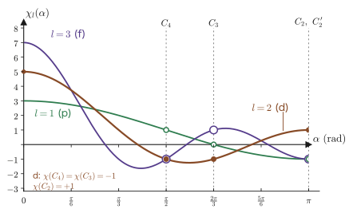

Chapter 45The Ligand Field Seen through Group Theory — Point Groups, Character Tables, and Irreducible Representations
In the previous chapter (Chapter 44), we found the energy of a single 3d electron in the field of six negative point charges arranged octahedrally by solving a 5×5 secular equation. The fivefold degenerate d level split into a twofold degenerate $e_g$ level and a threefold degenerate $t_{2g}$ level, located at $+6Dq$ and $-4Dq$. That calculation, however, used a concrete model: “point charges” and “hydrogen-like 3d orbitals.” The reader may suspect the following. Would the conclusion that the level “splits into two and three” change if the model were changed a little? Does the distinction between $t_{2g}$ and $e_g$ still hold in real complexes and crystals, where the electron clouds of the ligands penetrate into the metal in a covalent manner?
The answer is that it does hold. The splitting pattern, that is, how many levels the level splits into and what the degeneracy of each of them is, is determined not by the details of the model but only by the symmetry of the arrangement of the ligands. Let us think about a familiar example. When we strike a square drum, there are two ways of vibrating that produce sounds of the same pitch (a vibration with one antinode in the horizontal direction and two antinodes in the vertical direction, and the vibration obtained by interchanging the horizontal and vertical directions). This is not an accident; it occurs because a square coincides with itself when it is rotated by 90°. If the drum is made rectangular, the pitches of these two sounds drift apart. It is exactly the same in quantum mechanics: the degeneracy of electron orbitals reflects the symmetry of the potential. In classical mechanics, symmetry gives rise to conserved quantities (Introductory University Physics AD 03, Chapter 46, Section 46.2 (in Japanese)), but in quantum mechanics, in addition to conserved quantities, it gives rise to degeneracy and selection rules.
The language that organizes symmetry as mathematics is group theory. It sounds abstract, but in this chapter we start from the concrete view that “a group is a collection of matrices.” The 48 symmetry operations of the octahedron can be written as 48 matrices of size 3×3 whose components are only $0,\pm1$. Merely by taking the trace of these matrices (the character), we obtain, in a transparent calculation, the facts that the five d orbitals split into $e_g$ and $t_{2g}$, that they split no further, and moreover that the p orbitals do not split while the f orbitals split into three. This same tool also lets us answer questions that we shall use in the following chapters: how to build the molecular orbitals of the metal and the ligands (symmetry-adapted orbitals), why d–d transitions are weak (the Laporte rule), and what terms two $t_{2g}$ electrons form (15 states). It was Wigner and Bethe who brought group theory into quantum mechanics, and Bethe's paper (1929), which became the starting point of ligand field theory, discussed precisely the splitting of the levels of an atom in a crystal by means of group theory.
- The action of a symmetry operation $\hat{R}$ on a function, $\hat{R}f(\bm{r})=f(R^{-1}\bm{r})$, and the fact that, because $\comm{\hat{H}}{\hat{R}}=0$, a set of degenerate eigenfunctions is closed under the symmetry operations
- The definition of a group and point groups. The fact that the symmetry operations of the octahedral group $O_h$ (48 elements, 10 classes) are 48 signed permutation matrices. An introduction to $T_d$, $D_{4h}$, $D_{3d}$, and $C_{3v}$, Schoenflies symbols and international (Hermann–Mauguin) symbols, and the procedure for determining a point group
- Representation matrices, characters, irreducible representations, the great orthogonality theorem (outline), the orthogonality relations of the characters, the reduction formula, and how to read the character tables of $O$ and $O_h$
- The meaning of Mulliken symbols (A, B, E, T, the subscripts 1, 2, g, u, and ′, ″), the convention of lowercase letters (orbitals) and uppercase letters (states), and the double use of $\Gamma$
- Obtaining $E_g+T_{2g}$ from the characters $(5,-1,1,-1,1)$ of the d orbitals. The general formula $\chi_l(\alpha)=\sin\frac{(2l+1)\alpha}{2}/\sin\frac{\alpha}{2}$, and the tables of decomposition in $O_h$ of the s, p, d, and f orbitals and of the S through I terms. The reason why 5 cannot split any further than 2+3 (Schur's lemma)
- The character table of $T_d$, the correlation table for the descent to subgroups ($O_h\to D_{4h},D_{3d},T_d$), the irreducible representations of the normal modes of vibration of $\mathrm{MX_6}$, and the group-theoretical condition for the Jahn–Teller effect
- Projection operators, and the symmetry-adapted orbitals of the ligand σ and π orbitals ($\Gamma_\sigma=A_{1g}+E_g+T_{1u}$, $\Gamma_\pi=T_{1g}+T_{2g}+T_{1u}+T_{2u}$)
- Direct-product representations and selection rules (an introduction to the Wigner–Eckart theorem), the Laporte rule and the spin selection rule, and $(t_{2g})^2={}^3T_{1g}+{}^1A_{1g}+{}^1E_g+{}^1T_{2g}$ (15 states)
Source notes: This chapter supplements material that is not in the original notes. Related notes: Yasuhide Mochizuki, “Physics Notes: Quantum Mechanics 3,” pp. 67–68 (a single d electron in a field of cubic symmetry).
45.1 Degeneracy Arises from Symmetry — $[\hat{H},\hat{R}]=0$
45.1.1 Symmetry operations and their action on functions
The Hamiltonian of the problem in Chapter 44, for a single electron, was
\begin{equation} \hat{H}=-\frac{\hbar^2}{2m_{\mathrm{e}}}\nabla^2+V(\bm{r}),\qquad V(\bm{r})=V_{\mathrm{core}}(r)+V_{\mathrm{lig}}(\bm{r}) \label{eq:45-H} \end{equation}where $V_{\mathrm{core}}(r)$ is the spherically symmetric potential produced by the nucleus and the core electrons of the metal ion, and $V_{\mathrm{lig}}(\bm{r})$ is the potential produced by the six ligands. The fact that the ligands are arranged octahedrally appears as the property that $V_{\mathrm{lig}}$ is “unchanged under certain coordinate transformations.” To state this property precisely, we first define “coordinate transformation” and “transformation of a function” and distinguish between the two.
Definition 45.1: Symmetry operation
Consider a transformation of space that does not move the origin, $\bm{r}\to R\bm{r}$. Here $R$ is a real 3×3 matrix (an orthogonal matrix) satisfying $R^{\mathsf T}R=I$; if $\det R=+1$ it is a rotation, and if $\det R=-1$ it is a transformation that includes a reflection or an inversion (an improper transformation). Suppose the whole arrangement of atoms, such as the ligands, is moved by $R$. If the moved arrangement coincides with the original arrangement (disregarding the distinction between atoms), then $R$ is called a symmetry operation of that arrangement.
For example, the ligand positions of an octahedron, $(\pm a,0,0)$, $(0,\pm a,0)$, $(0,0,\pm a)$, are merely interchanged under the $90^\circ$ rotation about the $z$ axis, $R=C_4(z)$, that is, $(x,y,z)\to(-y,x,z)$, which takes $(a,0,0)\to(0,a,0)\to(-a,0,0)\to\cdots$, and as a whole they coincide with the original positions. Therefore $C_4(z)$ is a symmetry operation of this arrangement.
Next we specify the action on functions (wave functions). For a coordinate transformation $R$, we define “the function obtained by moving the wave function $f(\bm{r})$ by $R$,” namely $\hat{R}f$, as follows (the hat indicates that this is an operator acting on functions).
Definition 45.2: Action of a symmetry operation on a function
\begin{equation} (\hat{R}f)(\bm{r})=f(R^{-1}\bm{r}) \label{eq:45-Rhat} \end{equation}That is, the value of $\hat{R}f$ at the point $\bm{r}$ is the value of $f$ at the point $R^{-1}\bm{r}$, which is carried to $\bm{r}$ by $R$.
Why do we use the inverse $R^{-1}$ rather than $R$? Look at Figure 45.1. Suppose a function $f$ has a peak around a point $\bm{r}_0$. When we move this function by $R$, the peak should move to around the point $R\bm{r}_0$. That is, the value of the new function $\hat{R}f$ at the point $R\bm{r}_0$ must equal the value of the original function $f$ at the point $\bm{r}_0$: $(\hat{R}f)(R\bm{r}_0)=f(\bm{r}_0)$. If we rename the point $R\bm{r}_0$ as $\bm{r}$, then $\bm{r}_0=R^{-1}\bm{r}$, so we obtain Eq. \eqref{eq:45-Rhat}. In other words, “when we shift a function, we take its value by pulling back in the opposite direction.” This is the same situation as what we learned in high school mathematics: “when a graph is translated to the right by $a$, $f(x)\to f(x-a)$” (replacing $x$ by $x-a$ is the inverse of the translation $x\to x+a$).
Theorem 45.1: Products of symmetry operations and their action on functions
For two coordinate transformations $R_1$ and $R_2$, the action on functions preserves the order of the product:
\begin{equation} \hat{R}_1\hat{R}_2=\widehat{R_1R_2} \label{eq:45-prod} \end{equation}Here the left-hand side means “first apply $\hat{R}_2$, then apply $\hat{R}_1$,” and the right-hand side is the operator corresponding to the coordinate transformation $R_1R_2$ ($R_2$ first, $R_1$ afterward). Moreover, $\hat{R}$ is linear and does not change the inner product: $\int(\hat{R}f)^*(\hat{R}g)\,\dd\tau=\int f^*g\,\dd\tau$.
Proof
Let $g=\hat{R}_2f$; then $g(\bm{r})=f(R_2^{-1}\bm{r})$. Applying $\hat{R}_1$ to this and substituting $R_1^{-1}\bm{r}$ for $\bm{r}$ in Eq. \eqref{eq:45-Rhat}, we obtain
$$(\hat{R}_1\hat{R}_2f)(\bm{r})=g(R_1^{-1}\bm{r})=f\bigl(R_2^{-1}R_1^{-1}\bm{r}\bigr)=f\bigl((R_1R_2)^{-1}\bm{r}\bigr)=(\widehat{R_1R_2}f)(\bm{r}).$$In the third equality we used $(R_1R_2)^{-1}=R_2^{-1}R_1^{-1}$. Linearity follows from $(\hat{R}(\alpha f+\beta g))(\bm{r})=\alpha f(R^{-1}\bm{r})+\beta g(R^{-1}\bm{r})=\alpha(\hat{R}f)(\bm{r})+\beta(\hat{R}g)(\bm{r})$ (the operation of substituting $R^{-1}\bm{r}$ into $f$ is linear in $f$). For the inner product, we change the integration variable to $\bm{r}'=R^{-1}\bm{r}$. Since the absolute value of the determinant of an orthogonal matrix is 1, the volume element $\dd\tau$ does not change, and $\int f^*(R^{-1}\bm{r})\,g(R^{-1}\bm{r})\,\dd\tau=\int f^*(\bm{r}')g(\bm{r}')\,\dd\tau'$.
∎
Caution: Do not define it as $f(R\bm{r})$
If we define $(\hat{R}'f)(\bm{r})=f(R\bm{r})$, nothing goes wrong as long as we look at only a single application, but the order of the product is reversed, giving $\hat{R}_1'\hat{R}_2'=\widehat{R_2R_1}'$, so Eq. \eqref{eq:45-prod} fails to hold. The factor $R^{-1}$ is needed in order to build a “group representation” whose order matches that of matrix products (we check this concretely in the next example).
Example 45.1: How quadratic expressions change under $C_4(z)$, and the order of products
(1) Find the action $\hat{R}_1$ of $R_1=C_4(z)$ ($(x,y,z)\to(-y,x,z)$) on $xy$, $yz$, $zx$, $x^2-y^2$, and $z^2$. (2) Let $R_2=C_2(x)$ (the $180^\circ$ rotation about the $x$ axis, $(x,y,z)\to(x,-y,-z)$). For the function $f=y$, compute $\hat{R}_1\hat{R}_2f$ and verify that it agrees with $\widehat{R_1R_2}f$, which corresponds to the coordinate transformation $R_1R_2$. Also show that the two do not agree for the (wrong) definition $(\hat{R}'f)(\bm{r})=f(R\bm{r})$.
Solution. (1) $R_1^{-1}$ is $(x,y,z)\to(y,-x,z)$ (the inverse of the way $R_1$ moves $x\to y$, $y\to-x$). By Eq. \eqref{eq:45-Rhat}, $(\hat{R}_1f)(x,y,z)=f(y,-x,z)$. Therefore
$$\hat{R}_1(xy)=y\cdot(-x)=-xy,\quad \hat{R}_1(yz)=(-x)\,z=-zx,\quad \hat{R}_1(zx)=z\,y=yz,$$ $$\hat{R}_1(x^2-y^2)=y^2-x^2=-(x^2-y^2),\quad \hat{R}_1(z^2)=z^2.$$(2) Since $R_2^{-1}=R_2$, $(\hat{R}_2f)(x,y,z)=f(x,-y,-z)$. For $f=y$, $\hat{R}_2y=-y$. Next we apply $\hat{R}_1$. We have $\hat{R}_1y=(\text{second argument})=-x$ (substituting $(y,-x,z)$ into $f(x,y,z)=y$ gives $-x$), so $\hat{R}_1(-y)=x$. Hence $\hat{R}_1\hat{R}_2y=x$. On the other hand, $R_1R_2$ is as follows: $C_2(x)$ takes $(x,y,z)\to(x,-y,-z)$, and then $C_4(z)$ takes $(x,-y,-z)\to(y,x,-z)$, so $R_1R_2:(x,y,z)\to(y,x,-z)$. Its inverse is the same transformation, so $(\widehat{R_1R_2}y)(x,y,z)=(\text{second argument})=x$. The two indeed agree.
For the wrong definition, $\hat{R}_2'y=(R_2\bm{r})_y=-y$ and $\hat{R}_1'y=(R_1\bm{r})_y=x$, so $\hat{R}_1'\hat{R}_2'y=\hat{R}_1'(-y)=-x$. But $(\widehat{R_1R_2}'y)=(R_1R_2\bm{r})_y=x$, and the signs do not match. This is because the order of the product is reversed (computing $\widehat{R_2R_1}'y=(R_2R_1\bm{r})_y$ gives $-x$, which does agree).
45.1.2 $\comm{\hat{H}}{\hat{R}}=0$ and degeneracy
We define the symmetry of the Hamiltonian as follows.
Definition 45.3: Symmetry operations of the Hamiltonian
A symmetry operation $R$ is a symmetry operation of the Hamiltonian $\hat{H}$ if $\hat{R}\hat{H}\hat{R}^{-1}=\hat{H}$, that is, if
\begin{equation} \comm{\hat{H}}{\hat{R}}=\hat{H}\hat{R}-\hat{R}\hat{H}=0 \label{eq:45-comm} \end{equation}holds. For $\hat{H}$ in Eq. \eqref{eq:45-H}, the kinetic energy term is invariant under any orthogonal transformation (explained below), so the condition reduces to $V(R^{-1}\bm{r})=V(\bm{r})$.
Let us verify this equivalence. First, the kinetic energy: the action of $\hat{R}$ replaces the variable $\bm{r}\to R^{-1}\bm{r}$, and the Laplacian $\nabla^2=\partial_x^2+\partial_y^2+\partial_z^2$ does not change its form under orthogonal transformations (rotations and reflections). Therefore $\hat{R}\nabla^2\hat{R}^{-1}=\nabla^2$. Next, the potential term is a multiplication operator, and for any function $f$ we have
$$(\hat{R}V\hat{R}^{-1}f)(\bm{r})=(V\hat{R}^{-1}f)(R^{-1}\bm{r})=V(R^{-1}\bm{r})\,(\hat{R}^{-1}f)(R^{-1}\bm{r})=V(R^{-1}\bm{r})\,f(\bm{r}).$$In the last equality we substituted $\bm{r}'=R^{-1}\bm{r}$ into $(\hat{R}^{-1}f)(\bm{r}')=f(R\bm{r}')$ (note that $f(RR^{-1}\bm{r})=f(\bm{r})$). Hence $\hat{R}V\hat{R}^{-1}$ is “the operator that multiplies by $V(R^{-1}\bm{r})$,” and the condition for symmetry is that this equal the operator that multiplies by $V(\bm{r})$. The octahedral potential of Chapter 44 satisfies this condition for all 48 operations (Section 45.2).
Theorem 45.2: Symmetry and degeneracy
If $\hat{R}$ commutes with $\hat{H}$ and $\hat{H}\psi=E\psi$, then $\hat{R}\psi$ is also an eigenfunction with the same energy $E$: $\hat{H}(\hat{R}\psi)=E(\hat{R}\psi)$. Therefore the set of all eigenfunctions of energy $E$ (the degenerate eigenspace) is closed under all the symmetry operations $\hat{R}$ of $\hat{H}$.
Proof
$\hat{H}(\hat{R}\psi)=\hat{R}(\hat{H}\psi)=\hat{R}(E\psi)=E\,\hat{R}\psi$. In the first equality we used $\comm{\hat{H}}{\hat{R}}=0$, and in the last equality we used the linearity of $\hat{R}$.
∎
From this, the structure of the degeneracy can be read off as follows. Suppose there are $d$ independent eigenfunctions belonging to $E$, denoted $\psi_1,\dots,\psi_d$ (the level is $d$-fold degenerate). Since each $\hat{R}\psi_i$ is also an eigenfunction belonging to $E$, it can be written as a linear combination of $\psi_1,\dots,\psi_d$:
\begin{equation} \hat{R}\psi_i=\sum_{j=1}^{d}D(R)_{ji}\,\psi_j \label{eq:45-Dmat} \end{equation}This $d\times d$ matrix $D(R)$ is the “representation matrix” that we define in the next section. Under the symmetry operations, the eigenfunctions in the set belonging to a degenerate level are carried into one another. This is the meaning of “degeneracy arises from symmetry.” Conversely, between two functions that are never carried into one another by symmetry operations, there is no reason that forces them to be degenerate.
Example 45.2: The threefold degeneracy of $t_{2g}$ follows “of necessity” from the symmetry operations
For the 3d levels in an octahedral potential, show from the symmetry operations alone that (1) $d_{yz}$ and $d_{zx}$, (2) all three of $d_{xy}$, $d_{yz}$, $d_{zx}$, and (3) the two functions $d_{z^2}$ and $d_{x^2-y^2}$ are degenerate. (4) Show that there is no such reason for degeneracy between $d_{z^2}$ and $d_{xy}$.
Solution. (1) For the symmetry operation $C_4(z)$ of the octahedron, part (1) of Example 45.1 gives $\hat{R}_1(yz)=-zx$ and $\hat{R}_1(zx)=yz$. By Theorem 45.2, $\hat{R}_1d_{yz}=-d_{zx}$ has the same energy as $d_{yz}$. The sign is merely a difference of normalization or phase ($-d_{zx}$ and $d_{zx}$ have the same energy), so $d_{yz}$ and $d_{zx}$ have the same energy. (2) Consider the $120^\circ$ rotation $C_3$ about the axis along the body diagonal $(1,1,1)$ ($\bm{e}_x\to\bm{e}_y\to\bm{e}_z\to\bm{e}_x$, that is, $R\bm{r}=(z,x,y)$). Since $R^{-1}\bm{r}=(y,z,x)$, we have $(\hat{R}f)(x,y,z)=f(y,z,x)$, and
$$\hat{R}(xy)=yz,\qquad \hat{R}(yz)=zx,\qquad \hat{R}(zx)=xy$$Since the functions cycle through $d_{xy}\to d_{yz}\to d_{zx}\to d_{xy}$, all three have the same energy. (3) Acting with the same $C_3$ on $e_1=(2z^2-x^2-y^2)/(2\sqrt3)$ and $e_2=(x^2-y^2)/2$, we obtain
$$\hat{R}e_1=\frac{2x^2-y^2-z^2}{2\sqrt3}=-\tfrac12e_1+\tfrac{\sqrt3}{2}e_2,\qquad \hat{R}e_2=\frac{y^2-z^2}{2}=-\tfrac{\sqrt3}{2}e_1-\tfrac12e_2$$(this is the upper-left block of the representation matrix of $C_3$ in Eq. \eqref{eq:45-Dd}). If $e_1$ is an eigenfunction of energy $E$, then by Theorem 45.2 $\hat{R}e_1$ is also an eigenfunction with the same $E$, and from it $e_2=\tfrac{2}{\sqrt3}\bigl(\hat{R}e_1+\tfrac12e_1\bigr)$ is also an eigenfunction with the same $E$. Thus the twofold degeneracy of $e_g$ also follows from the symmetry operations alone ($e_1$ and $e_2$ are mixed with each other by $C_3$, so they cannot be separated). (4) The functions of the set $x^2,y^2,z^2$ are permuted among $x^2,y^2,z^2$ by the action of $\hat{R}$, while the functions of the set $xy,yz,zx$ merely change sign or are interchanged within the same set (a property of signed permutation matrices; Section 45.2). Since $z^2$ is never carried into the $xy$ set by any operation (nor conversely), there is no symmetry operation that connects $d_{z^2}$ and $d_{xy}$. Because there is no symmetry that forces degeneracy, even if the two energies happened to be equal, that would (within $O_h$) be merely an accident, and in general they differ. This is the simplest explanation of the distinction between the “threefold $t_{2g}$” and the “twofold $e_g$.”
Example 45.3: Degeneracies in a square box—degeneracy due to symmetry and accidental degeneracy
In a two-dimensional infinite well in the shape of a square of side length $L$ ($0\lt x,y\lt L$), the eigenfunctions are $\psi_{n_1n_2}=\dfrac{2}{L}\sin\dfrac{n_1\pi x}{L}\sin\dfrac{n_2\pi y}{L}$ and the energies are $E_{n_1n_2}=\dfrac{\pi^2\hbar^2}{2m_{\mathrm{e}}L^2}(n_1^2+n_2^2)$ (Chapter 10, Section 10.3). (1) Show that $\psi_{12}$ and $\psi_{21}$ are degenerate because of symmetry. (2) Find the value of $n_1^2+n_2^2$ at which $E_{n_1n_2}$ first becomes threefold degenerate, and discuss whether this degeneracy can be explained by symmetry.
Solution. (1) The $90^\circ$ rotation $C_4$ about the vertical axis through the center $(L/2,L/2)$ of the square, the reflection about the line $x=y$, and so on, are the symmetry operations of this box (with its interior at $V=0$ and its exterior at $V=\infty$). There are eight in all, forming a group of order 8 with the same structure as the point group $C_{4v}$, whose irreducible representations have dimensions $1,1,1,1,2$. The reflection $\sigma$ about the line $y=x$ interchanges $x\leftrightarrow y$, so $\hat{\sigma}\psi_{12}=\psi_{21}$. Hence, by Theorem 45.2, $\psi_{12}$ and $\psi_{21}$ have the same energy $5\times\pi^2\hbar^2/(2m_{\mathrm{e}}L^2)$. A state with $n_1\ne n_2$ is always twofold degenerate: $(n_1,n_2)$ and $(n_2,n_1)$ form a pair. (2) Examining the pairs $(n_1,n_2)$ ($n_i\ge1$) that satisfy $n_1^2+n_2^2=N$, we find that three of them, $(1,7),(7,1),(5,5)$, first appear at $N=50$ ($1+49=25+25=50$). Of these, $(1,7)$ and $(7,1)$ are twofold degenerate through the symmetry that connects them by interchange, but $(5,5)$ goes into itself under $x\leftrightarrow y$ ($\hat{\sigma}\psi_{55}=\psi_{55}$), so it and $\psi_{17}$ are not carried into each other by a symmetry operation. $E_{55}=E_{17}$ is an accidental coincidence, arising from the numerical fact that $7^2+1^2=5^2+5^2$. The degeneracy that is “necessary” from symmetry goes only up to twofold (the dimensions of the irreducible representations of this group are 1 or 2), and a threefold degeneracy is an accidental degeneracy of this kind.
The fact that states of different $l$ in the hydrogen atom (2s and 2p, for example) have the same energy is likewise an “accidental” degeneracy that cannot be explained by the spherical symmetry SO(3) alone; it is explained by a hidden symmetry specific to the Coulomb potential (SO(4), the group of rotations in four-dimensional space) (Lie Group simulator). In a ligand field, such accidental degeneracies do not occur, and the degeneracy is, as we shall see later, equal to one of the dimensions 1, 2, 3 of the irreducible representations.
45.1.3 What group theory can and cannot tell us
Let us first sort out how much can be learned from symmetry. In the calculation of Chapter 44, using the concrete model of point charges and 3d orbitals, we went as far as the positions of the levels, above or below ($e_g$ at $+6Dq$, $t_{2g}$ at $-4Dq$), and the magnitude of the splitting (the expression for $Dq$). Group theory gives only a part of that—the splitting pattern—and it does so independently of the model.
| What is determined by group theory (symmetry) alone | What is determined by the physics (the concrete form of the Hamiltonian) |
|---|---|
| The splitting pattern: into how many levels it splits and what the degeneracy of each level is ($E_g$ and $T_{2g}$ for d orbitals) | The ordering of the levels (whether $e_g$ lies above or below: above for point charges, below for a tetrahedron) |
| The basis functions belonging to each level ($\{z^2,x^2-y^2\}$ and $\{xy,yz,zx\}$) | The magnitude of the splitting (how many eV $\Delta_o$ is; it depends on the covalent character, the kind of ligand, and the distance) |
| Which matrix elements of the perturbation vanish (block diagonalization of the secular equation) | The values of the nonzero matrix elements ($Dq$, Racah parameters, etc.) |
| Allowed and forbidden transitions (selection rules), and whether the Jahn–Teller effect occurs | The intensity of a transition, the magnitude of the distortion |
| The pairs of symmetry types for which a ligand orbital and a metal orbital can bond (symmetry-adapted orbitals) | The strength of the bond, the orbital energies |
| The center-of-gravity rule: for a potential with the $l=0$ component removed, the average of the split levels weighted by their degeneracies does not move (it follows from the symmetry together with a property of the spherically symmetric rotation group $SO(3)$; Example 45.12) | The position of the average itself (the magnitude of the spherically symmetric part $V_0$) |
This division of labor runs through the whole chapter. When the model changes, the right-hand column changes, but the left-hand column does not. For example, of the relation “$e_g:t_{2g}=+6Dq:-4Dq$” seen in Chapter 44, the fact that the levels split “into two and three” is guaranteed by group theory (Section 45.5). The ratio $3:-2$ (the center-of-gravity rule) follows when a property of the spherically symmetric rotation group is added to group theory (Example 45.12). On the other hand, the value of $10Dq$ in $\mathrm{cm^{-1}}$ can be found only by fixing the oxidation state of the transition metal, the ligands, and the bond length, and then using experiment or precise calculation (from the next chapter on). Moreover, the lower the symmetry, the more components are allowed and the finer the splitting becomes. This too is the domain of group theory (descent to subgroups, Section 45.6).
Intuition: Group theory is a ledger of “what moves together”
A set of orbitals that are carried into one another by symmetry operations always moves “together,” at the same energy. The ledger that counts every way of “moving together” without omission is the character table. From the ledger we can read off which orbitals fall into the same set and which into different sets, but whether each set is lifted up or pushed down is not written in the ledger. What decides that is concrete physics, such as the repulsion from the point charges calculated in the previous chapter.
45.2 Point Groups and Symmetry Operations — $O_h$, $T_d$, $D_{4h}$, $C_{3v}$
45.2.1 The definition of a group, and the smallest example $C_{3v}$
What kind of structure arises when we collect all the symmetry operations of an object? If we perform two symmetry operations in succession (a product), the result is again a symmetry operation of that object. The operation of doing nothing (the identity operation) is also a symmetry operation, and every symmetry operation has an inverse operation that undoes it. A group is what we obtain by extracting these four properties.
Definition 45.4: Groups, conjugacy, and classes
Suppose that a product $ab$ is defined for any two elements $a,b$ of a set $G$. If the following four conditions are satisfied, $G$ is called a group. (i) Closure: $a,b\in G\Rightarrow ab\in G$. (ii) Associativity: $(ab)c=a(bc)$. (iii) There exists an identity element $E$: $Ea=aE=a$ for all $a$. (iv) Inverses exist: for every $a$ there is an $a^{-1}\in G$ such that $aa^{-1}=a^{-1}a=E$. The number of elements of a group is called its order and is denoted $h$ (it is unrelated to the Planck constant $h$). In general the product need not be commutative ($ab\ne ba$ is allowed).
Two elements $a,b$ of a group are said to be conjugate if there exists an element $x\in G$ such that $b=xax^{-1}$. A collection of mutually conjugate elements is called a conjugacy class (or simply a class), and the number of elements contained in a class is denoted $h_c$. Every element belongs to exactly one class, and $h_c$ is a divisor of the order $h$. For example, $C_4(x)$, $C_4(y)$, and $C_4(z)$ are conjugate, because they are connected to one another by operations of $O_h$ that interchange the coordinate axes (for example, $C_3$); they are “the same kind of operation seen from a different viewpoint.”
The product of symmetry operations means “performing the operations in succession,” with the operation on the right performed first (the same convention as in Theorem 45.1 on the action of operations on functions: in $ab$, $b$ comes first and $a$ second). A group consisting of symmetry operations that leave the origin fixed (rotations, reflections, inversion, and so on) is called a point group. A group that includes the translation operations of a crystal is a space group (Solid-State Physics, AD 06, Chapter 5). The ligand field treated in this chapter is centered on a single point, the metal ion, so a point group is sufficient.
Example 45.4: Multiplication table and conjugacy classes of $C_{3v}$
Consider an arrangement in which three atoms sit at the vertices of an equilateral triangle and one more atom sits directly above its center (the three H atoms of ammonia $\mathrm{NH_3}$ seen from above; number the three H atoms 1, 2, 3 and view them from above). Its symmetry operations are the following six (Figure 45.2). $E$ (do nothing); $C_3$ (rotation by $120^\circ$ about the axis through the center, $1\to2\to3\to1$); $C_3^2$ (rotation by $240^\circ$); and $\sigma_1,\sigma_2,\sigma_3$ (reflections in the mirror planes containing the center and vertex 1, 2, 3, respectively; for example, $\sigma_1$ interchanges 2 and 3). (1) Construct the multiplication table and verify the four conditions for a group. (2) Find the conjugacy classes and state the number of classes.
Solution. (1) We write each operation as an interchange (permutation) of the vertices. $C_3$ is $(1\to2,\ 2\to3,\ 3\to1)$, $\sigma_1$ is $(2\leftrightarrow3)$, and so on. The product $ab$ means performing $b$ first and $a$ second. For example, for $C_3\sigma_1$ we first perform $\sigma_1$ ($1\to1$, $2\to3$, $3\to2$) and then $C_3$, so $1\to1\to2$, $2\to3\to1$, $3\to2\to3$. The net result is the interchange $1\leftrightarrow2$, and since it does not move 3, it is $\sigma_3$. Similarly, $\sigma_1C_3$ performs $C_3$ first and then $\sigma_1$, so $1\to2\to3$, $2\to3\to2$, $3\to1\to1$; that is, it is $\sigma_2$. Computing all the products gives Table 45.2.
| $a\backslash b$ | $E$ | $C_3$ | $C_3^2$ | $\sigma_1$ | $\sigma_2$ | $\sigma_3$ |
|---|---|---|---|---|---|---|
| $E$ | $E$ | $C_3$ | $C_3^2$ | $\sigma_1$ | $\sigma_2$ | $\sigma_3$ |
| $C_3$ | $C_3$ | $C_3^2$ | $E$ | $\sigma_3$ | $\sigma_1$ | $\sigma_2$ |
| $C_3^2$ | $C_3^2$ | $E$ | $C_3$ | $\sigma_2$ | $\sigma_3$ | $\sigma_1$ |
| $\sigma_1$ | $\sigma_1$ | $\sigma_2$ | $\sigma_3$ | $E$ | $C_3$ | $C_3^2$ |
| $\sigma_2$ | $\sigma_2$ | $\sigma_3$ | $\sigma_1$ | $C_3^2$ | $E$ | $C_3$ |
| $\sigma_3$ | $\sigma_3$ | $\sigma_1$ | $\sigma_2$ | $C_3$ | $C_3^2$ | $E$ |
Every entry of the table is one of the six elements, so (i) the set is closed. (iii) The identity element is $E$ (its row and column are the same as the headings). (iv) The inverses can be read off from the fact that each row contains exactly one $E$: $C_3^{-1}=C_3^2$, $\sigma_k^{-1}=\sigma_k$. (ii) Associativity holds because the composition of permutations always satisfies associativity. Also, $C_3\sigma_1=\sigma_3$ and $\sigma_1C_3=\sigma_2$ are different, so this group is not commutative. Each of the six elements appears exactly once in every row and every column (the rearrangement theorem: if $ab=ac$, multiplying by $a^{-1}$ from the left gives $b=c$, so the same element cannot appear twice in the same row).
(2) We examine the conjugacy of Definition 45.4 using the multiplication table. Let us find $\sigma_1C_3\sigma_1^{-1}=\sigma_1C_3\sigma_1$ from the table. Since $C_3\sigma_1=\sigma_3$, we get $\sigma_1\sigma_3=C_3^2$ (row $\sigma_1$, column $\sigma_3$), so $C_3$ and $C_3^2$ are conjugate. Next we find $C_3\sigma_1C_3^{-1}=C_3\sigma_1C_3^2$. Since $\sigma_1C_3^2=\sigma_3$ (row $\sigma_1$, column $C_3^2$) and $C_3\sigma_3=\sigma_2$, $\sigma_1$ and $\sigma_2$ are conjugate. Similarly $\sigma_3$ is also conjugate to them, and in the end the group splits into three classes:
$$\{E\},\qquad \{C_3,\,C_3^2\},\qquad \{\sigma_1,\,\sigma_2,\,\sigma_3\}$$The number of classes is 3; in symbols the classes are written $E,\ 2C_3,\ 3\sigma_v$ (the number 2 of operations belonging to the class is placed in front, as in “$2C_3$”). If two operations are in the same class, the characters defined below take the same value on them (Section 45.3.3). This group has three irreducible representations, whose dimensions are $1,1,2$ ($1^2+1^2+2^2=6=h$); we show this in Section 45.3.
This is the point group of the ammonia molecule $\mathrm{NH_3}$ and of a trigonal-pyramidal ligand field (three ligands arranged in an equilateral triangle, with one atom on its axis). Computational Materials Science, AD 05, Chapter 12, Section 12.2, also takes this group as its first example.
45.2.2 Symmetry elements and symmetry operations — writing them as 3×3 matrices
The operations of a point group are classified into the following five kinds. A geometric figure that serves as the basis of an operation, such as a rotation axis, a mirror plane, or a point, is called a symmetry element, and an operation associated with that element is called a symmetry operation. As in Definition 45.1, every operation can be written as a 3×3 orthogonal matrix. The matrices of the operations about the $z$ axis and with respect to the $xy$ plane are given in Table 45.3.
| Symbol | Symmetry element | Operation | Matrix | $\det$ |
|---|---|---|---|---|
| $E$ | (none) | Do nothing | $\begin{pmatrix}1&0&0\\0&1&0\\0&0&1\end{pmatrix}$ | $+1$ |
| $C_n$ | $n$-fold axis | Rotation by $2\pi/n$ | $\begin{pmatrix}\cos\frac{2\pi}{n}&-\sin\frac{2\pi}{n}&0\\\sin\frac{2\pi}{n}&\cos\frac{2\pi}{n}&0\\0&0&1\end{pmatrix}$ | $+1$ |
| $\sigma$ | Mirror plane | Reflection in the plane | $\sigma_h\ (xy\text{ plane}):\ \begin{pmatrix}1&0&0\\0&1&0\\0&0&-1\end{pmatrix}$ | $-1$ |
| $i$ | Inversion center | $\bm{r}\to-\bm{r}$ | $\begin{pmatrix}-1&0&0\\0&-1&0\\0&0&-1\end{pmatrix}$ | $-1$ |
| $S_n$ | $n$-fold rotation–reflection axis | Rotation by $2\pi/n$, then reflection in the plane perpendicular to the axis | $\sigma_hC_n=\begin{pmatrix}\cos\frac{2\pi}{n}&-\sin\frac{2\pi}{n}&0\\\sin\frac{2\pi}{n}&\cos\frac{2\pi}{n}&0\\0&0&-1\end{pmatrix}$ | $-1$ |
To add some detail, mirror planes are distinguished into three kinds according to their relation to the principal axis (the rotation axis of highest order): a plane perpendicular to the principal axis is called $\sigma_h$ (horizontal), a plane containing the principal axis is called $\sigma_v$ (vertical), and a plane that contains the principal axis and also passes midway between two adjacent $C_2$ axes (perpendicular to the principal axis) is called $\sigma_d$ (dihedral). $C_n^k$ is the operation of performing $C_n$ $k$ times in succession; for example, $C_4^2=C_2$. We have $S_2=i$ and $S_1=\sigma$, and following $C_2(z)$ by inversion gives $\sigma_h$ ($i\,C_2(z)=\sigma_h$: multiplying $\mathrm{diag}(-1,-1,1)$ by $-I$ gives $\mathrm{diag}(1,1,-1)$). An operation whose determinant is $+1$ is called a rotation (a proper operation), and an operation whose determinant is $-1$ is called an improper operation.
Math Tool: Rotation matrices and matrix products
The matrix of $C_n$ in Table 45.3 is the rotation matrix that rotates counterclockwise by $2\pi/n$ about the $z$ axis (University Mathematics, Chapter 16, Section 16.4). For $n=4$, substituting $\cos\frac{\pi}{2}=0$ and $\sin\frac{\pi}{2}=1$ gives $C_4(z)=\begin{pmatrix}0&-1&0\\1&0&0\\0&0&1\end{pmatrix}$, which corresponds to $(x,y,z)\to(-y,x,z)$. Performing operations in succession corresponds to the matrix product (the matrix on the right acts first) (University Mathematics, Chapter 8, Section 8.1).
45.2.3 The octahedral group $O_h$ — 48 signed permutation matrices
In Chapter 44, the arrangement of the ligands was the six points on the coordinate axes, $(\pm a,0,0)$, $(0,\pm a,0)$, $(0,0,\pm a)$; that is, the vertices of a regular octahedron. Let us count all the symmetry operations of this arrangement. The cube whose vertices are the centers of the faces of the regular octahedron (the dual solid) has the same symmetry operations as the original octahedron, so the same group is also the group of symmetry operations of the cube.
Theorem 45.3: The octahedral group $O_h$ consists of 48 signed permutation matrices
The symmetry operations of the arrangement of the vertices $(\pm a,0,0)$, $(0,\pm a,0)$, $(0,0,\pm a)$ of a regular octahedron are the 3×3 matrices in which each row and each column has exactly one entry equal to $+1$ or $-1$ and the remaining entries are 0 (signed permutation matrices), and their number is $3!\times2^3=48$. This group is called the octahedral group $O_h$. Of the 48 matrices, the 24 with $\det=+1$ are rotations; they form a group, called the rotation group $O$.
Proof
Since a symmetry operation $R$ (an orthogonal matrix) permutes the six vertices among themselves, the image of the vertex $a\bm{e}_j$, namely $R(a\bm{e}_j)=a\times(R\text{'s }j\text{th column})$, must be one of the six vertices $\pm a\bm{e}_k$. Therefore each column of $R$ has the form $\pm\bm{e}_k$. By orthogonality, different columns correspond to different $k$ (otherwise two columns would be parallel), so the values of $k$ for the columns form a permutation of $\{1,2,3\}$ ($3!=6$ ways), and the sign of each column can be chosen independently as $\pm$ ($2^3=8$ ways). Conversely, every matrix constructed in this way maps the set of vertices onto itself, and because it is an orthogonal matrix it preserves distances, so it is a symmetry operation. Hence there are $6\times8=48$ of them. Since $\det R=(\text{sign of the permutation})\times(\text{product of the column signs})$, half of them, 24, have determinant $+1$ and the other half have determinant $-1$. Those with $-1$ are equal to those with $+1$ multiplied by the inversion $i=-I$ ($\det=-1$): $O_h=O\times\{E,i\}$.
∎
Let us sort these 48 operations into sets of conjugate ones (that is, into classes). Conjugate matrices have the same trace $\operatorname{tr}R$ and the same determinant ($\operatorname{tr}(xRx^{-1})=\operatorname{tr}R$, $\det(xRx^{-1})=\det R$). Moreover, whether a matrix is diagonal (that is, whether it involves an interchange of axes) is also unchanged by conjugation. Conversely, the fact that matrices with equal values of these three quantities ($\operatorname{tr}R$, $\det R$, and whether the matrix is diagonal) are conjugate to one another can be verified by forming $xRx^{-1}$ for all 48 matrices (Example 45.5 (3)). As a result, each triple of values gives exactly one class (Table 45.4).
| Class | Number | $\operatorname{tr}R$ | $\det R$ | Geometric meaning and example matrix |
|---|---|---|---|---|
| $E$ | 1 | 3 | $+1$ | Does nothing. Identity matrix |
| $8C_3$ | 8 | 0 | $+1$ | Rotations by $\pm120^\circ$ about the four body diagonals. $C_3(1,1,1)$: $(x,y,z)\to(z,x,y)$ |
| $3C_2$ ($=C_4^2$) | 3 | $-1$ | $+1$ | Rotation by $180^\circ$ about a coordinate axis (diagonal matrix). $C_2(z)=\mathrm{diag}(-1,-1,1)$ |
| $6C_4$ | 6 | 1 | $+1$ | Rotations by $\pm90^\circ$ about a coordinate axis. $C_4(z)=\begin{pmatrix}0&-1&0\\1&0&0\\0&0&1\end{pmatrix}$ |
| $6C_2'$ | 6 | $-1$ | $+1$ | Rotation by $180^\circ$ about an axis through an edge midpoint (such as $(1,\pm1,0)$) (non-diagonal matrix). $(x,y,z)\to(y,x,-z)$ |
| $i$ | 1 | $-3$ | $-1$ | Inversion. $-I$ |
| $8S_6$ | 8 | 0 | $-1$ | $i\times C_3$. $(x,y,z)\to(-z,-x,-y)$ |
| $3\sigma_h$ | 3 | 1 | $-1$ | Reflection in a coordinate plane (diagonal matrix). $\sigma_h(xy)=\mathrm{diag}(1,1,-1)$ |
| $6S_4$ | 6 | $-1$ | $-1$ | $i\times C_4$. $(x,y,z)\to(y,-x,-z)$ |
| $6\sigma_d$ | 6 | 1 | $-1$ | Reflection in a diagonal plane (such as $x=\pm y$) (non-diagonal matrix). $(x,y,z)\to(y,x,z)$ |
The numbers add up to $1+8+3+6+6+1+8+3+6+6=48$, in agreement with Theorem 45.3. The 24 rotations are the classes in the upper five rows of the table ($E,8C_3,3C_2,6C_4,6C_2'$: $1+8+3+6+6=24$), and the 24 operations obtained by multiplying by the inversion are the classes in the lower five rows. $O_h$ has 10 classes in all. In this chapter we list the classes in this order ($E,8C_3,3C_2,6C_4,6C_2',i,8S_6,3\sigma_h,6S_4,6\sigma_d$).
Example 45.5: Counting the matrices of $O_h$
(1) Write the 3×3 matrices of $C_4(z)$, $C_3(1,1,1)$, and $i$, and check that $C_4^4=E$, $C_3^3=E$, and $i^2=E$, respectively. (2) To which class does the product $C_4(z)\,C_2(x)$ belong, and what kind of operation is it? (3) Show a procedure for generating all the signed permutation matrices on a computer and classifying them by $(\operatorname{tr}R,\det R)$ and whether they are diagonal matrices, to confirm that the numbers in Table 45.4 are obtained.
Solution. (1) $C_4(z)=\begin{pmatrix}0&-1&0\\1&0&0\\0&0&1\end{pmatrix}$ moves $\bm{e}_x\to\bm{e}_y\to-\bm{e}_x$. $C_4^2=\mathrm{diag}(-1,-1,1)=C_2(z)$, and $C_4^4=(C_4^2)^2=I$. $C_3(1,1,1)=\begin{pmatrix}0&0&1\\1&0&0\\0&1&0\end{pmatrix}$ moves $\bm{e}_x\to\bm{e}_y\to\bm{e}_z\to\bm{e}_x$ ($\bm{r}\to(z,x,y)$). Applying it three times takes each component once around the cycle and returns to $I$: $C_3^3=I$. For $i=-I$ we have $i^2=I$. (2) If $C_2(x)=\mathrm{diag}(1,-1,-1)$ is performed first, the first column of $C_4(z)C_2(x)$ is $C_4\bm{e}_x=\bm{e}_y$, the second column is $C_4(-\bm{e}_y)=\bm{e}_x$, and the third column is $C_4(-\bm{e}_z)=-\bm{e}_z$, so
$$C_4(z)\,C_2(x)=\begin{pmatrix}0&1&0\\1&0&0\\0&0&-1\end{pmatrix},\qquad (x,y,z)\to(y,x,-z).$$We have $\operatorname{tr}=-1$, $\det=(0\cdot0-1\cdot1)\cdot(-1)=+1$, and the matrix is not diagonal, so this is an operation of the class $6C_2'$ (a $180^\circ$ rotation about the $(1,1,0)$ axis). (3) Proceed as follows.
import itertools, numpy as np
mats = []
for p in itertools.permutations(range(3)): # permutations of the columns: 3! = 6 ways
for s in itertools.product([1, -1], repeat=3): # signs: 2^3 = 8 ways
M = np.zeros((3, 3), int)
for i in range(3):
M[p[i], i] = s[i] # column i has the entry s[i] e_{p(i)}
mats.append(M)
print(len(mats)) # 48
from collections import Counter
classes, seen = [], set()
for A in mats:
if tuple(A.flat) in seen:
continue
cl = {tuple((X @ A @ X.T).flat) for X in mats} # all matrices conjugate to A (for orthogonal matrices X^{-1} = X^T)
seen |= cl
classes.append(cl)
print(len(classes), sorted(len(c) for c in classes)) # 10 [1, 1, 3, 3, 6, 6, 6, 6, 8, 8]
print(Counter((int(np.trace(M)), int(round(np.linalg.det(M))), bool((M == np.diag(np.diag(M))).all())) for M in mats))The number of conjugacy classes is 10, and their sizes are $1,1,3,3,6,6,6,6,8,8$ (the same as the numbers in Table 45.4). Counting the triples $(\operatorname{tr}M,\ \det M,\ M\text{ is diagonal or not})$ for the matrices (the final Counter) gives: one matrix for $(3,+1)$; eight for $(0,+1)$; three diagonal and six non-diagonal for $(-1,+1)$; six for $(1,+1)$; one for $(-3,-1)$; eight for $(0,-1)$; three diagonal and six non-diagonal for $(1,-1)$; and six for $(-1,-1)$. These agree with the numbers in Table 45.4. That the product of any two of the 48 matrices is again one of the 48 (that is, that the set is closed) can also be verified with the same set.
45.2.4 Somewhat lower symmetries — $T_d$, $D_{4h}$, $D_{3d}$, and the names of point groups
In actual complexes and crystals, the arrangement of the ligands is not always a perfect octahedron. Point groups with lower symmetry than $O_h$ arise one after another: a tetrahedron with coordination number four, an octahedron elongated (or compressed) along an axis, a trigonally twisted octahedron, and so on. Representative ones are collected in Table 45.5, together with their orders, international symbols, and examples. Every one of them is a subgroup consisting only of those operations of $O_h$ that preserve the given arrangement of ligands ($C_{3v}$ is a subgroup of $T_d$, and therefore of $O_h$).
| Point group | Order | International symbol | Example | Relation to $O_h$ |
|---|---|---|---|---|
| $O_h$ | 48 | $m\bar{3}m$ ($m$-3$m$) | Regular octahedron: $\mathrm{SF_6}$, $[\mathrm{Fe(CN)_6}]^{3-}$, the cation site of an $\mathrm{NaCl}$-type crystal | — |
| $O$ | 24 | $432$ | (Only the rotations of the octahedron; the chiral case) | Only the rotations of $O_h$ |
| $T_d$ | 24 | $\bar{4}3m$ (-43$m$) | Regular tetrahedron: $\mathrm{CH_4}$, $[\mathrm{CoCl_4}]^{2-}$ | Subgroup (has no inversion) |
| $D_{4h}$ | 16 | $4/mmm$ | Square plane: $[\mathrm{PtCl_4}]^{2-}$. An octahedron stretched or compressed along an axis | Subgroup (the $z$ axis is a fourfold axis) |
| $D_{3d}$ | 12 | $\bar{3}m$ (-3$m$) | A trigonally distorted octahedron (trigonal antiprism) | Subgroup (the body diagonal is a threefold axis) |
| $C_{3v}$ | 6 | $3m$ | $\mathrm{NH_3}$, tripod-shaped coordination | Subgroup (also a subgroup of $T_d$) |
| $C_3$ | 3 | $3$ | The $\mathrm{Al^{3+}}$ ($\mathrm{Cr^{3+}}$) site in corundum $\mathrm{Al_2O_3}$ (a low-symmetry site in which only the threefold axis remains) | Subgroup |
Two notations. Point groups have two kinds of names. In molecular spectroscopy and chemistry one uses the Schoenflies symbols ($O_h$, $T_d$, $D_{4h}$, $C_{3v}$), and in crystallography one uses the international symbols (Hermann–Mauguin symbols). An international symbol lists, for each of several fixed directions (for a cubic crystal, in the order $[100]$, $[111]$, $[110]$), the highest-order rotation axis in that direction (the number $n$) or rotoinversion axis ($\bar{n}$, an axis about which a rotation and an inversion are performed in succession), together with the mirror plane perpendicular to that direction ($m$). For example, $m\bar{3}m$ means “there are mirror planes perpendicular to the coordinate axes, there is a $\bar{3}$ axis along the body diagonal, and there are mirror planes perpendicular to the face-diagonal directions” (there are also fourfold axes along the coordinate axes: the full symbol is $4/m\,\bar{3}\,2/m$). $4/mmm$ means “a mirror plane perpendicular to the fourfold axis ($4/m$), and two kinds of mirror planes $m$, $m$ containing that axis.” The correspondence between the two symbols is read off from the table, as in $O_h=m\bar{3}m$, $T_d=\bar{4}3m$, $D_{4h}=4/mmm$. In the calculation commands on the derivation page of the related simulator (Derivation of Many-Electron States), the point group is specified by its international symbol ($m$-3$m$). Since $T_d$ has no inversion, the subscripts g and u introduced below are not attached to it.
Example 45.6: Determining the point group
Determine the point groups of the following molecules and complexes by the procedure of Figure 45.4. (1) $\mathrm{SF_6}$, (2) $\mathrm{CH_4}$, (3) $[\mathrm{PtCl_4}]^{2-}$ (square planar), (4) water $\mathrm{H_2O}$, (5) an octahedron stretched along a body diagonal (the $(1,1,1)$ direction) so that it has only a trigonal distortion about the threefold axis (a trigonally distorted octahedron).
Solution. (1) $\mathrm{SF_6}$: a regular octahedron. It is not a linear molecule and has several axes of $C_3$ or higher (three $C_4$ axes and four $C_3$ axes), so it belongs to the cubic system. Proceeding to (b) of Figure 45.4, there is no $C_5$ axis, there are $C_4$ axes, and there is an inversion center, so the group is $O_h$. (2) $\mathrm{CH_4}$: a regular tetrahedron. It belongs to the cubic system, and proceeding to (b), there is no $C_5$ axis and no $C_4$ axis either (only four $C_3$ axes and three $C_2$ axes). There are three $S_4$ axes and six $\sigma_d$ planes, and there is no inversion center, so the group is $T_d$. (3) $[\mathrm{PtCl_4}]^{2-}$: neither linear nor cubic. The axis of highest order is the $C_4$ axis perpendicular to the molecular plane. There are four $C_2$ axes perpendicular to this axis (two passing through $\mathrm{Cl}$ and two passing between the $\mathrm{Cl}$ atoms), so it belongs to the $D_{n}$ family. Since the molecular plane is $\sigma_h$, the group is $D_{4h}$. (4) $\mathrm{H_2O}$: not linear. There is only one $C_2$ axis ($n=2$). There is no $C_2$ axis perpendicular to the $C_2$ axis, and there is no $\sigma_h$. Since there are two mirror planes containing the $C_2$ axis, the group is $C_{2v}$. (5) Trigonally distorted octahedron: the only axis of $C_3$ or higher is the single body diagonal, so the system is not cubic. The principal axis is $C_3$. There are three $C_2$ axes perpendicular to the principal axis, there is no $\sigma_h$, and there are three mirror planes containing the principal axis ($\sigma_d$), so the group is $D_{3d}$ (there is also an inversion $i$). (If the metal–ligand distances of the upper and lower ligand triangles differ, inversion no longer carries one triangle onto the other, the inversion center disappears, and the symmetry is lowered to $C_{3v}$. If, in addition, the twist angle between the two triangles deviates from $60^\circ$, the mirror planes also disappear and the group becomes $C_3$. The $\mathrm{Al^{3+}}$ ($\mathrm{Cr^{3+}}$) site in corundum $\mathrm{Al_2O_3}$ has $C_3$ symmetry and is an example of this. The $\mathrm{Al}$–$\mathrm{O}$ distances to the upper and lower $\mathrm{O_3}$ triangles differ, being about $1.86$ Å and about $1.97$ Å.)
45.2.5 Point group of the crystal field — symmetry of the Hamiltonian
The symmetry operations so far have been symmetries of the “arrangement of the ligands.” Let us sort out the relation to the symmetry of the Hamiltonian $\hat{H}$ of Eq. \eqref{eq:45-H}. $V_{\mathrm{core}}(r)$ is spherically symmetric and invariant under all rotations and reflections (this symmetry is denoted $O(3)$; it is the group formed by all rotations about the origin and the inversion, the three-dimensional orthogonal group, and it is the starting point of this book's discussion of angular momentum). Therefore the symmetry of $\hat{H}$ is determined by the symmetry of the ligand potential $V_{\mathrm{lig}}$, that is, by the point group of the arrangement of the ligands. For an octahedral arrangement, $\hat{H}$ has all 48 symmetry operations of $O_h$.
Let us restate the results of Chapter 44 in this language. The cubic-symmetry potential obtained in Section 44.2
$$V_4=\frac{35\Lambda}{4a^5}\left(x^4+y^4+z^4-\frac35r^4\right)$$is invariant under every operation of $O_h$. Indeed, a signed permutation matrix only changes the signs of the coordinates and interchanges them, so neither $x^4+y^4+z^4$ nor $r^2=x^2+y^2+z^2$ changes. A quantity with this property of being “invariant under all operations” is called totally symmetric (belonging to $A_{1g}$); its precise meaning is given from Section 45.3 onward. The constant term $V_0=6\Lambda/a$ of Chapter 44 is also totally symmetric. On the other hand, when there are four ligands rather than six (a square), the potential has a $k=2$ term (proportional to $x^2+y^2-2z^2$), and this term changes its form under the $O_h$ operation $C_4(x)$ ($x\to x,y\to-z,z\to y$, etc.), so it is not invariant under $O_h$. In that case the symmetry of the Hamiltonian is lowered to $D_{4h}$. Thus the point group of the crystal field specifies the symmetry of $\hat{H}$. From here on, the whole structure of the degeneracy is read off from this point group.
45.3 Representations, Characters, and Irreducible Representations
Caution: How the symbols of this chapter are used
(i) $h$ is the order of the group (the number of elements) and is unrelated to the Planck constant $h$. $h_c$ is the number of elements contained in class $c$. (ii) $d_a$ is the dimension of the irreducible representation $a$. (iii) $D(R)$ is the representation matrix of the operation $R$, and is distinct from the D term of many-electron atoms (Chapter 34) and from the unit of splitting $Dq$ (Chapter 44). (iv) The subscripts $a,b$ that distinguish irreducible representations are distinct from the distance $a$ to the ligands (the same as in Chapter 44). (v) $\sigma_h$, $\sigma_v$, $\sigma_d$ are mirror planes (symmetry operations), and are distinct from the σ-type orbitals $\sigma_{\pm x}$ etc. of the ligands in Section 45.7 and from the Pauli matrix $\sigma_x$ of the spin. (vi) $\Gamma$ denotes a representation (Section 45.4.2).
45.3.1 Representation matrices — when a set of functions is closed under the symmetry operations
In Section 45.1 we saw that the functions in a set of degenerate eigenfunctions $\psi_1,\dots,\psi_d$ are carried into one another by a symmetry operation $\hat{R}$ and are connected by the matrix $D(R)$ of Eq. \eqref{eq:45-Dmat}. This structure is not limited to eigenfunctions: it can be used for any set of functions that is closed under the symmetry operations (the five d orbitals, the six σ orbitals of the ligands, the three functions $x,y,z$, and so on).
Definition 45.5: Representation matrices and representations
Suppose a set of functions $f_1,\dots,f_d$ (called a basis) is closed under all the symmetry operations $\hat{R}$ of a group $G$, and the action of each operation can be written as
\begin{equation} \hat{R}f_i=\sum_{j=1}^{d}D(R)_{ji}\,f_j \label{eq:45-repdef} \end{equation}Then the $d\times d$ matrix $D(R)$ is called the representation matrix of $R$. The set $\{D(R)\}$ of the representation matrices of all the operations is called a ($d$-dimensional) representation of $G$. $D(R)_{ji}$ is “the component of $f_j$ when $\hat{R}$ acts on $f_i$” (the $i$th column holds the components of $\hat{R}f_i$).
Representation matrices obey the same multiplication rule as the original group:
\begin{equation} D(R_1R_2)=D(R_1)\,D(R_2) \label{eq:45-Dprod} \end{equation}Indeed, by Theorem 45.1, $\hat{R}_1\hat{R}_2=\widehat{R_1R_2}$, so $\hat{R}_1\hat{R}_2f_i=\hat{R}_1\sum_jD(R_2)_{ji}f_j=\sum_jD(R_2)_{ji}\sum_kD(R_1)_{kj}f_k=\sum_k\bigl[D(R_1)D(R_2)\bigr]_{ki}f_k$ is equal to $\widehat{R_1R_2}f_i=\sum_kD(R_1R_2)_{ki}f_k$. Since the $f_k$ are independent, the coefficients are equal one by one, and Eq. \eqref{eq:45-Dprod} follows. (This is where the use of $R^{-1}$ in Definition 45.2 pays off.) In other words, a representation is an assignment of matrices to the elements of a group that preserves the multiplication rule.
Intuition: The representation matrix of $x,y,z$ is $R$ itself
Consider the basis $f_1=x$, $f_2=y$, $f_3=z$. For an orthogonal matrix, $R^{-1}=R^{\mathsf T}$, so $\hat{R}x_j=(R^{-1}\bm{r})_j=\sum_k(R^{-1})_{jk}x_k=\sum_kR_{kj}x_k$, and comparing with Eq. \eqref{eq:45-repdef} gives $D(R)_{kj}=R_{kj}$, that is, $D(R)=R$. The 48 signed permutation matrices of $O_h$ are themselves a three-dimensional representation with $x,y,z$ as the basis. This is the simplest actual example of the view “a group = a collection of matrices.”
Here are some other examples. (a) The six σ orbitals of the ligands, $\sigma_{+x},\sigma_{-x},\dots,\sigma_{-z}$ (orbitals pointing toward the metal ion), are merely interchanged with one another by the symmetry operations, so their representation matrices are 6×6 permutation matrices (Section 45.7). (b) The single function $r^2=x^2+y^2+z^2$ is unchanged by every operation, and $D(R)=(1)$ (a 1×1 matrix): this is called the totally symmetric representation. (c) The function $xyz$ changes sign under $C_4(z)$, $xyz\to y\cdot(-x)\cdot z=-xyz$, and $D(C_4)=(-1)$.
45.3.2 Reducible and irreducible representations
The choice of basis is not unique. If we take a new basis $f_j'=\sum_iS_{ij}f_i$ ($S$ is an invertible matrix), the representation matrices change by a similarity transformation $D'(R)=S^{-1}D(R)S$. Representations that are carried into one another by a similarity transformation in this way are regarded as the same (equivalent representations).
Definition 45.6: Reducible and irreducible representations
If, by a suitable change of basis, all the $D(R)$ can be brought simultaneously into block-diagonal matrices (of the same form)
$$D(R)=\begin{pmatrix}D^{(1)}(R)&0\\0&D^{(2)}(R)\end{pmatrix}$$then the representation is called reducible, and we write $D=D^{(1)}\oplus D^{(2)}$. If it cannot be block-diagonalized by any change of basis, it is called irreducible.
Reducibility means that the basis functions can be divided into several smaller sets, each of which is closed under the symmetry operations by itself (containing no functions from the other sets). An irreducible representation is the smallest set of functions that cannot be divided any further. The representation formed by the set of degenerate eigenfunctions of a level is (unless the degeneracy is accidental) an irreducible representation. Therefore the degeneracy equals the dimension of the irreducible representation.
Intuition: Block diagonalization is “sorting”
When the symmetry operations “stir” a set of functions, if the range of the stirring stays inside the set, the sets can be treated independently. For the five d orbitals $(u,v,xy,yz,zx)$ ($u=2z^2-x^2-y^2$, $v=x^2-y^2$), the 48 operations of the octahedron only change the signs of $x,y,z$ or interchange them. Therefore the functions $u,v$ built from $x^2,y^2,z^2$ mix only among themselves, and $xy,yz,zx$ are only interchanged among themselves while changing signs. This sorting $5=2\oplus3$ is the essence of why the 5×5 matrix of Chapter 44 split into 2×2 and 3×3 blocks (we check this concretely in the next example).
Concretely, let us write the representation matrices of $C_4(z)$ and $C_3(1,1,1)$ in the d-orbital basis (the normalized $e_1=(2z^2-x^2-y^2)/(2\sqrt3)$ and $e_2=(x^2-y^2)/2$, and $xy,yz,zx$; $e_1,e_2$ have the same normalization constant on the unit sphere). From the result of Example 45.1 and the action $\hat{R}f(x,y,z)=f(y,z,x)$ of $C_3$ (Example 45.2), we obtain
\begin{equation} D(C_4)=\begin{pmatrix}1&0\\0&-1\end{pmatrix}\oplus\begin{pmatrix}-1&0&0\\0&0&1\\0&-1&0\end{pmatrix},\qquad D(C_3)=\begin{pmatrix}-\tfrac12&-\tfrac{\sqrt3}{2}\\ \tfrac{\sqrt3}{2}&-\tfrac12\end{pmatrix}\oplus\begin{pmatrix}0&0&1\\1&0&0\\0&1&0\end{pmatrix} \label{eq:45-Dd} \end{equation}where the basis is ordered as $(e_1,e_2)$ and $(xy,yz,zx)$. For example, $\hat{R}_{C_3}e_1=\dfrac{2x^2-y^2-z^2}{2\sqrt3}=-\tfrac12e_1+\tfrac{\sqrt3}{2}e_2$ and $\hat{R}_{C_3}e_2=\dfrac{y^2-z^2}{2}=-\tfrac{\sqrt3}{2}e_1-\tfrac12e_2$. The upper-left 2×2 block is the reflection $\mathrm{diag}(1,-1)$ for $C_4$ and a $120^\circ$ rotation matrix for $C_3$. This 2×2 set cannot be split any further into 1×1 sets, whatever basis we choose (the eigenvectors of $C_4$ are only $e_1$ and $e_2$, but $C_3$ does not return $e_1$ to a constant multiple of $e_1$). The irreducibility of the lower-right 3×3 set will be checked with the characters in the next section.
45.3.3 Characters
Definition 45.7: Character
The trace of a representation matrix is called the character:
\begin{equation} \chi(R)=\operatorname{tr}D(R)=\sum_iD(R)_{ii} \label{eq:45-chi} \end{equation}The character condenses the information of the whole matrix into a single number, yet it retains almost all the information needed in group theory. It has the following properties.
- Invariant under a change of basis: $\operatorname{tr}(S^{-1}DS)=\operatorname{tr}D$. Therefore equivalent representations have the same character.
- Elements in the same class have the same character: $D(xRx^{-1})=D(x)D(R)D(x)^{-1}$, so the representation matrices of $R$ and $xRx^{-1}$ are similar and their characters are equal.
- $\chi(E)=d$: it is the trace of the identity matrix, so the $E$ entry of the character equals the dimension of the representation.
- The character of a direct sum is the sum of the characters: $\chi=\chi^{(1)}+\chi^{(2)}$ (the trace of a block-diagonal matrix is the sum of the traces of the blocks).
Therefore, if we know one number for each class (ten numbers for $O_h$), we know the whole character of the representation. For example, for the representation of $x,y,z$ we have $D(R)=R$, so $\chi(R)=\operatorname{tr}R$: from the trace column of Table 45.4, for the classes $(E,8C_3,3C_2,6C_4,6C_2',i,8S_6,3\sigma_h,6S_4,6\sigma_d)$ we get $(3,0,-1,1,-1,-3,0,1,-1,1)$. The character of the representation of the d orbitals (looking at the $e_1,e_2$ part under $C_4$ gives $1-1=0$, and the $xy,yz,zx$ part gives $-1+0+0=-1$, for a total of $-1$) will be examined carefully in Section 45.5.
45.3.4 Schur's lemma and the great orthogonality theorem
The characters of irreducible representations have surprisingly strong orthogonality relations. To show this, we use the following two theorems. Here, since a symmetry operation $\hat{R}$ does not change the inner product (Theorem 45.1), if we take an orthonormal basis, the representation matrix $D(R)$ is a unitary matrix ($D(R)^\dagger=D(R)^{-1}=D(R^{-1})$). From here on, we take all representations to be unitary.
Theorem 45.4: Schur's lemma
(1) If $D$ is an irreducible representation and a matrix $M$ satisfies $D(R)M=MD(R)$ for all $R$, then $M=\lambda I$ (a constant multiple of the identity matrix). (2) If $D^{(a)}$ and $D^{(b)}$ are two mutually inequivalent irreducible representations and a matrix $M$ satisfies $D^{(a)}(R)M=MD^{(b)}(R)$ for all $R$, then $M=0$.
Proof (outline)
(1) Take an eigenvector $\bm{c}$ of $M$ with eigenvalue $\lambda$. Multiplying $M\bm{c}=\lambda\bm{c}$ by $D(R)$ gives $MD(R)\bm{c}=\lambda D(R)\bm{c}$, so the set of all eigenvectors with eigenvalue $\lambda$ (the eigenspace) is closed under all the $D(R)$. Since the representation is irreducible, this eigenspace must be the whole space, and $M=\lambda I$. (2) The space spanned by the column vectors of $M$ is closed under $D^{(a)}(R)$, and the null space of $M$ is closed under $D^{(b)}(R)$. Since the representations are irreducible, the image is 0 or the whole space, and the kernel is 0 or the whole space. $M\ne0$ is possible only when both are the whole space or both are 0, but that is the case in which the two representations are equivalent ($M$ is invertible). Since they are not equivalent, $M=0$.
∎
Theorem 45.5: Great orthogonality theorem
For the matrix elements of mutually inequivalent irreducible representations $D^{(a)}$, $D^{(b)}$ (of dimensions $d_a$, $d_b$) of a group of order $h$, the following holds:
\begin{equation} \frac1h\sum_{R}D^{(a)}(R)^*_{ij}\,D^{(b)}(R)_{kl}=\frac{1}{d_a}\,\delta_{ab}\,\delta_{ik}\,\delta_{jl} \label{eq:45-great} \end{equation}Proof (outline)
For an arbitrary $d_a\times d_b$ matrix $X$, form $M=\sum_RD^{(a)}(R)\,X\,D^{(b)}(R)^{-1}$. Let $S$ be an arbitrary element; then $D^{(a)}(S)M=\sum_RD^{(a)}(SR)\,X\,D^{(b)}(R)^{-1}$. Here we let $R'=SR$ (when $R$ runs over all the elements, $R'$ also runs over all the elements); then $R^{-1}=R'^{-1}S$, so that $D^{(a)}(S)M=\sum_{R'}D^{(a)}(R')\,X\,D^{(b)}(R')^{-1}D^{(b)}(S)=MD^{(b)}(S)$. From Theorem 45.4, $M=0$ if $a\ne b$, and $M=\lambda I$ if $a=b$; taking the trace of both sides gives $\lambda d_a=h\operatorname{tr}X$, that is, $\lambda=h\operatorname{tr}X/d_a$. Take for $X$ the matrix whose only nonzero entry is a 1 in the $(j,l)$ component, and use $D(R)^{-1}=D(R)^\dagger$ (unitarity) to write the $(i,k)$ component of $M$ as $M_{ik}=\sum_RD^{(a)}(R)_{ij}\,D^{(b)}(R)^*_{kl}$; this is 0 if $a\ne b$ and $(h/d_a)\delta_{ik}\delta_{jl}$ if $a=b$. Taking the complex conjugate of both sides gives Eq. \eqref{eq:45-great}.
∎
This theorem can be read as “the matrix elements of different irreducible representations are orthogonal as functions (as functions of $R$).” At this stage there is no need to go into the details of the proof. In practice, we use only the following orthogonality relation for characters.
Theorem 45.6: Orthogonality relations for characters
For the characters of the irreducible representations $a,b$,
\begin{equation} \frac1h\sum_{R}\chi^{(a)}(R)^*\,\chi^{(b)}(R)=\frac1h\sum_{c}h_c\,\chi^{(a)}(c)^*\,\chi^{(b)}(c)=\delta_{ab} \label{eq:45-charorth} \end{equation}Here $c$ is a class and $h_c$ is the number of elements belonging to that class (since the characters are equal within a class, the sum has been grouped by class). In addition, the following hold:
- The number of irreducible representations equals the number of classes.
- $\displaystyle\sum_ad_a^2=h$ (the sum of the squares of the dimensions of the irreducible representations equals the order of the group).
- $\displaystyle\sum_a\chi^{(a)}(c)^*\chi^{(a)}(c')=\dfrac{h}{h_c}\delta_{cc'}$ (orthogonality between columns).
Proof (outline)
In Eq. \eqref{eq:45-great}, set $i=j$ and $k=l$ and sum over $i$ and $k$; the left-hand side becomes $\frac1h\sum_R\chi^{(a)}(R)^*\chi^{(b)}(R)$ and the right-hand side becomes $\frac{1}{d_a}\delta_{ab}\sum_{i,k}\delta_{ik}\delta_{ik}=\frac{1}{d_a}\delta_{ab}\,d_a=\delta_{ab}$. This is Eq. \eqref{eq:45-charorth}. Next, form the matrix $U_{ac}=\sqrt{h_c/h}\,\chi^{(a)}(c)$; then Eq. \eqref{eq:45-charorth} means that “each row (irreducible representation) is orthonormal.” Let the number of irreducible representations be $n_{\mathrm{ir}}$ and the number of classes be $n_{\mathrm{cl}}$. Then $U$ is an $n_{\mathrm{ir}}\times n_{\mathrm{cl}}$ matrix, and since its $n_{\mathrm{ir}}$ row vectors are mutually orthogonal and lie in an $n_{\mathrm{cl}}$-dimensional space, $n_{\mathrm{ir}}\le n_{\mathrm{cl}}$. On the other hand, the space of class functions (functions that are constant on each class) is $n_{\mathrm{cl}}$-dimensional, and from the general theory of the great orthogonality theorem (the decomposition of the regular representation), the characters of the irreducible representations span the whole of it. Therefore $n_{\mathrm{ir}}=n_{\mathrm{cl}}$ and $U$ is a square matrix, and if its rows are orthonormal, so are its columns (a unitary matrix): $\sum_aU_{ac}^*U_{ac'}=\delta_{cc'}$. This is the orthogonality relation for columns. Setting $c=c'=E$ gives $\sum_a d_a^2=h$. (For $O_h$, we have checked, one row at a time, that the 10 rows of Table 45.7 later on are indeed mutually orthogonal, that the normalization of each row is 48 ($\sum_ch_c\chi^2=48$), and furthermore that $\sum d_a^2=48$. Since no further irreducible representations can exist, because $n_{\mathrm{ir}}\le n_{\mathrm{cl}}=10$, these 10 rows are complete.)
∎
From this result, $O_h$ (order 48, with 10 classes) has 10 irreducible representations. However, the condition “10 representations whose squared dimensions sum to 48” alone does not determine the dimensions uniquely (for example, $(1,1,1,1,2,2,3,3,3,3)$ also gives $4+8+36=48$). What determines the dimensions is the direct-product structure $O_h=O\times\{E,i\}$. Since the inversion $i$ commutes with all the operations and $i^2=E$, each irreducible representation of $O_h$ is obtained by attaching to an irreducible representation of the rotation group $O$ one of two labels: even ($g$) or odd ($u$) under $i$. The group $O$ (order 24) has five classes ($E,8C_3,3C_2,6C_4,6C_2'$), so it has five irreducible representations, and the only set of five positive integers whose squares sum to 24 is $1,1,2,3,3$ ($1+1+4+9+9=24$). Therefore the dimensions of the irreducible representations of $O_h$ are $1,1,2,3,3$, in two sets, $g$ and $u$, and $2(1^2+1^2+2^2+3^2+3^2)=48$. There is no irreducible representation of dimension four or higher.
This is the basis for the statement that “in cubic symmetry the degeneracy is at most three” (this concerns orbitals without spin; the double group with spin, which includes the spin–orbit interaction, also has fourfold-degenerate irreducible representations). Therefore, (i) a fivefold degenerate level cannot remain as it is in an $O_h$-symmetric field but must split. (ii) The degeneracy remaining after the splitting is at most threefold. There are several ways of writing 5 as a sum of dimensions no larger than three, such as $2+3$, $1+1+3$, and $1+2+2$, and which one occurs is determined by the character calculation in Section 45.5.
45.3.5 The reduction formula
When a reducible representation is given, there is a formula that finds, from the characters alone, which irreducible representations it contains and how many times each.
Formula 45.1: Reduction formula
If a representation with character $\chi(R)$ contains $n_a$ copies of the irreducible representation $a$ ($\chi=\sum_an_a\chi^{(a)}$), then
\begin{equation} n_a=\frac1h\sum_{c}h_c\,\chi^{(a)}(c)^*\,\chi(c) \label{eq:45-reduce} \end{equation}Moreover, $\frac1h\sum_ch_c\lvert\chi(c)\rvert^2=\sum_an_a^2$, and this equals 1 if and only if the representation is irreducible. The dimension satisfies $\chi(E)=\sum_an_ad_a$.
Proof
If the reducible representation is block-diagonalized, its character is the sum of the characters of the irreducible representations, $\chi=\sum_bn_b\chi^{(b)}$. Multiplying both sides by $\chi^{(a)}(c)^*h_c$, summing over the classes, and using the orthogonality relation for characters \eqref{eq:45-charorth}, we obtain $\frac1h\sum_ch_c\chi^{(a)}(c)^*\chi(c)=\sum_bn_b\delta_{ab}=n_a$. Similarly, the inner product of $\chi$ with itself is $\sum_{a,b}n_an_b\delta_{ab}=\sum_an_a^2$, and for nonnegative integers $n_a$, $\sum n_a^2=1$ holds only when $n_a=1$ for one particular $a$ and all the others are 0, that is, when the representation is irreducible.
∎
This formula is the heart of the calculations in this chapter. An actual calculation proceeds as follows: (i) find the character for a representative operation of each class; (ii) take the “inner product” with each row of the character table and divide by $h$; (iii) check that the resulting $n_a$ are nonnegative integers and that $\sum n_ad_a=\chi(E)$.
Example 45.7: Orthogonality of characters and the irreducibility of $T_2$
Using the character table of the rotation group $O$ (Table 45.6 in the next subsection), verify (1) that the characters of $T_1$ and $T_2$ are orthogonal, (2) that the inner product of the $T_2$ character with itself is 1 (irreducible), and (3) that $E$ and $T_2$ are orthogonal. The numbers of elements in the classes are $(1,8,3,6,6)$ for $(E,8C_3,3C_2,6C_4,6C_2')$, $h=24$, the characters of $T_1$ are $(3,0,-1,1,-1)$, those of $T_2$ are $(3,0,-1,-1,1)$, and those of $E$ are $(2,-1,2,0,0)$.
Solution. (1) $\displaystyle\sum_ch_c\chi_{T_1}\chi_{T_2}=1\cdot3\cdot3+8\cdot0\cdot0+3\cdot(-1)(-1)+6\cdot(1)(-1)+6\cdot(-1)(1)=9+0+3-6-6=0$. (2) $\displaystyle\sum_ch_c\chi_{T_2}^2=1\cdot9+8\cdot0+3\cdot1+6\cdot1+6\cdot1=24=h$, hence $\frac{1}{24}\cdot24=1$, so it is irreducible. The same holds for $T_1$, which also gives 24. (3) $\displaystyle\sum_ch_c\chi_E\chi_{T_2}=1\cdot2\cdot3+8\cdot(-1)\cdot0+3\cdot2\cdot(-1)+6\cdot0+6\cdot0=6-6=0$. Note also that the inner product of $E$ with itself is $1\cdot4+8\cdot1+3\cdot4+0+0=24$ (irreducible). Therefore $A_1$, $A_2$, $E$, $T_1$, and $T_2$ are mutually orthogonal irreducible representations. For $O_h$ ($h=48$), the sum over the whole table for rows of the same parity (both $g$ or both $u$) doubles to 48, whereas for different parities the products over the five classes containing $i$ change sign and cancel each other out, giving 0: for example, for $T_{1g}$ and $T_{1u}$ the sum is $24-24=0$.
Example 45.8: Practice in reduction—six σ orbitals
The σ orbitals (the orbitals pointing toward the metal) of the six ligands at the vertices of an octahedron are interchanged under the operations of $O$. The number of orbitals that stay in place and return to themselves under each operation is the character, so $\chi_\sigma=(6,0,2,2,0)$ (for $E,8C_3,3C_2,6C_4,6C_2'$). Reduce this to irreducible representations.
Solution. Apply Eq. \eqref{eq:45-reduce} to the five irreducible representations. Here $h=24$ and $h_c=(1,8,3,6,6)$.
$$n_{A_1}=\frac{1}{24}\bigl[1\cdot6\cdot1+8\cdot0\cdot1+3\cdot2\cdot1+6\cdot2\cdot1+6\cdot0\cdot1\bigr]=\frac{24}{24}=1,$$ $$n_{A_2}=\frac{1}{24}\bigl[6+0+6-12-0\bigr]=0,\qquad n_{E}=\frac{1}{24}\bigl[1\cdot6\cdot2+0+3\cdot2\cdot2+0+0\bigr]=\frac{24}{24}=1,$$ $$n_{T_1}=\frac{1}{24}\bigl[1\cdot6\cdot3+0+3\cdot2\cdot(-1)+6\cdot2\cdot1+0\bigr]=\frac{24}{24}=1,\qquad n_{T_2}=\frac{1}{24}\bigl[18+0-6-12+0\bigr]=0.$$Hence $\Gamma_\sigma=A_1\oplus E\oplus T_1$. Dimension check: $1+2+3=6=\chi_\sigma(E)$. (The result for $O_h$, which takes the presence or absence of inversion into account, is $A_{1g}+E_g+T_{1u}$; we show this in Section 45.7.)
45.3.6 Character tables of $O$ and $O_h$
We first give the character table of the rotation group $O$ (order 24). The rows are the irreducible representations, the columns are the classes, and the entries are the characters. The value in the $E$ column is the dimension of that irreducible representation ($\chi(E)$), and the rightmost column gives the basis functions that transform according to that representation.
| $O$ | $E$ | $8C_3$ | $3C_2(=C_4^2)$ | $6C_4$ | $6C_2'$ | Basis functions |
|---|---|---|---|---|---|---|
| $A_1$ | 1 | 1 | 1 | 1 | 1 | $x^2+y^2+z^2$ |
| $A_2$ | 1 | 1 | 1 | $-1$ | $-1$ | $xyz$ |
| $E$ | 2 | $-1$ | 2 | 0 | 0 | $(2z^2-x^2-y^2,\ x^2-y^2)$ |
| $T_1$ | 3 | 0 | $-1$ | 1 | $-1$ | $(x,y,z)$, rotations $(R_x,R_y,R_z)$ |
| $T_2$ | 3 | 0 | $-1$ | $-1$ | 1 | $(xy,yz,zx)$ |
The character table of $O_h$ has 10 rows, because each of the five irreducible representations of $O$ comes in two versions, even ($g$) or odd ($u$) under the inversion $i$, and it has 10 columns, because the five classes obtained by multiplying by $i$ are added. For $O_h=O\times\{E,i\}$, the characters of a class multiplied by $i$ have the same values as those of $O$ for $g$ and values of opposite sign for $u$.
| $O_h$ | $E$ | $8C_3$ | $3C_2$ | $6C_4$ | $6C_2'$ | $i$ | $8S_6$ | $3\sigma_h$ | $6S_4$ | $6\sigma_d$ | Basis functions |
|---|---|---|---|---|---|---|---|---|---|---|---|
| $A_{1g}$ | 1 | 1 | 1 | 1 | 1 | 1 | 1 | 1 | 1 | 1 | $x^2+y^2+z^2$ |
| $A_{2g}$ | 1 | 1 | 1 | $-1$ | $-1$ | 1 | 1 | 1 | $-1$ | $-1$ | (sixth-degree polynomial) |
| $E_g$ | 2 | $-1$ | 2 | 0 | 0 | 2 | $-1$ | 2 | 0 | 0 | $(2z^2-x^2-y^2,\ x^2-y^2)$ |
| $T_{1g}$ | 3 | 0 | $-1$ | 1 | $-1$ | 3 | 0 | $-1$ | 1 | $-1$ | $(R_x,R_y,R_z)$ |
| $T_{2g}$ | 3 | 0 | $-1$ | $-1$ | 1 | 3 | 0 | $-1$ | $-1$ | 1 | $(xy,yz,zx)$ |
| $A_{1u}$ | 1 | 1 | 1 | 1 | 1 | $-1$ | $-1$ | $-1$ | $-1$ | $-1$ | (higher-order functions) |
| $A_{2u}$ | 1 | 1 | 1 | $-1$ | $-1$ | $-1$ | $-1$ | $-1$ | 1 | 1 | $xyz$ |
| $E_u$ | 2 | $-1$ | 2 | 0 | 0 | $-2$ | 1 | $-2$ | 0 | 0 | (higher-order functions) |
| $T_{1u}$ | 3 | 0 | $-1$ | 1 | $-1$ | $-3$ | 0 | 1 | $-1$ | 1 | $(x,y,z)$ |
| $T_{2u}$ | 3 | 0 | $-1$ | $-1$ | 1 | $-3$ | 0 | 1 | 1 | $-1$ | $\bigl(x(y^2-z^2),\ y(z^2-x^2),\ z(x^2-y^2)\bigr)$ |
How to read the character table. (1) Each row (irreducible representation) satisfies $\sum_ch_c\chi^{(a)}\chi^{(b)}=48\,\delta_{ab}$ (Example 45.7). (2) The $E$ column gives the dimension: $E_g$ is two-dimensional and $T$ is three-dimensional. (3) The basis functions in the rightmost column are the lowest-order functions that transform according to that irreducible representation. $x^2+y^2+z^2$ is totally symmetric ($A_{1g}$), $(x,y,z)$ is $T_{1u}$, $(xy,yz,zx)$ is $T_{2g}$, $(z^2,x^2-y^2)$ is $E_g$, and $(R_x,R_y,R_z)$ is $T_{1g}$. The “$T_{1g}$” of the rotations $R_x,R_y,R_z$ differs from the “$T_{1u}$” of $(x,y,z)$ in its sign under inversion: the position vector (a polar vector) changes sign under inversion, whereas a rotation (an axial vector, a cross product such as $\bm{r}\times\bm{p}$) does not change under inversion. When the determinant of an operation $R$ of $O_h$ is $-1$, an extra factor $\det R$ multiplies the representation matrix of $(R_x,R_y,R_z)$. (4) Rows whose entries are only 1 and $-1$ ($A_1,A_2$) are one-dimensional representations. All of these values can be checked by direct calculation from the 48 matrices of $O_h$ by the method above (for example, the character of the representation of $x,y,z$ is $\operatorname{tr}R$, and the character of an axial vector is $\det R\cdot\operatorname{tr}R$).
Math Tool: Constructing a character table and checking it
A character table is constructed by the following procedure: find (i) $T_{1u}$ from the representation of $x,y,z$, and $T_{1g}$ from that representation multiplied by $\det R$; (ii) $A_{1g}+E_g$ from the permutation representation of $x^2,y^2,z^2$ ($\chi=(3,0,3,1,1,3,0,3,1,1)$); (iii) $T_{2g}$ from $xy,yz,zx$; (iv) $A_{2u}$ from $xyz$; and finally fill in the rest using the orthogonality relations of characters and $\sum d^2=48$. The table so constructed can be checked by the normalization of each row ($\sum h_c\chi^2=48$) and the orthogonality of different rows. The sum of the squares of the dimensions ($2\times(1+1+4+9+9)=48$) also satisfies the condition stated above. All of this can be understood within the linear algebra of University Mathematics (representation matrices, diagonalization). Note also that the decomposition of the d orbitals into irreducible representations, the correspondence between basis functions and irreducible representations, and the decomposition of multiplets, all of which we compute by hand in this chapter, can also be computed with the crystod-group command of CrystOD (--ligand-field, --generate-basis, --multiplet), which reproduces the tables of this chapter (for usage, see the derivation page of the related simulator, Derivation of Many-Electron States).
45.4 How to Read Mulliken Symbols
45.4.1 Rules for the symbols
The names of irreducible representations, $A_{1g}$, $E_g$, $T_{2g}$, and $T_{1u}$, are symbols (Mulliken symbols) introduced by R. S. Mulliken for classifying the electronic states of molecules, and the same symbols are used in spectroscopy, inorganic chemistry, and solid-state physics. The rules for reading them are summarized in Table 45.8.
| Symbol | Meaning | How to recognize it in a character table |
|---|---|---|
| $A$ | A one-dimensional representation. Symmetric under the $C_n$ rotation about the principal axis | $\chi(E)=1$, $\chi(C_n)=+1$ |
| $B$ | A one-dimensional representation. Antisymmetric under the $C_n$ rotation about the principal axis | $\chi(E)=1$, $\chi(C_n)=-1$ (occurs only in groups whose principal axis is of even order, such as $D_{4h}$) |
| $E$ | A two-dimensional representation (twofold degenerate). Not to be confused with the identity operation $E$ or the energy $E$ | $\chi(E)=2$ |
| $T$ | A three-dimensional representation (threefold degenerate). Occurs only in groups of the cubic systems ($O_h$, $T_d$, etc.) and in groups of the icosahedral systems | $\chi(E)=3$ |
| Subscript $1,2$ | Distinction among the $A$'s and the $B$'s: 1 if symmetric, 2 if antisymmetric with respect to a $C_2$ axis perpendicular to the principal axis (or, if there is none, a mirror plane $\sigma_v$). In the cubic systems, $A_1,A_2$ are symmetric and antisymmetric, respectively, with respect to $C_2'$ (or $C_4$). The 1 and 2 of $T_1,T_2$ are a convention: numbers that distinguish the two | $D_{4h}$: $\chi(C_2')=+1$ for $A_{1g}$ and $-1$ for $A_{2g}$ |
| Subscript $g,u$ | Even (gerade) or odd (ungerade) with respect to the inversion $i$. Attached only to groups that have an inversion center | $g$ if $\chi(i)=+\chi(E)$, $u$ if $-\chi(E)$ |
| Superscript ′, ″ (upper right) | ′ if symmetric, ″ if antisymmetric with respect to the mirror plane $\sigma_h$ perpendicular to the principal axis. (Used for groups such as $D_{3h}$, which have $\sigma_h$ but no inversion center.) | ′ if $\chi(\sigma_h)=+\chi(E)$ |
Let us apply these rules to the character table of $O_h$ (Table 45.7). The principal axis of $O_h$ is not uniquely determined (there are three $C_4$ axes), so there is no $B$, and the only one-dimensional representations are $A_{1},A_2$. $A_1$ is $+1$ under $C_4$ and $A_2$ is $-1$. The two-dimensional representation is $E$, and the three-dimensional ones are $T_1$ and $T_2$; each of them comes in a $g$ and a $u$ version. The names “$g$” and “$u$” are determined by the value in the column of $i$ in the character table ($\pm\chi(E)$).
Example 45.9: Reading the symbols—$E_g$, $T_{2g}$, $A_{1g}$, $T_{1u}$, ${}^4A_{2g}$
(1) Using Table 45.7, state in words what $E_g$, $T_{2g}$, $A_{1g}$, $T_{1u}$ mean, in terms of g/u and the degeneracy. (2) Why are the p orbitals $T_{1u}$ while the d orbitals are $E_g+T_{2g}$? (3) What does ${}^4A_{2g}$ represent?
Solution. (1) $E_g$: dimension 2 (twofold degenerate), even under inversion. Representative examples are $d_{z^2}$ and $d_{x^2-y^2}$. $T_{2g}$: dimension 3, even under inversion; the subscript 2 denotes a set different from $T_1$ ($-1$ under $C_4$, $+1$ under $C_2'$). Representative examples are $d_{xy},d_{yz},d_{zx}$. $A_{1g}$: dimension 1, even under inversion, the totally symmetric representation with $+1$ for all operations. Representative examples are the spherically symmetric s orbital and the combination of the six ligand σ orbitals in which “all are added with the same sign.” $T_{1u}$: dimension 3, odd under inversion; a representative example is $(x,y,z)$, that is, the three p orbitals. (2) Since the angular parts of the p orbitals $p_x,p_y,p_z$ are proportional to $x,y,z$ (Chapter 22), they transform in the same way as $x,y,z$, and the representation matrix is $R$ itself. Its character is $\operatorname{tr}R$, which in particular is $-3$ for the inversion $i=-I$, so the representation is irreducible and odd ($u$). The characters $(3,0,-1,1,-1,-3,\dots)$ agree with the row of $T_{1u}$ in Table 45.7. The d orbitals are quadratic expressions in the coordinates, such as $xy,\,x^2-y^2$, and are invariant (even) under inversion ($x,y,z\to-x,-y,-z$). Their decomposition $E_g+T_{2g}$ is derived in Section 45.5. (3) It is the symbol of a many-electron state (term): the superscript 4 at the upper left is the spin multiplicity $2S+1=4$ ($S=\tfrac32$), and $A_{2g}$ indicates that the orbital part follows the one-dimensional representation $A_{2g}$ (nondegenerate, with the sign changing under $C_4$). For example, the ground state of $\mathrm{Cr^{3+}}$ ($d^3$) in an octahedral field is ${}^4A_{2g}$ of the $(t_{2g})^3$ configuration (Chapter 46 and Chapter 47).
45.4.2 Lowercase for orbitals, uppercase for states
When writing the names of irreducible representations, this book observes the following convention.
Definition 45.8: The convention for lowercase and uppercase letters
The symmetry of the orbital of a single electron (a one-electron orbital) is written in lowercase: $a_{1g}$, $e_g$, $t_{2g}$, $t_{1u}$. The states and terms of many-electron systems, and representations themselves (when there is not just one orbital, or when the representation is referred to abstractly), are written in uppercase: $E_g$, $T_{2g}$, ${}^4A_{2g}$, $\Gamma=A_{1g}+E_g+T_{1u}$.
For example, $d_{z^2}$ and $d_{x^2-y^2}$ are “$e_g$ orbitals,” and the state $(e_g)^1$ in which one electron occupies these two is, as a state, $E_g$ (${}^2E_g$). Likewise, the configuration $(t_{2g})^1$ in which one electron enters the $t_{2g}$ orbitals (a $d^1$ ion) is, as a state, the term ${}^2T_{2g}$. We use lowercase when the basis of the representation matrices consists of one-electron orbitals, and uppercase when we refer to the representation as a row of the character table (for example, “the $e_g$ orbitals belong to the $E_g$ representation”). The reason we used the lowercase $e_g$ and $t_{2g}$ in Chapter 44 is that we were talking about one-electron orbitals.
Caution: The double use of $\Gamma$
In this book we use $\Gamma$ as a symbol that refers to a representation abstractly (as in $\Gamma_\sigma$ = the representation formed by the σ orbitals of the ligands, and $\Gamma=A_{1g}+E_g+T_{1u}$). On the other hand, in the band structure of a crystal, the point $\bm{k}=0$ at the center of the first Brillouin zone is called the “$\Gamma$ point” (Solid-State Physics AD 06 and Computational Materials Science AD 05 do the same). The two are different things: the former denotes a representation of symmetry operations, the latter a point in wavenumber space. That the same symbol appears for both is not an accident, however: the electronic states at the $\Gamma$ point are also classified by group theory (as irreducible representations of the symmetry group at the $\Gamma$ point), so both appear under the same symbol. Distinguish them by context. In this chapter, $\Gamma$ used alone has only the meaning of a representation, and a point of the Brillouin zone is always written “$\Gamma$ point.” The classification by the irreducible representations of the group at each wavenumber is treated in Solid-State Physics AD 06, Chapter 11 (in Japanese), and the basics of representations and characters are in Chapter 7 (in Japanese) and Chapter 8 (in Japanese) of the same volume.
45.5 Deriving $t_{2g}$ and $e_g$ from the Transformation Properties of the d Orbitals
45.5.1 Representation matrices and characters of the five d orbitals
Now that the tools are ready, we derive the conclusion $5\to2+3$ of Chapter 44 by group theory. As a basis for the five real d orbitals we take $e_1\propto2z^2-x^2-y^2$ ($d_{z^2}$), $e_2\propto x^2-y^2$ ($d_{x^2-y^2}$), and $xy,yz,zx$ (we write only the angular part; the radial part $R_{32}(r)$ depends only on $r=\lvert\bm{r}\rvert$ and does not change under rotations and reflections, so $\hat{R}$ acts only on the angular part). For an octahedral symmetry operation $R$, the action of $\hat{R}$ amounts to applying $R^{-1}$ to the coordinates as a signed permutation (Section 45.2), so $x^2,y^2,z^2$ are merely interchanged among themselves, and $xy,yz,zx$ are merely interchanged among themselves with changes of sign. Therefore the 5×5 representation matrix splits, for every operation, into a 2×2 block and a 3×3 block in the same way (the $C_4,C_3$ of Eq. \eqref{eq:45-Dd} are examples).
To obtain the character of each class, we need only add up the diagonal elements of the representation matrix of its representative operation (the entries in which a basis function returns to itself). Figure 45.5 shows the action of $C_4(z)$.
The other classes are found similarly (Table 45.9). As representative operations we use $C_3$: $\hat{R}f(x,y,z)=f(y,z,x)$, $C_2(z)$: $f(-x,-y,z)$, $C_2'$: $f(y,x,-z)$, and $C_4(z)$: $f(y,-x,z)$.
| Class (representative operation) | $e_1$ | $e_2$ | $xy$ | $yz$ | $zx$ | $\chi_d$ |
|---|---|---|---|---|---|---|
| $E$ | 1 | 1 | 1 | 1 | 1 | 5 |
| $8C_3$: $(y,z,x)$ | $-\tfrac12$ | $-\tfrac12$ | 0 | 0 | 0 | $-1$ |
| $3C_2$: $(-x,-y,z)$ | 1 | 1 | 1 | $-1$ | $-1$ | 1 |
| $6C_4$: $(y,-x,z)$ | 1 | $-1$ | $-1$ | 0 | 0 | $-1$ |
| $6C_2'$: $(y,x,-z)$ | 1 | $-1$ | 1 | 0 | 0 | 1 |
For the inversion $i$, a d orbital is a quadratic expression in the coordinates, so its sign does not change ($f(-\bm{r})=f(\bm{r})$), and $D(i)=I_5$, $\chi_d(i)=5$. For operations of the form $iR$ ($S_6,\sigma_h,S_4,\sigma_d$), $D(iR)=D(i)D(R)=D(R)$, so the character is the same as the value for the corresponding rotation. In the end, for the 10 classes of $O_h$ we have
\begin{equation} \chi_d=(5,\,-1,\,1,\,-1,\,1,\,5,\,-1,\,1,\,-1,\,1) \label{eq:45-chid} \end{equation}(The classes are listed in the same order as in Table 45.7.) Let us reduce the representation with these characters.
Example 45.10: Deriving $E_g+T_{2g}$ from the characters of the d orbitals
Reduce the characters in Eq. \eqref{eq:45-chid} and show that the five d orbitals become $E_g\oplus T_{2g}$ in $O_h$. Also verify the character $+1$ of $C_2'$ from the diagonal elements in Table 45.9.
Solution. First, the test of irreducibility: forming $\sum_ch_c\chi_d^2$ over the rotation part ($O$, $h=24$) gives $1\cdot25+8\cdot1+3\cdot1+6\cdot1+6\cdot1=48=2\times24$. Since $\sum n_a^2=2$, the representation contains two distinct irreducible representations, once each (if the same irreducible representation appeared twice, we would have $\sum n_a^2=4$). Next we apply the reduction formula \eqref{eq:45-reduce} to the five irreducible representations of $O$ (whether it is $g$ or $u$ is determined to be $g$ by $\chi_d(i)=+5$):
$$n_{A_1}=\tfrac{1}{24}[1\cdot5\cdot1+8\cdot(-1)\cdot1+3\cdot1\cdot1+6\cdot(-1)\cdot1+6\cdot1\cdot1]=\tfrac{5-8+3-6+6}{24}=0,$$ $$n_{A_2}=\tfrac{1}{24}[5-8+3+6-6]=0,\qquad n_{E}=\tfrac{1}{24}[1\cdot5\cdot2+8\cdot(-1)(-1)+3\cdot1\cdot2+0+0]=\tfrac{10+8+6}{24}=1,$$ $$n_{T_1}=\tfrac{1}{24}[1\cdot5\cdot3+0+3\cdot1\cdot(-1)+6\cdot(-1)\cdot1+6\cdot1\cdot(-1)]=\tfrac{15-3-6-6}{24}=0,$$ $$n_{T_2}=\tfrac{1}{24}[15+0-3+6\cdot(-1)(-1)+6\cdot1\cdot1]=\tfrac{15-3+6+6}{24}=1.$$Therefore $\Gamma_d=E_g\oplus T_{2g}$. Dimension check: $2+3=5$. The character of $C_2'$ is the sum of the diagonal elements in the row $6C_2'$ of Table 45.9, $1+(-1)+1+0+0=1$, which agrees with the value in Eq. \eqref{eq:45-chid} ($yz\to-zx$ and $zx\to-yz$ are interchanged, so their diagonal elements are 0).
In conclusion, in a field of $O_h$ symmetry the five d orbitals split into the twofold degenerate $E_g$ and the threefold degenerate $T_{2g}$, and no further. From the rightmost column of Table 45.7, the basis functions belonging to $E_g$ are $d_{z^2}$ and $d_{x^2-y^2}$, and those of $T_{2g}$ are $d_{xy},d_{yz},d_{zx}$; these are the same as $e_g$ and $t_{2g}$ in Definition 44.1 of Chapter 44. In Chapter 44 we split them by computing the 5×5 matrix head-on; here we have reached the same conclusion by computing characters (five numbers).
45.5.2 Characters for general $l$ — determined by the rotation angle alone
The d orbitals had $l=2$, but the splittings of s ($l=0$), p ($l=1$), and f ($l=3$), and further of the terms S, P, D, F, G, H, I ($L=0,\dots,6$) of many-electron atoms, can be examined by the same method. For that purpose, let us find the characters of the representation of the $(2l+1)$ spherical harmonics $Y_l^m$ ($m=-l,\dots,l$) for general $l$.
Formula 45.2: Characters of rotations $\chi_l(\alpha)$
The character of the representation of the $(2l+1)$ functions $Y_l^m$ for a rotation by the angle $\alpha$ is
\begin{equation} \chi_l(\alpha)=\sum_{m=-l}^{l}e^{im\alpha}=\frac{\sin\frac{(2l+1)\alpha}{2}}{\sin\frac{\alpha}{2}},\qquad \chi_l(0)=2l+1 \label{eq:45-chil} \end{equation}The axis of rotation may point in any direction: the character is the same whenever the angle $\alpha$ is the same. Moreover, for an operation multiplied by the inversion $i$, $\chi_l(iR)=(-1)^l\chi_l(R)$.
Derivation
Consider the operation $R_\alpha$ that rotates by the angle $\alpha$ about the $z$ axis. By Eq. \eqref{eq:45-Rhat}, its action on a function of the azimuthal angle $\varphi$ is the replacement $\varphi\to\varphi-\alpha$. Since $Y_l^m\propto e^{im\varphi}$ (Chapter 22), $\hat{R}_\alpha Y_l^m=Y_l^m(\theta,\varphi-\alpha)=e^{-im\alpha}Y_l^m$. That is, in the basis $Y_l^m$ the representation matrix is diagonal, $D(R_\alpha)=\mathrm{diag}(e^{-im\alpha})$. The character is $\chi_l(\alpha)=\sum_{m=-l}^le^{-im\alpha}$, which equals $\sum_me^{im\alpha}$ because the sum is unchanged under the replacement $m\to-m$. This sum is a geometric series with first term $e^{-il\alpha}$, common ratio $e^{i\alpha}$, and $2l+1$ terms, so
$$\sum_{m=-l}^{l}e^{im\alpha}=e^{-il\alpha}\,\frac{1-e^{i(2l+1)\alpha}}{1-e^{i\alpha}}=\frac{e^{-i(l+\frac12)\alpha}-e^{i(l+\frac12)\alpha}}{e^{-i\frac{\alpha}{2}}-e^{i\frac{\alpha}{2}}}=\frac{\sin\frac{(2l+1)\alpha}{2}}{\sin\frac{\alpha}{2}}.$$The second equality follows by multiplying the numerator and the denominator by $e^{-i\alpha/2}$ and simplifying. In the last step we used $2i\sin\theta=e^{i\theta}-e^{-i\theta}$ in the numerator and the denominator. The limit $\alpha\to0$ is, using $\sin x\approx x$, $(2l+1)\alpha/2\div(\alpha/2)=2l+1$. A rotation by the same angle about a different axis only amounts to a change of coordinate axes, so it is conjugate to the rotation about the $z$ axis (if we rotate so that the axis lies along $z$, it becomes the same operation), and the characters are equal. For the inversion $i$, $Y_l^m(-\bm{r})=(-1)^lY_l^m(\bm{r})$ (Chapter 22), so $D(i)=(-1)^lI$, and hence $D(iR)=(-1)^lD(R)$.
∎
The five rotation classes of $O_h$ are $E$ ($\alpha=0$), $C_3$ ($\alpha=2\pi/3$), $C_2$ and $C_2'$ (both $\alpha=\pi$), and $C_4$ ($\alpha=\pi/2$). Substituting into Eq. \eqref{eq:45-chil} gives $\chi_l(\pi)=\sin\frac{(2l+1)\pi}{2}=(-1)^l$, $\chi_l(2\pi/3)=\sin\frac{(2l+1)\pi}{3}\Big/\sin\frac{\pi}{3}$ (for $l=0,1,2,\dots$ this is $1,0,-1,1,0,-1,\dots$, with period 3), and $\chi_l(\pi/2)=\sin\frac{(2l+1)\pi}{4}\Big/\sin\frac{\pi}{4}$ ($1,1,-1,-1,1,1,-1,\dots$, with period 4). Figure 45.6 shows $\chi_l(\alpha)$ for $l=1,2,3$. The characters of the d orbitals, $(5,-1,1,-1,1)$, can be read off as the values of the $l=2$ curve at $\alpha=0,\ 2\pi/3,\ \pi,\ \pi/2$.

45.5.3 The s, p, d, f orbitals and the decomposition of the S through I terms in $O_h$
We list the characters for $l=0,\dots,6$ and show the result of decomposing them with the reduction formula in Table 45.10. Here, for an orbital (one electron) the parity under the inversion $i$ is determined by $(-1)^l$, so even $l$ gives $g$ and odd $l$ gives $u$.
| $l$ | Orbital | Term | $\chi_l$ | Decomposition in $O$ (sum of dimensions) | Irreducible representation in $O_h$ for a one-electron orbital |
|---|---|---|---|---|---|
| 0 | s | S | $(1,1,1,1,1)$ | $A_1$ (1) | $a_{1g}$ |
| 1 | p | P | $(3,0,-1,1,-1)$ | $T_1$ (3) | $t_{1u}$ |
| 2 | d | D | $(5,-1,1,-1,1)$ | $E+T_2$ (2+3) | $e_g+t_{2g}$ |
| 3 | f | F | $(7,1,-1,-1,-1)$ | $A_2+T_1+T_2$ (1+3+3) | $a_{2u}+t_{1u}+t_{2u}$ |
| 4 | g | G | $(9,0,1,1,1)$ | $A_1+E+T_1+T_2$ (1+2+3+3) | $a_{1g}+e_g+t_{1g}+t_{2g}$ |
| 5 | h | H | $(11,-1,-1,1,-1)$ | $E+2T_1+T_2$ (2+6+3) | $e_u+2t_{1u}+t_{2u}$ |
| 6 | i | I | $(13,1,1,-1,1)$ | $A_1+A_2+E+T_1+2T_2$ (1+1+2+3+6) | $a_{1g}+a_{2g}+e_g+t_{1g}+2t_{2g}$ |
From this table we can see into how many levels an atomic level splits in a field of cubic symmetry. The s and p levels do not split (p remains threefold degenerate). The d level splits into two ($E_g+T_{2g}$) and the f level into three ($A_{2u}+T_{1u}+T_{2u}$). The g level can split into four levels ($A_1+E+T_1+T_2$), the h level into the four levels $E+T_1+T_1+T_2$ ($T_1$ appears twice), and the i level into the six levels $A_1+A_2+E+T_1+T_2+T_2$ ($T_2$ appears twice). When the same irreducible representation appears twice, symmetry alone cannot distinguish the two levels, and they may mix with each other.
The one-electron classification shown here holds under the approximation of neglecting the spin–orbit interaction. For the 4f electrons of rare earths, the spin–orbit interaction is larger than the crystal field, and the splitting is usually studied by classifying the multiplets of total angular momentum $J$ with the double group (the irreducible representations of spinors), which includes the spin. The irreducible representations of the double group differ from those of the simple point group; in $O_h$ they are, for example, $E_{1/2}$, $E_{5/2}$ (two-dimensional) and $G_{3/2}$ (four-dimensional). The one-electron picture is valid only in cases such as the 5f systems, where the crystal field is strong.
The rightmost column is for one-electron orbitals (with $g/u$ attached), but exactly the same table can also be used for the terms of many-electron atoms (states with a definite value of L; Chapter 34, Section 34.2). The reason is that the $(2L+1)$ states of the total orbital angular momentum $L$ also transform under rotations in the same way as $Y_L^M$. Since the spin is not changed by the symmetry operations on the orbitals, the multiplicity $2S+1$ is simply carried along. For example, since the terms of a $d^n$ configuration have even parity, we obtain the following:
\begin{equation} {}^{2S+1}D\to{}^{2S+1}(E_g+T_{2g}),\quad {}^{2S+1}F\to{}^{2S+1}(A_{2g}+T_{1g}+T_{2g}),\quad {}^{2S+1}G\to{}^{2S+1}(A_{1g}+E_g+T_{1g}+T_{2g}) \label{eq:45-terms} \end{equation}Concretely, ${}^2D$ ($d^1$, $d^9$) $\to{}^2E_g+{}^2T_{2g}$, ${}^5D$ (high-spin $d^4$, $d^6$) $\to{}^5E_g+{}^5T_{2g}$, ${}^3F$ ($d^2$, $d^8$) $\to{}^3A_{2g}+{}^3T_{1g}+{}^3T_{2g}$, ${}^4F$ ($d^3$, $d^7$) $\to{}^4A_{2g}+{}^4T_{1g}+{}^4T_{2g}$, and ${}^6S$ ($d^5$) $\to{}^6A_{1g}$. These are the starting point of the Tanabe–Sugano diagrams of Chapter 47.
Example 45.11: Reduction of the f orbitals and the G term
(1) Find the characters of the f orbitals ($l=3$) from the formula \eqref{eq:45-chil} and reduce them. Also determine whether they are g or u. (2) Reduce the G term ($L=4$).
Solution. (1) $\chi_3(0)=7$, $\chi_3(2\pi/3)=\sin(7\pi/3)/\sin(\pi/3)=1$, $\chi_3(\pi)=\sin(7\pi/2)/1=-1$, $\chi_3(\pi/2)=\sin(7\pi/4)/\sin(\pi/4)=-1$. Hence, for $(E,8C_3,3C_2,6C_4,6C_2')$, $\chi_f=(7,1,-1,-1,-1)$.
$$n_{A_1}=\tfrac{1}{24}[7+8\cdot1+3(-1)+6(-1)+6(-1)]=\tfrac{7+8-3-6-6}{24}=0,\quad n_{A_2}=\tfrac{1}{24}[7+8-3+6+6]=1,$$ $$n_{E}=\tfrac{1}{24}[1\cdot7\cdot2+8\cdot1\cdot(-1)+3(-1)\cdot2+0+0]=\tfrac{14-8-6}{24}=0,$$ $$n_{T_1}=\tfrac{1}{24}[21+0+3-6+6]=1,\qquad n_{T_2}=\tfrac{1}{24}[21+0+3+6-6]=1.$$Therefore $\Gamma_f=A_2+T_1+T_2$ ($1+3+3=7$). Since the f orbitals are odd under inversion ($l=3$ is odd), they are $A_{2u}+T_{1u}+T_{2u}$. (2) G term: $\chi_4(2\pi/3)=\sin(3\pi)/\sin(\pi/3)=0$, $\chi_4(\pi)=1$, $\chi_4(\pi/2)=\sin(9\pi/4)/\sin(\pi/4)=1$. Thus $\chi_G=(9,0,1,1,1)$. $n_{A_1}=\frac{9+0+3+6+6}{24}=1$, $n_{A_2}=\frac{9+3-6-6}{24}=0$, $n_E=\frac{18+0+6}{24}=1$, $n_{T_1}=\frac{27+0-3+6-6}{24}=1$, $n_{T_2}=\frac{27-3-6+6}{24}=1$. Hence G $\to A_1+E+T_1+T_2$ ($1+2+3+3=9$). (The G term of d electrons is even, so all of these carry the label $g$.)
45.5.4 Why is 5 equal to $2+3$, and why can it not be split further? — the power of Schur's lemma
Since the dimension of an irreducible representation is at most three, the fivefold degenerate d level cannot be split more finely than $E_g$ (2) and $T_{2g}$ (3), no matter what symmetry-preserving perturbation we add. Moreover, the very fact that $E_g$ and $T_{2g}$ are different irreducible representations means that, unless there is a special reason, an energy difference between the two sets is allowed. Stated precisely, this relation becomes the following theorem.
Theorem 45.7: The 5×5 matrix of an $O_h$-symmetric perturbation in the d-orbital space
For an operator $\hat{V}$ that commutes with all the operations of $O_h$ (for example, the potential of an octahedral field), the matrix $V_{ij}=\mel{d_i}{\hat{V}}{d_j}$ in the space of the d orbitals, with the basis taken as $(e_1,e_2\,|\,xy,yz,zx)$, is of the form
\begin{equation} V=\begin{pmatrix}\varepsilon_e&0&0&0&0\\0&\varepsilon_e&0&0&0\\0&0&\varepsilon_t&0&0\\0&0&0&\varepsilon_t&0\\0&0&0&0&\varepsilon_t\end{pmatrix} \label{eq:45-Vd} \end{equation}That is, there are only two independent parameters (the energy $\varepsilon_e$ of $e_g$ and the energy $\varepsilon_t$ of $t_{2g}$), and the values of $\varepsilon_e,\varepsilon_t$ are not determined by symmetry.
Proof
If $\hat{V}$ commutes with the symmetry operations, then its matrix $V$ commutes with the representation matrices $D(R)=D_E(R)\oplus D_{T_2}(R)$: $D(R)V=VD(R)$. Dividing $V$ into 2×2 and 3×3 blocks and writing $V=\begin{pmatrix}V_{EE}&V_{ET}\\V_{TE}&V_{TT}\end{pmatrix}$, commutativity gives $D_E(R)V_{EE}=V_{EE}D_E(R)$, $D_{T_2}(R)V_{TT}=V_{TT}D_{T_2}(R)$, and $D_E(R)V_{ET}=V_{ET}D_{T_2}(R)$. Since $E_g$ and $T_{2g}$ are irreducible and have different dimensions, they are not equivalent to each other. Therefore, from (1) of Schur's lemma (Theorem 45.4), $V_{EE}=\varepsilon_eI_2$ and $V_{TT}=\varepsilon_tI_3$, and from (2), $V_{ET}=V_{TE}^\dagger=0$.
∎
In Chapter 44 we evaluated the 25 components of $A_{ij}$ one by one: the ten off-diagonal elements are 0; of the five diagonal elements, $d_{z^2}$ and $d_{x^2-y^2}$ are equal (both are $4/35$; in Section 44.3 we checked this by linking it to the fact that $d_{z^2}$ and $d_{x^2-y^2}$ mix under $C_3$); and $d_{xy},d_{yz},d_{zx}$ are also equal. Group theory gives the whole of this in a single sentence, Theorem 45.7. The only numerical calculation needed is that of the two quantities $\varepsilon_e$ and $\varepsilon_t$. This is what it means to say that using group theory makes the problem dramatically simpler.
Example 45.12: The center-of-gravity rule—it follows from properties of the spherically symmetric rotation group
For the point-charge field $V_4$ of Chapter 44, the diagonal element of the first-order perturbation was, for $e_g$, $\varepsilon_e=\dfrac{35\Lambda\langle r^4\rangle}{4a^5}\cdot\dfrac{4}{35}$, and for $t_{2g}$, $\varepsilon_t=\dfrac{35\Lambda\langle r^4\rangle}{4a^5}\cdot\Bigl(-\dfrac{8}{105}\Bigr)$ (the values of the angular integrals are $4/35$ and $-8/105$; $a$ is the distance to the ligands). (1) Verify that the weighted sum $2\varepsilon_e+3\varepsilon_t$ is 0. (2) Is this ratio determined by Schur's lemma (Theorem 45.7) alone? Explain that it holds not only for $V_4$ but for any $O_h$-symmetric potential from which the $l=0$ component has been removed.
Solution. (1) Removing the common factor, we get $2\cdot\frac{4}{35}+3\cdot\bigl(-\frac{8}{105}\bigr)=\frac{8}{35}-\frac{24}{105}=\frac{24}{105}-\frac{24}{105}=0$. (2) Schur's lemma (Theorem 45.7) only tells us that the matrix has the form $\mathrm{diag}(\varepsilon_e,\varepsilon_e,\varepsilon_t,\varepsilon_t,\varepsilon_t)$; it does not determine the ratio $\varepsilon_e:\varepsilon_t$ (each of $\varepsilon_e,\varepsilon_t$ may take any value). What determines the ratio is the value of the trace of the matrix, $2\varepsilon_e+3\varepsilon_t=\operatorname{tr}V=\sum_i\mel{d_i}{\hat{V}}{d_i}$, and this follows not from $O_h$ but from a property of the spherically symmetric rotation group $SO(3)$ (the addition theorem for spherical harmonics). Averaged over a sphere, $V_4$ gives 0 (it is a function of $l=4$ only and has no $l=0$ component; Section 44.2). The sum over the five d orbitals ($m=-2,\dots,2$), $\sum_m\mel{Y_2^m}{V_4}{Y_2^m}$, becomes $\dfrac{5}{4\pi}\int V_4\,\dd\Omega=0$ when we use $\sum_m\lvert Y_2^m(\bm{r})\rvert^2=\dfrac{5}{4\pi}$ (the addition theorem; a constant independent of $\bm{r}$). Since this trace is independent of the basis, the same result holds when it is written with real d orbitals. Therefore $2\varepsilon_e+3\varepsilon_t=0$; that is, the ratio $3:-2$ in the statement “if $e_g$ is $+6Dq$, then $t_{2g}$ is $-4Dq$” holds not only for $V_4$ but for any potential without an $l=0$ component (one consisting only of terms with $k\ge1$). The role of $O_h$ symmetry is to guarantee, on top of that, that the matrix has only two parameters (Theorem 45.7).
45.5.5 $V_4$ has only an $A_{1g}$ component — why only $k=0,4$ contribute
In Chapter 44 we expanded the ligand potential in terms with $k=0,1,2,\dots$ (Legendre polynomials) and showed by direct calculation that cubic symmetry leaves only the $k=0$ and $k=4$ terms. This too can be read off from the character table. When the potential is expanded as $V(\bm{r})=\sum_{k,q}v_{kq}(r)\,Y_k^q(\theta,\varphi)$, the $k$th term belongs to the representation formed by the $(2k+1)$ functions $Y_k^q$ (the representation for $l=k$ in Section 45.5.2). If the potential is invariant under all operations of $O_h$, then for each $k$ only the totally symmetric component $A_{1g}$ of that representation can remain. Therefore, for each value of $k$, we need only look at whether the decomposition in Table 45.10 contains $A_1$:
- $k=0$ (S): contains $A_1$ (one copy). This is the constant term $V_0$.
- $k=1,3,5$ (P, F, H): these are odd-order terms and contain no $A_{1g}$ (P $=T_{1u}$, F $=A_{2u}+T_{1u}+T_{2u}$, H $=E_u+2T_{1u}+T_{2u}$). In an inversion-symmetric field the odd-order terms vanish.
- $k=2$ (D): $E_g+T_{2g}$, which contains no $A_{1g}$. In an octahedral field the $k=2$ term vanishes.
- $k=4$ (G): $A_{1g}+E_g+T_{1g}+T_{2g}$, which contains exactly one $A_{1g}$. That one is the cubic harmonic $K_4\propto x^4+y^4+z^4-\tfrac35r^4$, which corresponds to the combination of $Y_4^0$ and $Y_4^{\pm4}$, $Y_4^0+\sqrt{5/14}\,(Y_4^4+Y_4^{-4})$. This is the $V_4$ of Chapter 44.
- $k=6$ (I): contains one $A_{1g}$. It is another cubic harmonic. However, only $k\le4$ contribute to the matrix elements of the d orbitals ($l=2$), since $k\le2l=4$ is needed for $\mel{Y_2^m}{Y_k^q}{Y_2^{m'}}\ne0$; so $k=6$ is irrelevant for d electrons, whereas it does contribute for f electrons ($l=3$, $k\le6$).
The reason why only $k=0,4$ contribute to the matrix elements for d electrons can be restated in three steps. (i) The product $Y_2^{m*}Y_2^{m'}$ has, by the same rule as for the addition of two $l=2$ angular momenta (Chapter 25), only the components $L=0,1,\dots,4$ ($D\otimes D=S+P+D+F+G$). For the integral with $Y_k^q$ to be nonzero, we must have $k\le4$. (ii) Under inversion the product of two d orbitals is even, so $k$ is even: $k=0,2,4$. (iii) In Table 45.10, $k=2$ (D) contains no $A_{1g}$, so the $k=2$ term vanishes from an $O_h$-symmetric potential, and $k=0,4$ remain.
In short, the effect on a d electron in an octahedral field can be written with just two pieces: the totally symmetric constant $V_0$ and a single kind of cubic harmonic, $V_4$. Once the magnitude (coefficient) of this $V_4$ is fixed with a single number, the magnitude of the splitting ($Dq$) is completely determined. This is why we can say that “the splitting pattern is 2+3” without depending on the values of specific physical quantities such as those of a point charge. Furthermore, the ratio $3:-2$ follows from the fact that $V_0$ merely shifts everything uniformly and that the trace of $V_4$ within the d shell is 0 (Example 45.12).
Intuition: There is exactly one totally symmetric cubic harmonic for $k=4$
Among functions on a sphere, those with $l=4$ have nine independent degrees of freedom. Under $O_h$ these split into $A_{1g}\oplus E_g\oplus T_{1g}\oplus T_{2g}$ ($1+2+3+3=9$). Among them, the only function “whose sign and shape do not change under any operation of $O_h$” is the single $A_{1g}$ function. The directional dependence of that function is the spherical distribution of $V_4$ in Figure 44.2 (high along the axis directions and low along the body-diagonal directions). The reason there is no $A_{1g}$ for $k=2$ is that there is no “quadratic expression of $l=2$ that treats the three coordinate axes equally”; that is, the only traceless quadratic form $\sum_{ij}c_{ij}x_ix_j$ that is invariant under permutations of the three axes and sign changes is $c\,(x^2+y^2+z^2)$, and that belongs to $l=0$.
45.6 Lowering of Symmetry and the Jahn–Teller Effect
45.6.1 When symmetry is lowered, irreducible representations split — correlation tables
In actual crystals and complexes, the ligands are displaced from the positions of a perfect octahedron. When the structure is stretched along an axis (tetragonal distortion), twisted about a threefold axis (trigonal distortion), or the number of ligands is reduced to four (tetrahedron), the symmetry is lowered from $O_h$ to the subgroups $D_{4h}$, $D_{3d}$, and $T_d$, respectively. In this case, an irreducible representation of $O_h$ in general becomes reducible when we look only at the operations of the subgroup. For example, the three-dimensional representation $T_{2g}$ of $O_h$ splits into a one-dimensional representation and a two-dimensional representation when we look only at the operations of $D_{4h}$. This means that part of the degeneracy is lifted.
How the representation splits is determined by the reduction formula. We take out the characters of only the operations contained in the subgroup $H$ and reduce them using the character table of $H$ (we see which class of the original group corresponds to each class of the subgroup). The result is known as a correlation table (also called a compatibility table).
| $D_{4h}$ | $E$ | $2C_4$ | $C_2(=C_4^2)$ | $2C_2'$ | $2C_2''$ | $i$ | $2S_4$ | $\sigma_h$ | $2\sigma_v$ | $2\sigma_d$ | Basis functions |
|---|---|---|---|---|---|---|---|---|---|---|---|
| $A_{1g}$ | 1 | 1 | 1 | 1 | 1 | 1 | 1 | 1 | 1 | 1 | $z^2$, $x^2+y^2$ |
| $A_{2g}$ | 1 | 1 | 1 | $-1$ | $-1$ | 1 | 1 | 1 | $-1$ | $-1$ | $R_z$ |
| $B_{1g}$ | 1 | $-1$ | 1 | 1 | $-1$ | 1 | $-1$ | 1 | 1 | $-1$ | $x^2-y^2$ |
| $B_{2g}$ | 1 | $-1$ | 1 | $-1$ | 1 | 1 | $-1$ | 1 | $-1$ | 1 | $xy$ |
| $E_g$ | 2 | 0 | $-2$ | 0 | 0 | 2 | 0 | $-2$ | 0 | 0 | $(yz,zx)$, $(R_x,R_y)$ |
Here the fourfold axis is the $z$ axis, $2C_2'$ are the $180^\circ$ rotations about the $x$ and $y$ axes, $2C_2''$ are the $180^\circ$ rotations about the diagonals in the $xy$ plane ($(1,\pm1,0)$), $2\sigma_v$ are the reflections in the $xz$ and $yz$ planes, and $2\sigma_d$ are the reflections in the planes $x=\pm y$. The correspondence with the classes of $O_h$ is $2C_4\subset6C_4$, $C_2$, $2C_2'\subset3C_2$, $2C_2''\subset6C_2'$, $2S_4\subset6S_4$, $\sigma_h$, $2\sigma_v\subset3\sigma_h$, $2\sigma_d\subset6\sigma_d$ (the $3C_2$ of $O_h$ consists of the three rotations about the coordinate axes, of which the rotation about the $z$ axis is the $C_2$ of $D_{4h}$ and those about the $x,y$ axes are $2C_2'$; $3\sigma_h$ consists of the three coordinate planes, of which the $xy$ plane is $\sigma_h$ and the $xz,yz$ planes are $2\sigma_v$).
| $D_{3d}$ | $E$ | $2C_3$ | $3C_2'$ | $i$ | $2S_6$ | $3\sigma_d$ | Basis functions |
|---|---|---|---|---|---|---|---|
| $A_{1g}$ | 1 | 1 | 1 | 1 | 1 | 1 | $z'^2$, $x'^2+y'^2$ |
| $A_{2g}$ | 1 | 1 | $-1$ | 1 | 1 | $-1$ | $R_{z'}$ |
| $E_g$ | 2 | $-1$ | 0 | 2 | $-1$ | 0 | $(x'^2-y'^2,\,x'y')$, $(x'z',y'z')$ |
The threefold axis of $D_{3d}$ is the body diagonal $(1,1,1)$ of $O_h$, and we have $2C_3\subset8C_3$, $3C_2'\subset6C_2'$ (such as $(1,-1,0)$), $2S_6\subset8S_6$, and $3\sigma_d\subset6\sigma_d$.
Next, we give the character table of the tetrahedral group $T_d$ (of order 24). The operations of $T_d$ are $E,8C_3,3C_2$ (shared with the rotation group $O$), together with $6S_4$, which corresponds to the $6C_4$ of $O$, and $6\sigma_d$, which corresponds to the $6C_2'$.
| $T_d$ | $E$ | $8C_3$ | $3C_2$ | $6S_4$ | $6\sigma_d$ | Basis functions |
|---|---|---|---|---|---|---|
| $A_1$ | 1 | 1 | 1 | 1 | 1 | $x^2+y^2+z^2$, $xyz$ |
| $A_2$ | 1 | 1 | 1 | $-1$ | $-1$ | $(x^2-y^2)(y^2-z^2)(z^2-x^2)$ |
| $E$ | 2 | $-1$ | 2 | 0 | 0 | $(2z^2-x^2-y^2,\ x^2-y^2)$ |
| $T_1$ | 3 | 0 | $-1$ | 1 | $-1$ | $(R_x,R_y,R_z)$ |
| $T_2$ | 3 | 0 | $-1$ | $-1$ | 1 | $(x,y,z)$, $(xy,yz,zx)$ |
The groups $O$ and $T_d$ have the same multiplication rule (that is, they are isomorphic) under the correspondence $6C_4\leftrightarrow6S_4$, $6C_2'\leftrightarrow6\sigma_d$, so the arrangement of the character values is the same as in Table 45.6. However, the assignment of basis functions changes. The character of $(x,y,z)$ is $\operatorname{tr}R$; the trace of the matrix of $S_4$, $(x,y,z)\to(y,-x,-z)$, is $-1$, and the trace of the matrix of $\sigma_d$, $(x,y,z)\to(y,x,z)$, is $+1$ (for $C_4$ of $O$ it was $+1$, and for $C_2'$ it was $-1$). These values agree with $(3,0,-1,-1,1)$ in the $T_2$ row, so in $T_d$, $(x,y,z)$ belongs to $T_2$, not to $T_1$. The d orbitals split into $E$ ($d_{z^2},d_{x^2-y^2}$) and $T_2$ ($d_{xy},d_{yz},d_{zx}$), and since $(x,y,z)$, that is, the p orbitals, are also $T_2$, in a tetrahedral field the $t_2$ of the d orbitals and the p orbitals belong to the same irreducible representation. Also, $xyz$, which has odd parity in $O_h$ ($A_{2u}$), becomes the totally symmetric $A_1$ in $T_d$. The rotations $(R_x,R_y,R_z)$ belong to $T_1$, because the determinant $\det R$ enters as an extra factor.
Using these character tables, Table 45.14 gives the result of reducing the 10 irreducible representations of $O_h$ to irreducible representations of the subgroups (the $T_d$ column was obtained by taking out only $E,8C_3,3C_2,6S_4,6\sigma_d$, the operations of $O_h$ that are contained in $T_d$, and reducing them with Table 45.13).
| $O_h$ | $\to D_{4h}$ (fourfold axis $=z$) | $\to D_{3d}$ (threefold axis $=(1,1,1)$) | $\to T_d$ |
|---|---|---|---|
| $A_{1g}$ | $A_{1g}$ | $A_{1g}$ | $A_1$ |
| $A_{2g}$ | $B_{1g}$ | $A_{2g}$ | $A_2$ |
| $E_g$ | $A_{1g}+B_{1g}$ | $E_g$ | $E$ |
| $T_{1g}$ | $A_{2g}+E_g$ | $A_{2g}+E_g$ | $T_1$ |
| $T_{2g}$ | $B_{2g}+E_g$ | $A_{1g}+E_g$ | $T_2$ |
| $A_{1u}$ | $A_{1u}$ | $A_{1u}$ | $A_2$ |
| $A_{2u}$ | $B_{1u}$ | $A_{2u}$ | $A_1$ |
| $E_u$ | $A_{1u}+B_{1u}$ | $E_u$ | $E$ |
| $T_{1u}$ | $A_{2u}+E_u$ | $A_{2u}+E_u$ | $T_2$ |
| $T_{2u}$ | $B_{2u}+E_u$ | $A_{1u}+E_u$ | $T_1$ |
From this table we learn the following. (i) Under tetragonal distortion ($D_{4h}$), the d orbitals split as $e_g\to a_{1g}+b_{1g}$ ($d_{z^2}$ and $d_{x^2-y^2}$ separately) and $t_{2g}\to b_{2g}+e_g$ ($d_{xy}$ and $\{d_{yz},d_{zx}\}$), giving four levels in total. This is the same as the four levels $a_{1g},b_{1g},b_{2g},e_g$ of Chapter 44. For the p orbitals, $t_{1u}\to a_{2u}+e_u$ ($p_z$ and $\{p_x,p_y\}$). (ii) Under trigonal distortion ($D_{3d}$), $e_g\to e_g$ is unchanged, and $t_{2g}\to a_{1g}+e_g$. (iii) For the tetrahedron ($T_d$), there is no inversion, so no g/u labels are attached. We have $e_g\to e$ and $t_{2g}\to t_2$, and the degeneracy does not change. As we will see in a later chapter, $e$ lies lower and $t_2$ higher, so the order is reversed relative to the octahedron. These three arrangements are shown in Figure 45.7.
Example 45.13: How $T_{2g}$ splits in $D_{4h}$ and $D_{3d}$
(1) Show, using both the action of $C_4(z)$ and the characters, that the three basis functions $xy,yz,zx$ of $T_{2g}$ split into $B_{2g}+E_g$ in $D_{4h}$. (2) Using the fact that $xy+yz+zx$ is $A_{1g}$ in $D_{3d}$, show that $T_{2g}\to A_{1g}+E_g$.
Solution. (1) From Example 45.1, $C_4(z)$ sends $xy\to-xy$, $yz\to-zx$, $zx\to yz$. Hence $xy$ is closed by itself and has $C_4$ character $-1$, while $\{yz,zx\}$ are interchanged by $\begin{pmatrix}0&1\\-1&0\end{pmatrix}$ and span a two-dimensional set. The function $xy$ is one-dimensional, with character $-1$ under $C_4$, and under $C_2'$ (about the $x$ axis, $y\to-y$, $z\to-z$) we have $xy\to-xy$, so it is the $B_{2g}$ of $D_{4h}$ ($\chi(C_4)=-1$, $\chi(C_2')=-1$) ($B_{1g}$ has $\chi(C_2')=+1$). The pair $\{yz,zx\}$ is $E_g$. Check with characters: reading the character of $T_{2g}$ in the classes of $D_{4h}$, we have $E:3$, $2C_4:-1$, $C_2:-1$, $2C_2':-1$, $2C_2'':+1$, $i:3$, $2S_4:-1$, $\sigma_h:-1$, $2\sigma_v:-1$, $2\sigma_d:+1$. With the reduction formula (order $h=16$),
$$n_{B_{2g}}=\tfrac{1}{16}\bigl[3\cdot1+2(-1)(-1)+(-1)(1)+2(-1)(-1)+2(1)(1)+3+2(-1)(-1)+(-1)(1)+2(-1)(-1)+2(1)(1)\bigr]=\tfrac{16}{16}=1,$$ $$n_{E_g}=\tfrac{1}{16}\bigl[3\cdot2+0+(-1)(-2)+0+0+3\cdot2+0+(-1)(-2)+0+0\bigr]=\tfrac{16}{16}=1,$$and the other irreducible representations give 0 (for example, $n_{A_{1g}}=\frac{3-2-1-2+2+3-2-1-2+2}{16}=0$). The dimension $1+2=3$ also matches. (2) We examine how $xy+yz+zx$ changes under the operations of $D_{3d}$. Under the threefold rotation $C_3$ ($\hat{R}f(x,y,z)=f(y,z,x)$), $xy\to yz\to zx\to xy$ cycles, so the sum $xy+yz+zx$ is invariant. The operations $3C_2'$ are $180^\circ$ rotations about axes perpendicular to the threefold axis, for example about the $(1,-1,0)$ axis, which moves $(x,y,z)\to(-y,-x,-z)$ (the inverse is the same), so $\hat{R}f(x,y,z)=f(-y,-x,-z)$, and $xy\to(-y)(-x)=xy$, $yz\to(-x)(-z)=zx$, $zx\to(-z)(-y)=yz$. Again $xy+yz+zx$ is invariant. Under $3\sigma_d$ (for example, the reflection in the plane $x=y$, $(x,y,z)\to(y,x,z)$), $xy\to xy$, $yz\to zx$, $zx\to yz$, so it is invariant. Under the inversion $i$ it is invariant because it is quadratic, and $S_6=i\,C_3^{\pm1}$ leaves it invariant as well. Therefore $xy+yz+zx$ has character $+1$ under all operations, that is, it is $A_{1g}$. The remaining two-dimensional set (for example $xy-yz$ and $xy+yz-2zx$) is $E_g$, and $T_{2g}\to A_{1g}+E_g$. This can also be confirmed with characters: in the classes of $D_{3d}$, the character of $T_{2g}$ is $(E,2C_3,3C_2',i,2S_6,3\sigma_d)=(3,0,1,3,0,1)$, and $n_{A_{1g}}=\frac{1}{12}[3+0+3\cdot1+3+0+3\cdot1]=1$, $n_{E_g}=\frac{1}{12}[3\cdot2+0+0+3\cdot2+0+0]=1$. (We have $xy+yz+zx\propto z'^2-\tfrac12(x'^2+y'^2)$, where $z'$ is the $(1,1,1)$ direction. This corresponds to a $d_{z'^2}$ orbital pointing along the threefold axis.)
45.6.2 Normal modes of the octahedral complex $\mathrm{MX_6}$
The nuclear displacements that matter in the Jahn–Teller effect are the normal modes of the molecule. Before using Theorem 45.8, let us check which irreducible representations of normal modes actually exist in the octahedral $\mathrm{MX_6}$. The metal M and the six ligands X (seven atoms in all) have $3\times7=21$ degrees of freedom of displacement, and removing three translations and three rotations leaves $21-6=15$ normal modes (the $3N-6$ modes mentioned in Chapter 19, Section 19.5).
Derivation: Irreducible representations of the normal modes of $\mathrm{MX_6}$
We take as the basis the $x,y,z$ components (21 in all) of the displacement vectors of the seven atoms. The displacement of an atom that is carried to another position by the operation $R$ does not contribute to the diagonal elements of the representation matrix. Only the displacements of atoms left unmoved give the trace $\operatorname{tr}R$ of the 3×3 matrix $R$. Therefore $\chi_{3N}(R)=(\text{number of atoms left unmoved by }R)\times\operatorname{tr}R$. The central M never moves, and a ligand is left unmoved only when it lies on the axis or plane of the operation (for $3C_2$ and $6C_4$, M and the two ligands at $\pm z$; for $3\sigma_h$, M and the four ligands in the $xy$ plane; for $6\sigma_d$, M and the two ligands at $\pm z$).
$$\begin{array}{l|cccccccccc} & E & 8C_3 & 3C_2 & 6C_4 & 6C_2' & i & 8S_6 & 3\sigma_h & 6S_4 & 6\sigma_d\\ \hline \text{number of atoms left unmoved} & 7&1&3&3&1&1&1&5&1&3\\ \operatorname{tr}R & 3&0&-1&1&-1&-3&0&1&-1&1\\ \chi_{3N} & 21&0&-3&3&-1&-3&0&5&-1&3 \end{array}$$We apply the reduction formula, Eq. \eqref{eq:45-reduce} ($h=48$), to each row of Table 45.7. For example,
$$n_{A_{1g}}=\tfrac{1}{48}\bigl[21+3(-3)+6\cdot3+6(-1)+(-3)+3\cdot5+6(-1)+6\cdot3\bigr]=\tfrac{48}{48}=1,$$ $$n_{T_{1u}}=\tfrac{1}{48}\bigl[63+3(-3)(-1)+6\cdot3\cdot1+6(-1)(-1)+(-3)(-3)+3\cdot5\cdot1+6(-1)(-1)+6\cdot3\cdot1\bigr]=\tfrac{144}{48}=3.$$Carrying out the calculation for all the rows gives
$$\Gamma_{3N}=A_{1g}\oplus E_g\oplus T_{1g}\oplus T_{2g}\oplus3T_{1u}\oplus T_{2u}\qquad(1+2+3+3+9+3=21)$$Of these, the translations belong to $T_{1u}$, the same as $(x,y,z)$, and the rotations belong to $T_{1g}$, the same as $(R_x,R_y,R_z)$ (Table 45.7), so removing one set of each gives
\begin{equation} \Gamma_{\mathrm{vib}}=A_{1g}\oplus E_g\oplus T_{2g}\oplus2T_{1u}\oplus T_{2u}\qquad(1+2+3+6+3=15) \label{eq:45-Gvib} \end{equation}This is the representation of the normal modes.
In Eq. \eqref{eq:45-Gvib}, $A_{1g}$ is the breathing mode in which the six X atoms stretch and contract simultaneously, $E_g$ is the twofold degenerate stretching mode ($Q_\theta$ and $Q_\varepsilon$ of Section 44.6), and $T_{2g}$ is the threefold degenerate bending mode in which the ligands move perpendicular to the M–X axis. The two sets of $T_{1u}$ are the M–X stretch and the bend; since they have the same symmetry as the electric dipole $(x,y,z)$, they are infrared active. The $T_{2u}$ mode appears in neither infrared absorption nor Raman scattering. Thus we have confirmed that the $e_g$ and $t_{2g}$ modes, the candidates for the Jahn–Teller effect in the next subsection, actually exist in $\mathrm{MX_6}$.
45.6.3 The group-theoretic condition for the Jahn–Teller effect
In Chapter 44 (Section 44.6) we saw, using the $E\otimes e$ model, that a configuration with an orbitally degenerate electronic state distorts spontaneously and lifts the degeneracy (the Jahn–Teller effect). Group theory can decide which electronic states distort along which vibrational modes. What concerns us here is the nuclear displacement $Q$ about a symmetric nuclear configuration ($Q=0$) that has an electronic state $\Gamma_e$ (degeneracy $d_e\ge2$).
Let us expand the nuclear displacement in the normal-mode coordinates $Q_v$ (coordinates in which the displacements of the individual atoms are rewritten as combinations of normal modes, in each of which the whole molecule moves at a single frequency; each belongs to an irreducible representation $\Gamma_v$. The $Q_\theta$ and $Q_\varepsilon$ of Section 44.6 are examples). The Hamiltonian can then be written as $\hat{H}(Q)=\hat{H}_0+\sum_v\hat{W}_vQ_v+\cdots$, $\hat{W}_v=\partial\hat{H}/\partial Q_v|_{Q=0}$. Here $\hat{H}_0$ is the Hamiltonian of the symmetric configuration, and $\hat{W}_v$ is an operator belonging to $\Gamma_v$ (since $Q_v$ transforms according to $\Gamma_v$, for $\hat{H}$ to be invariant $\hat{W}_v$ must also transform according to $\Gamma_v$). The first-order perturbation matrix in the space of the degenerate electronic states $\{\psi_i\}$ is $W_{ij}=\mel{\psi_i}{\hat{W}_v}{\psi_j}\,Q_v$. The condition for this matrix to be nonzero (that is, for the degeneracy to be lifted) is determined from the selection rule (Section 45.8) as follows.
Theorem 45.8: The Jahn–Teller theorem (group-theoretic statement)
An orbitally degenerate electronic state $\Gamma_e$ of a nonlinear molecule or complex is, at the symmetric configuration, unstable (has a first-order term $\propto Q_v$) against distortion along a normal mode $\Gamma_v$ (one that actually exists) satisfying the following condition:
\begin{equation} \Gamma_v\in\bigl[\Gamma_e\otimes\Gamma_e\bigr]_{\mathrm{sym}},\qquad \Gamma_v\ne A_1\text{ (not totally symmetric)} \label{eq:45-JT} \end{equation}Here $[\Gamma_e\otimes\Gamma_e]_{\mathrm{sym}}$ is the symmetric part of the direct product (Section 45.8). The mode $\Gamma_v=A_1$ (the totally symmetric “breathing” mode) does not lift the degeneracy; it merely shifts the total energy in proportion to $Q$.
Derivation
For the matrix element $\mel{\psi_i}{\hat{W}_v}{\psi_j}$ to be nonzero, $\Gamma_e\otimes\Gamma_v\otimes\Gamma_e$ must contain the totally symmetric representation $A_1$ (selection rule, Section 45.8). This is equivalent to $\Gamma_v\in\Gamma_e\otimes\Gamma_e$. If we take the basis to be real functions, $W_{ij}=W_{ji}$ is symmetric, so only the symmetric part of the direct product contributes (the antisymmetric part contains no diagonal elements and gives $W_{ij}=-W_{ji}$, which contradicts the symmetry of real matrix elements). For $\Gamma_v=A_1$, Schur's lemma (Theorem 45.4) gives $W=w\,I$, which merely shifts all the degenerate states by the same amount and does not lift the degeneracy. Therefore, when a $\Gamma_v$ other than $A_1$ is contained in $[\Gamma_e^2]_{\mathrm{sym}}$, the first-order term in $Q_v$ lifts the degeneracy, and there is a direction with $Q_v\ne0$ in which the energy is lowered (the eigenvalues of $W$ appear with both signs $\pm$, and if $Q_v$ is taken with a suitable sign the first-order term is negative), so the symmetric configuration is unstable.
∎
| Electronic state $\Gamma_e$ | $[\Gamma_e\otimes\Gamma_e]_{\mathrm{sym}}$ | Active vibrational modes (excluding $A_{1g}$) | Examples |
|---|---|---|---|
| $A_{1g},A_{2g}$ (nondegenerate) | $A_{1g}$ | None (stable) | ${}^6A_{1g}$ (high-spin $d^5$), ${}^4A_{2g}$ ($d^3$), ${}^3A_{2g}$ ($d^8$) |
| $E_g$ | $A_{1g}+E_g$ | $e_g$ mode ($E\otimes e$ problem) | ${}^2E_g$ ($d^9$, low-spin $d^7$), ${}^5E_g$ (high-spin $d^4$) |
| $T_{1g}$, $T_{2g}$ | $A_{1g}+E_g+T_{2g}$ | $e_g$, $t_{2g}$ modes ($T\otimes(e+t_2)$ problem) | ${}^2T_{2g}$ ($d^1$), ${}^3T_{1g}$ ($d^2$), ${}^5T_{2g}$ (high-spin $d^6$) |
The relations $[E_g\otimes E_g]_{\mathrm{sym}}=A_{1g}+E_g$ and $[T_g\otimes T_g]_{\mathrm{sym}}=A_{1g}+E_g+T_{2g}$ in the table are derived in Section 45.8. That these $e_g$ and $t_{2g}$ modes actually exist in $\mathrm{MX_6}$ was confirmed in Section 45.6.2 with Eq. \eqref{eq:45-Gvib}. There are three points to note. First, the spin degeneracy of the electrons alone does not produce a Jahn–Teller effect (in a system with an odd number of electrons, because of time-reversal symmetry, a twofold degeneracy due to the spin direction always remains in the absence of a magnetic field. This is called Kramers degeneracy, and it is not lifted by nuclear displacements). Second, this theorem only says that a distortion occurs and along which mode; it does not say the direction (elongation or compression) or the magnitude of the distortion. These are determined by calculating with a concrete Hamiltonian, as in Section 44.6. Third, even for a state with no orbital degeneracy, if another electronic state lies nearby, a second-order effect (the pseudo-Jahn–Teller effect) may act, but we do not go into that here. As for the actual strength, because $e_g$ electrons point toward the ligands, the bonds respond directly to the distortion and the effect is strong, whereas $t_{2g}$ electrons avoid the ligands and the effect is weak (${}^2T_{2g}$ and the like remain at small distortions). This is the group-theoretic explanation of the conclusion seen in Chapter 44 that “the effect appears strongly for high-spin $d^4$, low-spin $d^7$, and $d^9$.”
Example 45.14: Determining Jahn–Teller activity
For the following states in an octahedral field, determine whether each is Jahn–Teller active, and if it is active, give the vibrational modes involved. (1) $\mathrm{Cu^{2+}}$ ($d^9$, ground state ${}^2E_g$), (2) $\mathrm{Ni^{2+}}$ ($d^8$, ground state ${}^3A_{2g}$), (3) high-spin $\mathrm{Mn^{3+}}$ ($d^4$, ${}^5E_g$), (4) $\mathrm{Ti^{3+}}$ ($d^1$, ${}^2T_{2g}$).
Solution. (1) $\Gamma_e=E_g$. From Table 45.15, $[E_g^2]_{\mathrm{sym}}=A_{1g}+E_g$. The component that is not totally symmetric is $E_g$, so the state is active in the $e_g$ mode. The $e_g$ mode is twofold degenerate ($Q_\theta$ and $Q_\varepsilon$); one of them, $Q_\theta$, corresponds to the tetragonal distortion ($D_{4h}$) that stretches or compresses the octahedron along an axis, and the other, $Q_\varepsilon$, corresponds to an orthorhombic distortion. That $\mathrm{Cu^{2+}}$ complexes form octahedra elongated along an axis agrees with a distortion in the direction of $Q_\theta$ (Section 44.6). (2) $A_{2g}$ is one-dimensional, and $[A_{2g}\otimes A_{2g}]=A_{1g}$ only, so there is no mode that lifts the degeneracy, and the state is Jahn–Teller inactive. (3) High-spin $d^4$ is $(t_{2g})^3(e_g)^1$; apart from the spin part, the orbital part is one $e_g$ electron, and since the state is ${}^5E_g$, as in (1) it is strongly active in the $e_g$ mode. (4) $\Gamma_e=T_{2g}$. Since $[T_{2g}^2]_{\mathrm{sym}}=A_{1g}+E_g+T_{2g}$, it is active in two kinds of modes, $e_g$ and $t_{2g}$, but the bonding of $t_{2g}$ electrons with the ligands is weak, and the distortion is small.
Summary: Division of roles between group theory and the Hamiltonian (the case of the Jahn–Teller effect)
Group theory gives a list of possibilities of the kind “which states can distort, in which modes.” Whether a distortion actually occurs, whether it stretches or shrinks, and how many eV are gained are given by the physics that determines the magnitude of the coupling between the electrons and the nuclei ($F$, $K$; Section 44.6). Group theory narrows the quantities to be investigated from a generally enormous number down to a small number of parameters (for $E\otimes e$, two: $F$ and $K$). This is the same as the division of labor in Table 45.1 at the beginning of this chapter.
45.7 Projection Operators and Symmetry-Adapted Ligand Orbitals (SALCs)
45.7.1 Projection operators — extracting the components of an irreducible representation from a function
So far we have examined “which irreducible representation a given basis belongs to.” The tool for solving the opposite question—“extract from an arbitrary function the component that belongs to a specific irreducible representation”—is the projection operator. We will use it just as it stands when we construct the molecular orbitals of a metal and its ligands (that is, when we combine ligand orbitals).
Definition 45.9: Projection operator
The projection operator for an irreducible representation $\Gamma$ (dimension $d_\Gamma$, character $\chi^\Gamma$) is defined by:
\begin{equation} \hat{P}^\Gamma=\frac{d_\Gamma}{h}\sum_{R}\chi^\Gamma(R)^*\,\hat{R} \label{eq:45-proj} \end{equation}Theorem 45.9: Properties of the projection operator
Suppose an arbitrary function $f$ has been decomposed into a sum of basis functions $f^{\Gamma'}_j$ of the irreducible representations $\Gamma'$ ($\hat{R}f^{\Gamma'}_j=\sum_iD^{\Gamma'}(R)_{ij}f^{\Gamma'}_i$). Then $\hat{P}^\Gamma f^{\Gamma'}_j=\delta_{\Gamma\Gamma'}f^{\Gamma'}_j$. Consequently, (i) $\hat{P}^\Gamma f$ consists only of the component of $f$ that belongs to $\Gamma$, (ii) $\hat{P}^\Gamma\hat{P}^{\Gamma'}=\delta_{\Gamma\Gamma'}\hat{P}^\Gamma$, and (iii) $\sum_\Gamma\hat{P}^\Gamma=1$.
Proof
$\hat{P}^\Gamma f^{\Gamma'}_j=\dfrac{d_\Gamma}{h}\displaystyle\sum_R\chi^\Gamma(R)^*\sum_iD^{\Gamma'}(R)_{ij}f^{\Gamma'}_i$. Substituting the character $\chi^\Gamma(R)^*=\sum_kD^\Gamma(R)^*_{kk}$ and using the great orthogonality theorem \eqref{eq:45-great}, we obtain $\displaystyle\sum_RD^\Gamma(R)^*_{kk}D^{\Gamma'}(R)_{ij}=\dfrac{h}{d_\Gamma}\delta_{\Gamma\Gamma'}\delta_{ki}\delta_{kj}$. Summing this over $k$ gives $\dfrac{h}{d_\Gamma}\delta_{\Gamma\Gamma'}\delta_{ij}$. Therefore $\hat{P}^\Gamma f^{\Gamma'}_j=\dfrac{d_\Gamma}{h}\cdot\dfrac{h}{d_\Gamma}\delta_{\Gamma\Gamma'}\sum_i\delta_{ij}f^{\Gamma'}_i=\delta_{\Gamma\Gamma'}f^{\Gamma'}_j$. Statements (i)–(iii) follow immediately from this.
∎
In practice the operator is used as follows. (1) As a starting point, choose some single function $f$ (for example, an orbital of one ligand). (2) Apply the projection operator of the desired irreducible representation to obtain $\hat{P}^\Gamma f$. (3) Normalize it. (4) If $d_\Gamma\ge2$, replace the starting function $f$ with a different function to obtain another (independent) component (or build the components up starting from the one of lower symmetry). Since $\hat{R}f$ simply means acting on $f$ with $R$, the calculation is a simple one: “move $f$ around with all the symmetry operations, multiply by the weights given by the characters, and add up.”
45.7.2 Ligand σ orbitals and symmetry-adapted orbitals (SALCs)
Suppose that each of the six ligands at the vertices of the octahedron has one σ-type orbital pointing toward the metal ion, namely $\sigma_{+x},\sigma_{-x},\sigma_{+y},\sigma_{-y},\sigma_{+z},\sigma_{-z}$ (for example, the lone pair on the nitrogen of $\mathrm{NH_3}$, or the $2p_z$ orbital of $\mathrm{F^-}$. Here $\sigma_{\pm x}$ and so on are the names of the σ-type orbitals of the ligands; they are different from the mirror plane $\sigma_h$ and from the Pauli matrix $\sigma_x$ of the spin). Those linear combinations of these orbitals that transform according to an irreducible representation of $O_h$ are called symmetry-adapted orbitals (symmetry-adapted linear combinations, SALCs). Of the metal orbitals (s, p, d), only those that belong to the same irreducible representation as a ligand SALC can bond (overlap) with it (the selection rule, Section 45.8), so finding the SALCs is the first task in assembling a molecular orbital diagram. Below, we ignore the overlap between the orbitals of different ligands and take the six orbitals to be orthonormal.
When $\hat{R}$ acts, $\sigma_j$ becomes the orbital of the ligand at the position to which $R$ carries it: $\hat{R}\sigma_j=\sigma_{R(j)}$. Hence the 6×6 representation matrix is a permutation matrix, and its character is “the number of ligands left unmoved by that operation.”
| Class | $E$ | $8C_3$ | $3C_2$ | $6C_4$ | $6C_2'$ | $i$ | $8S_6$ | $3\sigma_h$ | $6S_4$ | $6\sigma_d$ |
|---|---|---|---|---|---|---|---|---|---|---|
| $\chi_\sigma$ | 6 | 0 | 2 | 2 | 0 | 0 | 0 | 4 | 0 | 2 |
The reason for each entry is as follows. $E$: all six ligands are unmoved. $8C_3$: under a rotation about a body diagonal every ligand moves to a different position (0). $3C_2$: under $C_2$ about the $z$ axis, the two ligands at $\pm z$ are unmoved (2). $6C_4$: under $C_4(z)$, too, the two ligands at $\pm z$ are unmoved (2). $6C_2'$: about an axis through the midpoint of an edge, all the ligands are interchanged (0). $i$ and $8S_6$: no ligand is unmoved (0). $3\sigma_h$: under reflection in the $xy$ plane, the four ligands $\pm x,\pm y$ that lie in the plane are unmoved (4). $6S_4$: under $S_4(z)$ the ligands at $\pm z$ are also interchanged with each other (0). $6\sigma_d$: under reflection in the plane $x=y$, the two ligands at $\pm z$ that lie in the plane are unmoved (2).
We apply the reduction formula to the 10 irreducible representations of $O_h$ ($h=48$). The only classes for which $\chi_\sigma$ is nonzero are $E,3C_2,6C_4,3\sigma_h,6\sigma_d$, so each sum has five terms:
\begin{align} n_{A_{1g}}&=\tfrac{1}{48}\bigl[1\cdot6\cdot1+3\cdot2\cdot1+6\cdot2\cdot1+3\cdot4\cdot1+6\cdot2\cdot1\bigr]=\tfrac{6+6+12+12+12}{48}=1,\\ n_{E_g}&=\tfrac{1}{48}\bigl[1\cdot6\cdot2+3\cdot2\cdot2+0+3\cdot4\cdot2+0\bigr]=\tfrac{12+12+24}{48}=1,\\ n_{T_{1u}}&=\tfrac{1}{48}\bigl[1\cdot6\cdot3+3\cdot2\cdot(-1)+6\cdot2\cdot1+3\cdot4\cdot1+6\cdot2\cdot1\bigr]=\tfrac{18-6+12+12+12}{48}=1.\label{eq:45-gsig} \end{align}The remaining seven ($A_{2g},T_{1g},T_{2g},A_{1u},A_{2u},E_u,T_{2u}$) similarly give 0. For example, $n_{T_{2g}}=\frac{18-6-12-12+12}{48}=0$. As a check on the dimensions, $1+2+3=6$. Therefore
\begin{equation} \Gamma_\sigma=A_{1g}\oplus E_g\oplus T_{1u} \label{eq:45-Gsigma} \end{equation}The point to note is that $T_{2g}$ is not included (the combinations of $\sigma$-type ligand orbitals contain no $t_{2g}$).
Next we use the projection operators to find the explicit form of each component. We act with $\hat{P}^\Gamma$ on $\sigma_{+z}$ (abbreviated $\sigma_z$). If we divide the 48 operations $R$ into six sets (eight in each) according to which ligand orbital $\sigma_z$ is carried to, then the coefficient of each ligand orbital in $\hat{P}^\Gamma\sigma_z$ is the sum of $\chi^\Gamma(R)$ over the operations in that set, multiplied by $d_\Gamma/48$.
Example 45.15: Constructing the SALCs $a_{1g}$, $e_g$, and $t_{1u}$ with projection operators
Find $\hat{P}^{A_{1g}}\sigma_z$, $\hat{P}^{E_g}\sigma_z$, and $\hat{P}^{T_{1u}}\sigma_z$, and write down the normalized SALCs. Also verify that $\hat{P}^{T_{2g}}\sigma_z=0$.
Solution. The operations that return $\sigma_z$ to $\sigma_z$ itself are the eight that preserve the axis through $+z$: $E$, $2C_4(z)$, $C_2(z)$, $2\sigma_v$ ($xz$ and $yz$ planes), and $2\sigma_d$ (the planes $x=\pm y$) (the point group $C_{4v}$). The eight operations that carry $\sigma_z$ to $\sigma_{-z}$ are these multiplied by the inversion $i$, and there are likewise eight each that carry it to $\sigma_{+x},\sigma_{-x},\sigma_{+y},\sigma_{-y}$.
(a) $A_{1g}$ ($\chi=1$): since every set has eight members, $\hat{P}^{A_{1g}}\sigma_z=\frac{1}{48}\cdot8\,(\sigma_{+x}+\sigma_{-x}+\sigma_{+y}+\sigma_{-y}+\sigma_{+z}+\sigma_{-z})=\frac16\sum\sigma$. Normalizing gives $a_{1g}=\frac{1}{\sqrt6}\sum_{j}\sigma_j$ (six equal weights).
(b) $E_g$ ($d=2$): $\chi_{E_g}$ is $E:2$, $2C_4:0$, $C_2(z):2$, $2\sigma_v:2$ ($\sigma_v$ belongs to the class of $3\sigma_h$ of $O_h$), and $2\sigma_d:0$. The sum of $\chi$ over the eight operations with $\sigma_z\to\sigma_z$ is $2+0+2+2\cdot2+0=8$; for $\sigma_z\to\sigma_{-z}$ it is also 8, because multiplying by $i$ gives $\chi_{E_g}(iR)=\chi_{E_g}(R)$. Hence the coefficient of $\sigma_{\pm z}$ is $\frac{2}{48}\cdot8=\frac13$. For the remaining four sets (the sets of operations that carry $\sigma_z$ to $\sigma_{+x},\sigma_{-x},\sigma_{+y},\sigma_{-y}$), we first show that the sums of $\chi$ over the four sets are equal to one another. $C_4(z)$ leaves $\sigma_z$ unmoved and cycles $\sigma_{+x}\to\sigma_{+y}\to\sigma_{-x}\to\sigma_{-y}$. If $R$ is an operation that carries $\sigma_z$ to $\sigma_{+x}$, then $R'=C_4(z)\,R\,C_4(z)^{-1}$ carries $\sigma_z$ to $\sigma_{+y}$ (using $C_4(z)^{-1}\sigma_z=\sigma_z$), and since $R'$ and $R$ are conjugate, $\chi(R')=\chi(R)$. Under this correspondence the sums for the $\sigma_{+x}$ set and the $\sigma_{+y}$ set are equal, and similarly all four are equal. Call their common value $s$. Since $\sum_R\chi_{E_g}(R)=0$ ($E_g$ is orthogonal to $A_{1g}$), we have $8+8+4s=0$, so $s=-4$, and the coefficient is $\frac{2}{48}(-4)=-\frac16$. Therefore
$$\hat{P}^{E_g}\sigma_z=\tfrac13(\sigma_{+z}+\sigma_{-z})-\tfrac16(\sigma_{+x}+\sigma_{-x}+\sigma_{+y}+\sigma_{-y})=\tfrac16\bigl(2\sigma_{+z}+2\sigma_{-z}-\sigma_{+x}-\sigma_{-x}-\sigma_{+y}-\sigma_{-y}\bigr).$$Normalization factor: $\frac16\sqrt{4+4+1+1+1+1}=\frac16\sqrt{12}$, so $e_g^{(1)}=\frac{1}{\sqrt{12}}\bigl(2\sigma_{+z}+2\sigma_{-z}-\sigma_{+x}-\sigma_{-x}-\sigma_{+y}-\sigma_{-y}\bigr)$. Starting instead from $\sigma_x,\sigma_y$, we obtain $\hat{P}^{E_g}\sigma_x=\frac13(\sigma_{+x}+\sigma_{-x})-\frac16(\sigma_{+y}+\sigma_{-y}+\sigma_{+z}+\sigma_{-z})$ and $\hat{P}^{E_g}\sigma_y$, and their difference $\hat{P}^{E_g}\sigma_x-\hat{P}^{E_g}\sigma_y=\frac12(\sigma_{+x}+\sigma_{-x}-\sigma_{+y}-\sigma_{-y})$ is orthogonal to $e_g^{(1)}$ (the sum of the products of the coefficients is $-1-1+1+1=0$). The normalization factor of this function is 1 ($4\times\frac14=1$), so $e_g^{(2)}=\frac12(\sigma_{+x}+\sigma_{-x}-\sigma_{+y}-\sigma_{-y})$.
(c) $T_{1u}$ ($d=3$): $\chi_{T_{1u}}$ is $E:3$, $C_4:1$, $C_2:-1$, $\sigma_v:1$, and $\sigma_d:1$, so the sum for the set $\sigma_z\to\sigma_z$ is $3+2\cdot1+(-1)+2\cdot1+2\cdot1=8$. For the set $\sigma_z\to\sigma_{-z}$, $\chi_{T_{1u}}(iR)=-\chi_{T_{1u}}(R)$ gives $-8$. For the four sets $\sigma_{\pm x},\sigma_{\pm y}$, by the same conjugacy argument as in (b) the sums are equal to one another; calling their common value $s$, the total sum $\sum_R\chi_{T_{1u}}(R)=0$ gives $8-8+4s=0$, so $s=0$. The coefficient is $\frac{3}{48}(\pm8)=\pm\frac12$, so $\hat{P}^{T_{1u}}\sigma_z=\frac12(\sigma_{+z}-\sigma_{-z})$. Normalizing, $t_{1u}^{(z)}=\frac{1}{\sqrt2}(\sigma_{+z}-\sigma_{-z})$, and likewise for $x$ and $y$. (d) $T_{2g}$: the sum for the set $\sigma_z\to\sigma_z$ $=3+2(-1)+(-1)+2(-1)+2(+1)=0$, and the other sets likewise give 0, so $\hat{P}^{T_{2g}}\sigma_z=0$. The components of $T_{2g}$ cannot be made from combinations of σ orbitals.
Shortcut: Reading the basis-function column gives the coefficient pattern
A SALC transforms in the same way as the function listed in the basis-function column of the character table. For example, the $E_g$ basis function $2z^2-x^2-y^2$ corresponds to coefficient 2 along the $z$ axis ($\sigma_{\pm z}$) and coefficient $-1$ along the $x,y$ directions ($\sigma_{\pm x}$, $\sigma_{\pm y}$), and $x^2-y^2$ corresponds to the set $(+1,+1,-1,-1)$. The $T_{1u}$ basis function $z$ corresponds to $\sigma_{+z}-\sigma_{-z}$, and $x^2+y^2+z^2$ of $A_{1g}$ corresponds to all coefficients having the same sign. The projection-operator calculation serves to confirm this expectation.
45.7.3 Correspondence with metal orbitals — $t_{2g}$ does not take part in σ bonding
We match the three SALCs of Eq. \eqref{eq:45-Gsigma} with the valence orbitals of the metal ion (3d, 4s, 4p). From the basis-function column of Table 45.7, the irreducible representations to which the metal orbitals belong are: 4s, $a_{1g}$; 4p ($p_x,p_y,p_z$), $t_{1u}$; and 3d, $e_g$ ($d_{z^2},d_{x^2-y^2}$) $+$ $t_{2g}$ ($d_{xy},d_{yz},d_{zx}$). Only a metal orbital and a SALC that belong to the same irreducible representation have a nonzero overlap integral and form bonding (and antibonding) molecular orbitals (why the overlap integral vanishes otherwise is explained by the selection rule of Section 45.8). This is the combination rule “only AOs with the same symmetry mix,” which we used in the MO diagrams of homonuclear diatomic molecules (Law 40.1 (ii) in Chapter 40, Section 40.1), restated in terms of the irreducible representations of the octahedron instead of σ, π, g, and u.
| Irreducible representation | Metal orbitals | Ligand σ SALCs | Can it bond? |
|---|---|---|---|
| $a_{1g}$ | 4s | $\frac{1}{\sqrt6}\sum\sigma_j$ (one) | can bond ($\sigma$ bond) |
| $e_g$ | $3d_{z^2}$, $3d_{x^2-y^2}$ | $e_g^{(1)}$, $e_g^{(2)}$ (two) | can bond ($\sigma$ bond) |
| $t_{1u}$ | $4p_x,4p_y,4p_z$ | $t_{1u}$ (three) | can bond ($\sigma$ bond) |
| $t_{2g}$ | $3d_{xy},3d_{yz},3d_{zx}$ | (none) | cannot bond through σ and is nonbonding |
Six bonding orbitals are formed (the bonding orbitals of $a_{1g}$, $e_g$, and $t_{1u}$), and the 12 electrons that come from the ligands (two from each ligand) go into them. The metal's 3d electrons go into the remaining antibonding $e_g^*$ and the nonbonding $t_{2g}$. Since $t_{2g}$ does not take part in σ bonding, it does not mix with the ligands and remains a metal 3d orbital. The $e_g$, on the other hand, bonds with the ligand σ orbitals to become the antibonding $e_g^*$, which is pushed up above $t_{2g}$. This is the explanation of 10Dq ($\Delta_o$) from the standpoint of the covalent bond, in place of the point-charge model (electrostatic repulsion). The electrostatic picture and the covalent-bond picture give the same pattern, “$e_g$ above, $t_{2g}$ below,” but the magnitude of the splitting is determined by different mechanisms. This conclusion of group theory—that only $e_g$ is strongly affected by the ligands through σ bonding—is the basis of the molecular orbital diagram (Chapter 48).
45.7.4 SALCs of the π orbitals
Each ligand also has two π-type orbitals oriented perpendicular to the metal–ligand axis ($3p_x,3p_y$ of $\mathrm{Cl^-}$, $\pi^*$ of $\mathrm{CO}$ or $\mathrm{CN^-}$, and so on). With six ligands there are 12 π orbitals in all. We find the characters of their representation $\Gamma_\pi$. We count only the contributions of operations that leave the position of a ligand unmoved and under which the orbital returns to itself (or changes sign).
| Class | $E$ | $8C_3$ | $3C_2$ | $6C_4$ | $6C_2'$ | $i$ | $8S_6$ | $3\sigma_h$ | $6S_4$ | $6\sigma_d$ |
|---|---|---|---|---|---|---|---|---|---|---|
| $\chi_\pi$ | 12 | 0 | $-4$ | 0 | 0 | 0 | 0 | 0 | 0 | 0 |
$E$ gives 12. $3C_2$: under $C_2$ about the $z$ axis, the two π orbitals ($p_x,p_y$) of each of the unmoved $\pm z$ ligands both change sign ($-1$), which gives $-2$ for each ligand and $-4$ in all. $6C_4$: under $C_4(z)$, the $(p_x,p_y)$ of the $\pm z$ ligands are interchanged, so the diagonal elements are 0. $3\sigma_h$: in the $xy$ plane, for the in-plane ligands ($\pm x,\pm y$), the π orbital lying in the plane ($+1$) and the π orbital perpendicular to the plane ($-1$) cancel, giving 0. $6\sigma_d$: in the plane $x=y$, the $(p_x,p_y)$ of the $\pm z$ ligands are interchanged, giving 0. Under the other operations ($8C_3$, $6C_2'$, $i$, $8S_6$, $6S_4$) there is no unmoved ligand, so the contribution is 0. For the reduction, since $\chi_\pi$ is nonzero only for $E$ and $3C_2$, we have $n_a=\frac{1}{48}\bigl[12\,\chi_a(E)+3\cdot(-4)\chi_a(C_2)\bigr]=\frac{d_a-\chi_a(C_2)}{4}$, which is 0 for $a=A_{1g},A_{2g},E_g$ ($d_a=\chi_a(C_2)$) and 1 for $T_{1g},T_{2g},T_{1u},T_{2u}$ ($d_a=3$, $\chi_a(C_2)=-1$), so that:
\begin{equation} \Gamma_\pi=T_{1g}\oplus T_{2g}\oplus T_{1u}\oplus T_{2u}\qquad(3+3+3+3=12) \label{eq:45-Gpi} \end{equation}(The multiplicity is also 0 for $A_{1u},A_{2u},E_u$, since $d_a=\chi_a(C_2)$.) Among the valence orbitals of the metal, only $d_{xy},d_{yz},d_{zx}$ belong to $T_{2g}$. Therefore, the π-type ligand orbitals bond with the metal's $t_{2g}$ orbitals. The $t_{1u}$ can also bond with the metal's $4p$, but the $4p$ has already been used in σ bonding. For $T_{1g}$ and $T_{2u}$ there are no corresponding metal valence orbitals, so they become nonbonding orbitals belonging to the ligands alone.
Application: π bonding determines 10Dq—the spectrochemical series
Whether the π orbitals of a ligand bond with $t_{2g}$ changes the magnitude of the splitting $\Delta_o$. (i) A ligand such as $\mathrm{Cl^-}$ or $\mathrm{F^-}$, whose π orbitals are filled and lower in energy than the metal (a π donor), mixes antibondingly with $t_{2g}$ and pushes $t_{2g}$ up, so $\Delta_o$ becomes smaller. (ii) A ligand such as $\mathrm{CO}$ or $\mathrm{CN^-}$, which has empty $\pi^*$ orbitals higher than the metal (a π acceptor), receives d electrons from $t_{2g}$ (back-donation) and thereby pushes $t_{2g}$ down, so $\Delta_o$ becomes larger. The spectrochemical series, which arranges ligands in the order of $\Delta_o$ (roughly $\mathrm{I^-}\lt\mathrm{Cl^-}\lt\mathrm{F^-}\lt\mathrm{H_2O}\lt\mathrm{NH_3}\lt\mathrm{CN^-}\lt\mathrm{CO}$), cannot be explained by the electrostatic point-charge model (Chapter 44) alone; covalent bonding through both σ and π is needed. Group theory gives the conclusion that “only π can bond with $t_{2g}$” without any numerical calculation.
45.8 Direct Products, Selection Rules, and the Terms of $(t_{2g})^2$
45.8.1 Direct-product representations
So far we have examined which irreducible representation a single set of functions belongs to. If we know what the product of two functions belongs to, we can decide whether a matrix element (integral) vanishes without computing it. Given a set of functions $\{f_i\}$ (irreducible representation $\Gamma_a$, dimension $d_a$) and a set $\{g_j\}$ ($\Gamma_b$, dimension $d_b$), consider the products $f_ig_j$ ($d_ad_b$ of them). When a symmetry operation acts on a product of functions, Eq. \eqref{eq:45-Rhat} gives $\hat{R}(f_ig_j)(\bm{r})=f_i(R^{-1}\bm{r})g_j(R^{-1}\bm{r})=(\hat{R}f_i)(\hat{R}g_j)$, and therefore
$$\hat{R}(f_ig_j)=\Bigl(\sum_kD^{a}(R)_{ki}f_k\Bigr)\Bigl(\sum_lD^{b}(R)_{lj}g_l\Bigr)=\sum_{k,l}D^{a}(R)_{ki}D^{b}(R)_{lj}\,f_kg_l$$Thus the set of products is also closed under the symmetry operations. The representation matrix is $D^{a}(R)\otimes D^{b}(R)$ (the Kronecker product: a large matrix with $d_ad_b$ rows and $d_ad_b$ columns whose entries are $D^a_{ki}D^b_{lj}$), and its character is $\chi^a(R)\chi^b(R)$, because $\operatorname{tr}(A\otimes B)=\operatorname{tr}A\cdot\operatorname{tr}B$.
Definition 45.10: Direct-product representation
The direct-product representation $\Gamma_a\otimes\Gamma_b$ of the irreducible representations $\Gamma_a$ and $\Gamma_b$ is the representation whose character is $\chi^a(R)\chi^b(R)$. It is reducible in general, so we decompose it into a sum of irreducible representations with the reduction formula, Eq. \eqref{eq:45-reduce}. For $g/u$, we have $g\otimes g=u\otimes u=g$ and $g\otimes u=u$.
| $\otimes$ | $A_1$ | $A_2$ | $E$ | $T_1$ | $T_2$ |
|---|---|---|---|---|---|
| $A_1$ | $A_1$ | $A_2$ | $E$ | $T_1$ | $T_2$ |
| $A_2$ | $A_2$ | $A_1$ | $E$ | $T_2$ | $T_1$ |
| $E$ | $E$ | $E$ | $A_1+A_2+E$ | $T_1+T_2$ | $T_1+T_2$ |
| $T_1$ | $T_1$ | $T_2$ | $T_1+T_2$ | $A_1+E+T_1+T_2$ | $A_2+E+T_1+T_2$ |
| $T_2$ | $T_2$ | $T_1$ | $T_1+T_2$ | $A_2+E+T_1+T_2$ | $A_1+E+T_1+T_2$ |
This table can be built simply by multiplying characters and reducing. In addition, the dimension check (the product of the dimensions on the left-hand side $=$ the sum of the dimensions on the right-hand side) always holds: $T_2\otimes T_2$ gives $3\times3=9=1+2+3+3$, and $E\otimes E$ gives $4=1+1+2$.
Example 45.16: Reduction of a direct product
Reduce $T_2\otimes T_2$, $E\otimes E$, and $T_2\otimes E$ from the characters (rotation group $O$, $h=24$, numbers of elements in the classes $(1,8,3,6,6)$).
Solution. Squaring the characters $(3,0,-1,-1,1)$ of $T_2$ gives $T_2\otimes T_2:(9,0,1,1,1)$. Then $n_{A_1}=\frac{9+0+3+6+6}{24}=1$, $n_{A_2}=\frac{9+0+3-6-6}{24}=0$, $n_E=\frac{18+0+6}{24}=1$, $n_{T_1}=\frac{27+0-3+6-6}{24}=1$, and $n_{T_2}=\frac{27+0-3-6+6}{24}=1$. Hence $T_2\otimes T_2=A_1+E+T_1+T_2$ ($1+2+3+3=9$). For $E\otimes E:(4,1,4,0,0)$, we have $n_{A_1}=\frac{4+8+12}{24}=1$, $n_{A_2}=1$, $n_E=\frac{8-8+24}{24}=1$, and the others are 0: $E\otimes E=A_1+A_2+E$ ($1+1+2=4$). For $T_2\otimes E:(6,0,-2,0,0)$, we have $n_{T_1}=\frac{18+6}{24}=1$, $n_{T_2}=\frac{18+6}{24}=1$, and the others are 0: $T_2\otimes E=T_1+T_2$ ($3+3=6$).
45.8.2 Conditions for a matrix element to vanish — selection rules
Theorem 45.10: Selection rule (condition for an integral to vanish)
Let $f_a$ be a function (irreducible representation $\Gamma_a$), let $\hat{O}$ be an operator (suppose $\hat{O}$ belongs to $\Gamma_O$: the components of $\hat{O}$ transform like basis functions of $\Gamma_O$), and let $f_b$ be a function ($\Gamma_b$). Then the matrix element $\int f_a^*\,\hat{O}f_b\,\dd\tau$ is necessarily 0 whenever the product representation $\Gamma_a\otimes\Gamma_O\otimes\Gamma_b$ does not contain the totally symmetric representation $A_{1g}$ ($A_1$).
Proof
The integrand $F=f_a^*\hat{O}f_b$ is one of a set of functions that transform according to the product representation with character $\chi_a\chi_O\chi_b$ (for real characters). The integral $I=\int F\,\dd\tau$ does not change when the integration variable is transformed by $R$: $I=\int(\hat{R}F)\,\dd\tau$ (the volume element is invariant). Therefore $I=\dfrac1h\sum_R\int(\hat{R}F)\,\dd\tau=\int\Bigl(\dfrac1h\sum_R\hat{R}F\Bigr)\dd\tau=\int\hat{P}^{A_1}F\,\dd\tau$ (in the projection operator, Eq. \eqref{eq:45-proj}, we set $d=1$ and $\chi=1$). Since $\hat{P}^{A_1}F$ is just the totally symmetric component of $F$, if $F$ has no $A_1$ component, then $\hat{P}^{A_1}F=0$ and hence $I=0$.
∎
The key point is that the theorem guarantees not that “the integral is nonzero” but that “the integral is zero.” If a totally symmetric component is present, the integral may be nonzero, but its value cannot be known without computing it (such as the point-charge calculation of Chapter 44). We give three applications of this theorem.
- Block diagonalization of the Hamiltonian matrix: Since $\hat{H}$ is totally symmetric ($A_{1g}$), $\mel{f_a}{\hat{H}}{f_b}\ne0$ requires $\Gamma_a\otimes\Gamma_b\ni A_{1g}$, that is, (for real irreducible representations) $\Gamma_a=\Gamma_b$. Matrix elements between functions of different irreducible representations are 0, and the secular equation splits into blocks, one for each irreducible representation. This is why, in Chapter 44, the element between $e_g$ and $t_{2g}$ turned out to be 0.
- Overlap integral: The overlap integral ($\hat{O}=1$) between a metal orbital and a ligand SALC is nonzero only when the two belong to the same irreducible representation (Section 45.7).
- Electric dipole transition: The intensity of light absorption and emission is determined by the matrix element $\mel{f_a}{\hat{\bm{d}}}{f_b}$ of the electric dipole moment $\hat{\bm{d}}=-e_0\hat{\bm{r}}$. The components $(x,y,z)$ of $\hat{\bm{r}}$ belong to $T_{1u}$ in $O_h$. Therefore, the allowed transitions are limited to those satisfying $\Gamma_a\otimes T_{1u}\otimes\Gamma_b\ni A_{1g}$.
One step further: The Wigner–Eckart theorem
Theorem 45.10 says only that a matrix element “becomes zero.” Group theory, however, also fixes the relations among the nonzero matrix elements. When the components $\hat{O}_k$ ($k=1,\dots,d_O$) of an operator $\hat{O}$ transform like a basis of the irreducible representation $\Gamma_O$, the matrix elements between basis functions $f_{a,i}$ and $f_{b,j}$ of the irreducible representations $\Gamma_a$ and $\Gamma_b$ can be written (using real bases) in the form
$$\mel{f_{a,i}}{\hat{O}_k}{f_{b,j}}=\sum_{\alpha}C^{\,\alpha}_{ikj}\ \langle\Gamma_a\Vert\hat{O}\Vert\Gamma_b\rangle_\alpha$$The first factor $C^{\,\alpha}_{ikj}$ is a Clebsch–Gordan coefficient, determined by the group alone, and it carries all the dependence on the components $i,j,k$. The second factor is called the reduced matrix element, and it is a single number independent of the components $i,j,k$. The number of terms in the sum, that is, the number of independent reduced matrix elements, equals the number of times $\Gamma_a\otimes\Gamma_O\otimes\Gamma_b$ contains $A_1$. Theorem 45.7 corresponds to the case $\Gamma_O=A_1$ (a totally symmetric operator such as the Hamiltonian): among the $E_g$ functions themselves, $A_{1g}$ is contained once, so there is one unknown ($\varepsilon_e$) and the matrix is a constant multiple of the identity matrix, while between $E_g$ and $T_{2g}$ it is contained zero times, so the matrix element is zero. For the electric dipole ($\Gamma_O=T_{1u}$), for example, there is only one reduced matrix element between $A_{1g}$ (s type) and $T_{1u}$ (p type), so the transition intensities of the three components $x,y,z$ have the same magnitude.
45.8.3 The Laporte rule — why d–d transitions are weak
In an octahedral complex, the transition in which a d electron moves from $t_{2g}$ to $e_g$ (the d–d transition) is the cause of color (Chapter 48). Let us use Theorem 45.10 to decide whether this transition is allowed as an electric dipole transition. Both the initial state and the final state are d-orbital states, so $\Gamma_a,\Gamma_b\in\{E_g,T_{2g}\}$ (even, $g$). The operator $\hat{\bm{r}}$ is $T_{1u}$ (odd, $u$). Therefore, since $g\otimes u\otimes g=u$, the product cannot contain the totally symmetric representation $A_{1g}$ (even). This is the Laporte rule.
Law 45.1: Laporte rule
In a system with an inversion center ($O_h$, for example), electric dipole transitions are forbidden between states of even parity ($g\leftrightarrow g$) and between states of odd parity ($u\leftrightarrow u$), and are allowed only between $g\leftrightarrow u$.
Therefore, the d–d transitions of an octahedral complex ($g\leftrightarrow g$) are electric-dipole forbidden. Experimentally, too, d–d absorption is weak (the molar absorption coefficient $\varepsilon$ is of the order of $1\sim100\ \mathrm{L\,mol^{-1}\,cm^{-1}}$). By contrast, allowed transitions such as a ligand-to-metal charge-transfer transition ($u\to g$) exceed $10^3$ ($\varepsilon\gtrsim10^3$). The reason d–d transitions are “visible, though weak” is the effect of vibronic coupling, in which asymmetric vibrations of the molecule (vibrational modes of odd parity, $t_{1u},t_{2u}$) temporarily break the symmetry. Chapter 48 treats this in detail.
There is another reason d–d transitions are weak. The electric dipole operator $-e_0\hat{\bm{r}}$ does not act on spin, so transitions that change the spin multiplicity are also forbidden (the spin selection rule $\Delta S=0$). In the high-spin $d^5$ configuration ($\mathrm{Mn^{2+}}$, for example), apart from the ground state ${}^6A_{1g}$ there is no state of spin multiplicity 6, so every d–d transition is both spin-forbidden and Laporte-forbidden. As a result, the color is very pale, and the molar absorption coefficient is below about 1 (Chapter 48).
Example 45.17: Selection rules for d–d transitions: octahedral and tetrahedral
(1) Show that, in $O_h$, for the pairs of d-orbital states $\Gamma_a,\Gamma_b\in\{E_g,T_{2g}\}$, the product $\Gamma_a\otimes T_{1u}\otimes\Gamma_b$ does not contain $A_{1g}$. (2) In the tetrahedron $T_d$ (no inversion center), the d orbitals split into $E+T_2$, and $\hat{\bm{r}}$ belongs to $T_2$. Show that $E\otimes T_2\otimes T_2$ contains the totally symmetric $A_1$, and explain why the d–d absorption of $[\mathrm{CoCl_4}]^{2-}$ is stronger than that of $[\mathrm{Co(H_2O)_6}]^{2+}$.
Solution. (1) The parity gives $g\otimes u\otimes g=u$, so every product is a representation of type $u$ and cannot contain $A_{1g}$, which is of type $g$. To be safe, let us compute down to the level of the irreducible representations using Table 45.19. Using $T_{1}\otimes E=T_1+T_2$, $T_1\otimes T_2=A_2+E+T_1+T_2$, $T_2\otimes T_2=A_1+E+T_1+T_2$, $A_2\otimes T_2=T_1$, and $E\otimes T_2=T_1+T_2$, we obtain $E_g\otimes T_{1u}\otimes E_g=(T_1+T_2)\otimes E=2T_{1u}+2T_{2u}$, $E_g\otimes T_{1u}\otimes T_{2g}=(T_1+T_2)\otimes T_2=A_{1u}+A_{2u}+2E_u+2T_{1u}+2T_{2u}$, and $T_{2g}\otimes T_{1u}\otimes T_{2g}=(A_2+E+T_1+T_2)\otimes T_2=A_{1u}+A_{2u}+2E_u+4T_{1u}+3T_{2u}$ (the dimensions are $12,18,27$, which agree with $2\cdot3\cdot2$, $2\cdot3\cdot3$, and $3\cdot3\cdot3$). None of them contains $A_{1g}$, so the d–d transitions are electric-dipole forbidden. (2) By Table 45.19, $E\otimes T_2=T_1+T_2$ (the product table is the same for $T_d$ as for $O$). Multiplying further by $T_2$ gives the sum of $T_1\otimes T_2=A_2+E+T_1+T_2$ and $T_2\otimes T_2=A_1+E+T_1+T_2$, and the latter contains $A_1$. That is, $E\otimes T_2\otimes T_2\ni A_1$, and the transition is allowed (not forbidden). This corresponds to the fact that, since $T_d$ has no inversion, d and p have the same symmetry $T_2$ and can mix (in $O_h$, $xyz\propto A_{2u}$ has odd parity, but in $T_d$ it becomes totally symmetric $A_1$, so a potential of the $xyz$ type mixes d and p). Experimentally, the $\varepsilon$ of the d–d absorption of $[\mathrm{Co(H_2O)_6}]^{2+}$ (octahedral, pale red) is about 10 or less, while that of $[\mathrm{CoCl_4}]^{2-}$ (tetrahedral, blue) is several hundred, a difference of a factor of several tens. The main reason is that the transition of the latter is not forbidden by the Laporte rule (however, the effect of $\Delta_t\ll\Delta_o$ shifting the absorption toward the infrared side and the covalent character of Co–Cl also play a role; Chapter 48).
45.8.4 Symmetric and antisymmetric products
When we construct the orbitals of two electrons from the same set of orbitals, we must split the direct product $\Gamma\otimes\Gamma$ into a part that is symmetric under particle exchange and a part that is antisymmetric. From a basis $\{f_i\}$ ($\Gamma$), we form symmetric combinations of the form $f_i(1)f_j(2)+f_j(1)f_i(2)$ and antisymmetric combinations of the form $f_i(1)f_j(2)-f_j(1)f_i(2)$. If the dimension of $\Gamma$ is $d$, there are $d(d+1)/2$ symmetric combinations and $d(d-1)/2$ antisymmetric ones. Their characters are given by the following formulas.
Formula 45.3: Characters of the symmetric and antisymmetric products
\begin{equation} \chi_{[\Gamma\otimes\Gamma]_{\mathrm{sym}}}(R)=\frac12\bigl[\chi(R)^2+\chi(R^2)\bigr],\qquad \chi_{[\Gamma\otimes\Gamma]_{\mathrm{anti}}}(R)=\frac12\bigl[\chi(R)^2-\chi(R^2)\bigr] \label{eq:45-symanti} \end{equation}Here $\chi(R^2)$ is the character of the operation $R^2$, which is the operation $R$ applied twice in succession.
Derivation
Let the representation matrix be $D=D(R)$. Its action on the set of products $f_if_j$ (ordered pairs $(i,j)$) is $D\otimes D$, which commutes with the exchange $P:(i,j)\to(j,i)$. The projection onto the symmetric subspace is $\frac12(1+P)$, and the trace over it is $\frac12\operatorname{tr}[(D\otimes D)(1+P)]$. We have $\operatorname{tr}(D\otimes D)=(\operatorname{tr}D)^2=\chi(R)^2$ and $\operatorname{tr}[(D\otimes D)P]=\sum_{i,j}D_{ij}D_{ji}=\operatorname{tr}(D^2)=\chi(R^2)$ (we used $D(R)^2=D(R^2)$). The antisymmetric subspace is obtained by the projection $\frac12(1-P)$, and the sign is reversed.
∎
Let us note which class $R^2$ belongs to: the squares of $E,\,3C_2,\,6C_2',\,i,\,3\sigma_h,\,6\sigma_d$ are $E$; the square of $8C_3$ belongs to the class $8C_3$ ($C_3^2=C_3^{-1}$); the square of $6C_4$ is $3C_2$ ($C_4^2=C_2$); the square of $8S_6$ is $8C_3$; and the square of $6S_4$ is $3C_2$. Therefore, for the five classes of the rotation group $O$ ($E,8C_3,3C_2,6C_4,6C_2'$), $\chi(R^2)=\bigl(\chi(E),\chi(C_3),\chi(E),\chi(C_2),\chi(E)\bigr)$. For example, for $T_2$ we have $\chi(R^2)=(3,0,3,-1,3)$, and for $E$ we have $(2,-1,2,2,2)$.
| $\Gamma$ | $[\Gamma\otimes\Gamma]_{\mathrm{sym}}$ (number $d(d+1)/2$) | $[\Gamma\otimes\Gamma]_{\mathrm{anti}}$ (number $d(d-1)/2$) |
|---|---|---|
| $E_g$ ($d=2$) | $A_{1g}+E_g$ (3) | $A_{2g}$ (1) |
| $T_{1g}$, $T_{2g}$ ($d=3$) | $A_{1g}+E_g+T_{2g}$ (6) | $T_{1g}$ (3) |
Example 45.18: Splitting $T_2\otimes T_2$ into symmetric and antisymmetric products
Using Eq. \eqref{eq:45-symanti}, find $[T_2\otimes T_2]_{\mathrm{sym}}$ and $[T_2\otimes T_2]_{\mathrm{anti}}$ (rotation group $O$).
Solution. $\chi_{T_2}=(3,0,-1,-1,1)$, $\chi^2=(9,0,1,1,1)$, $\chi(R^2)=(3,0,3,-1,3)$. Symmetric: $\frac12[\chi^2+\chi(R^2)]=\frac12(12,0,4,0,4)=(6,0,2,0,2)$. Reduction: $n_{A_1}=\frac{1\cdot6\cdot1+0+3\cdot2\cdot1+0+6\cdot2\cdot1}{24}=\frac{24}{24}=1$, $n_{A_2}=\frac{6+0+6-0-12}{24}=0$, $n_{E}=\frac{1\cdot6\cdot2+0+3\cdot2\cdot2+0+0}{24}=\frac{24}{24}=1$, $n_{T_1}=\frac{1\cdot6\cdot3+0+3\cdot2\cdot(-1)+0+6\cdot2\cdot(-1)}{24}=\frac{18-6-12}{24}=0$, $n_{T_2}=\frac{18+0-6+0+6\cdot2\cdot1}{24}=\frac{24}{24}=1$. Hence $[T_2\otimes T_2]_{\mathrm{sym}}=A_1+E+T_2$ ($1+2+3=6$). Antisymmetric: $\frac12[\chi^2-\chi(R^2)]=\frac12(6,0,-2,2,-2)=(3,0,-1,1,-1)$, which is exactly the character of $T_1$. Hence $[T_2\otimes T_2]_{\mathrm{anti}}=T_1$ (3). The total is $6+3=9$, and the sum agrees with $T_2\otimes T_2=A_1+E+T_1+T_2$ of Example 45.16.
45.8.5 The Pauli principle and the terms of $(t_{2g})^2$
The total wave function of two electrons must be antisymmetric under exchange of the electrons (the Pauli exclusion principle, Chapter 33, Section 33.5). If we write the total wave function as orbital part $\times$ spin part, the spin functions of two electrons are symmetric under exchange for the spin triplet ($S=1$, 3 states) and antisymmetric for the spin singlet ($S=0$, 1 state) (Chapter 25, Section 25.8). Therefore, (i) a spin triplet is paired with an antisymmetric orbital part, and (ii) a spin singlet is paired with a symmetric orbital part. Let us apply this to the configuration $(t_{2g})^2$ in which two electrons occupy the $t_{2g}$ orbitals (the strong-field limit of a $d^2$ ion).
The number of ways to choose two of the six spin orbitals available to the two electrons (the three $t_{2g}$ orbitals $\times$ two spin choices), where the same spin orbital cannot be chosen twice, is $\binom62=15$, so $(t_{2g})^2$ has 15 states. Its orbital part comes from $T_{2g}\otimes T_{2g}$. By Table 45.20, the symmetric product is $A_{1g}+E_g+T_{2g}$ (6 functions) and the antisymmetric product is $T_{1g}$ (3 functions). Therefore we have
\begin{equation} (t_{2g})^2={}^3T_{1g}\ (\text{9 states})\ +\ {}^1A_{1g}\ (\text{1})\ +\ {}^1E_g\ (\text{2})\ +\ {}^1T_{2g}\ (\text{3}) \label{eq:45-t2g2} \end{equation}The numbers of states agree: $9+1+2+3=15$ (spin triplet, 3 states $\times$ 3 states of orbital $T_{1g}$ $=9$; spin singlet, 1 state $\times$ 6 symmetric orbital states $=6$). Figure 45.9 shows the branching structure.
Example 45.19: Terms of $(t_{2g})^2$ and $(e_g)^2$
(1) Verify the classification of the 15 states of $(t_{2g})^2$ in Eq. \eqref{eq:45-t2g2} by counting spin orbitals. (2) Similarly, find the terms of $(e_g)^2$ and check the number of states. (3) Does the total number of states of a $d^2$ ion (for example $\mathrm{V^{3+}}$) in the strong-field limit agree with the 45 states of the free ion?
Solution. (1) For example, in a state in which two electrons occupy the same orbital ($d_{xy}$ with ↑ and ↓), the orbital part is $d_{xy}(1)d_{xy}(2)$, which is symmetric under exchange. Hence the spin part is the singlet $(↑↓-↓↑)/\sqrt2$, and the state is a singlet state. There are three such states: $d_{xy}^2$, $d_{yz}^2$, and $d_{zx}^2$. In addition, there are the combinations in which one electron occupies each of two different orbitals ($\binom32=3$ ways to choose the orbitals $\times$ 4 spin choices $=12$ states), giving a total of $3+12=15$. Of the latter 12 states, nine are triplets (3 orbital pairs $\times$ 3) and three are singlets. The singlets total $3+3=6$, which matches $1+2+3=6$ for ${}^1A_{1g}+{}^1E_g+{}^1T_{2g}$, and the nine triplets correspond to ${}^3T_{1g}$. This agrees with Eq. \eqref{eq:45-t2g2}. (2) $E_g\otimes E_g=A_{1g}+A_{2g}+E_g$, and by Table 45.20 the symmetric product is $A_{1g}+E_g$ (3 functions) and the antisymmetric product is $A_{2g}$ (1 function). Hence $(e_g)^2={}^3A_{2g}$ (3 states) $+{}^1A_{1g}$ (1) $+{}^1E_g$ (2). The number of states, $3+1+2=6=\binom42$, agrees. (3) In the strong-field limit, the states of $d^2$ are as follows: $(t_{2g})^2$: 15; $(t_{2g})^1(e_g)^1$: $3\times2$ orbital pairs $\times$ 4 spin choices $=24$ (the spin triplet and the spin singlet are each combined with $T_{2g}\otimes E_g=T_{1g}+T_{2g}$: $(3+3)\times(3+1)=24$); $(e_g)^2$: 6. The total is $15+24+6=45=\binom{10}{2}$, which agrees with the 45 states of the free ion (${}^3F$: 21, ${}^3P$: 9, ${}^1G$: 9, ${}^1D$: 5, ${}^1S$: 1).
Application: Ground terms of $d^2$ and $d^8$, ${}^3T_{1g}$ and ${}^3A_{2g}$, and a bridge to the following chapters
Among the terms in Eq. \eqref{eq:45-t2g2}, ${}^3T_{1g}$, which has the largest spin multiplicity, becomes the ground term of $(t_{2g})^2$ by Hund's rules (for example $\mathrm{V^{3+}}$; Chapter 34, Section 34.6). In addition, the ground term of $d^8$ ($\mathrm{Ni^{2+}}$) is ${}^3A_{2g}$ of $(t_{2g})^6(e_g)^2$ (the two electrons in the $e_g$ orbitals form a triplet, and the orbital part is the antisymmetric $A_{2g}$). The diagrams that show how these terms are connected to the terms of the free ion (${}^3F\to{}^3A_{2g}+{}^3T_{1g}+{}^3T_{2g}$, ${}^3P\to{}^3T_{1g}$, and so on) and how the energies change with $\Delta_o$ and the Racah parameters $B,C$ are the Tanabe–Sugano diagrams of the chapter after next (Chapter 47).
45.9 Summary and Exercises
45.9.1 Summary
- The action of a symmetry operation $R$ on a function is $(\hat{R}f)(\bm{r})=f(R^{-1}\bm{r})$ ($R^{-1}$ is needed to preserve the order of products). If $R$ is a symmetry operation of $\hat{H}$, then $\comm{\hat{H}}{\hat{R}}=0$, and a set of degenerate eigenfunctions is closed under $\hat{R}$ and related by the representation matrix $D(R)$. The degeneracy equals the dimension of the irreducible representation.
- The symmetry operations of the octahedral group $O_h$ are 48 signed permutation matrices ($3!\times2^3$), divided into 10 classes: $E,8C_3,3C_2,6C_4,6C_2',i,8S_6,3\sigma_h,6S_4,6\sigma_d$. The other point groups $T_d$ (24), $D_{4h}$ (16), $D_{3d}$ (12), and $C_{3v}$ (6) are subgroups of $O_h$, and their names are given by Schoenflies symbols and international symbols ($O_h=m\bar{3}m$, etc.). A point group is determined by a procedure of answering questions in order.
- A representation assigns matrices to symmetry operations while preserving the rule of multiplication. The character $\chi(R)=\operatorname{tr}D(R)$ is a function of the class, and the characters of irreducible representations satisfy $\frac1h\sum_c h_c\chi^{(a)*}\chi^{(b)}=\delta_{ab}$. The number of irreducible representations equals the number of classes, and the sum of the squares of the dimensions equals the order ($O_h$: $2(1+1+4+9+9)=48$). Reduction is given by $n_a=\frac1h\sum_ch_c\chi^{(a)*}(c)\chi(c)$.
- Mulliken symbols: $A,B$ (one-dimensional), $E$ (two-dimensional), $T$ (three-dimensional), subscripts $1,2$, $g/u$ (parity under inversion), ′/″ (parity under $\sigma_h$). Orbitals take lowercase letters ($t_{2g}$), and states and representations take uppercase letters ($T_{2g}$, ${}^4A_{2g}$). The $\Gamma$ of a representation and the $\Gamma$ point of the Brillouin zone are different things.
- From the characters of the d orbitals $(5,-1,1,-1,1)$ we obtain $\Gamma_d=E_g+T_{2g}$. From the general formula $\chi_l(\alpha)=\sin\frac{(2l+1)\alpha}{2}/\sin\frac{\alpha}{2}$ we obtain S→$A_1$, P→$T_1$, D→$E+T_2$, F→$A_2+T_1+T_2$, G→$A_1+E+T_1+T_2$, H→$E+2T_1+T_2$, I→$A_1+A_2+E+T_1+2T_2$. Likewise s→$a_{1g}$, p→$t_{1u}$, d→$e_g+t_{2g}$, f→$a_{2u}+t_{1u}+t_{2u}$.
- By Schur's lemma, the 5×5 matrix of an $O_h$-symmetric perturbation on the d orbitals is determined by only two parameters, $\varepsilon_e$ for $e_g$ and $\varepsilon_t$ for $t_{2g}$. That $V_4$ is an $A_{1g}$ component (the cubic harmonic, of which there is exactly one for $k=4$) is the group-theoretic reason for the statement in Chapter 44 that “only $k=0,4$ contribute.”
- When the symmetry is lowered, irreducible representations split (correlation table): $O_h\to D_{4h}$: $E_g\to A_{1g}+B_{1g}$, $T_{2g}\to B_{2g}+E_g$; $D_{3d}$: $E_g\to E_g$, $T_{2g}\to A_{1g}+E_g$; $T_d$: $E_g\to E$, $T_{2g}\to T_2$. The normal modes of $\mathrm{MX_6}$ are $\Gamma_{\mathrm{vib}}=A_{1g}+E_g+T_{2g}+2T_{1u}+T_{2u}$. The Jahn–Teller effect occurs for a mode with $\Gamma_v\in[\Gamma_e\otimes\Gamma_e]_{\mathrm{sym}}$ ($\Gamma_v\ne A_1$) that actually exists.
- With the projection operator $\hat{P}^\Gamma=\frac{d_\Gamma}{h}\sum_R\chi^\Gamma(R)^*\hat{R}$ we construct the SALCs of the ligand σ orbitals $\Gamma_\sigma=A_{1g}+E_g+T_{1u}$. The $t_{2g}$ orbitals have no σ SALC and are therefore nonbonding. The π orbitals are $\Gamma_\pi=T_{1g}+T_{2g}+T_{1u}+T_{2u}$, and they bond with the metal $t_{2g}$ orbitals.
- The condition for an integral to vanish: $\Gamma_a\otimes\Gamma_O\otimes\Gamma_b\not\ni A_{1g}$. Since the electric dipole is $T_{1u}$, d–d transitions in $O_h$ are forbidden by the Laporte rule. In the tetrahedron ($T_d$) they are allowed. From the symmetric and antisymmetric products $\frac12[\chi^2\pm\chi(R^2)]$ and the Pauli principle we obtain $(t_{2g})^2={}^3T_{1g}+{}^1A_{1g}+{}^1E_g+{}^1T_{2g}$ (15 states).
- Group theory gives the splitting pattern, the basis functions, the vanishing of matrix elements, the selection rules, and the SALCs, independently of the model. Which levels lie higher or lower, and by how much, is determined by the physics, such as point charges and covalent bonding.
45.9.2 Exercises
Exercise 45.1: Counting the matrices of $O_h$
(1) Find the 3×3 matrices of $C_2(x)C_4(z)$ and $C_4(z)C_2(x)$, and show that both are operations of the class $6C_2'$ but are not equal to each other. (2) How many of the 48 operations of $O_h$ give $E$ when squared ($R^2=E$)? (3) Give the number of elements in the class consisting of the inversion $i$ alone, and the number of elements with $\det R=-1$.
Hint: (2) For each class, consider the order of $R$. $C_3,C_4,S_4,S_6$ do not have order 2.
Exercise 45.2: Orthogonality of characters and reduction
Using the character table of the rotation group $O$ (Table 45.6), (1) verify that $(3,0,-1,1,-1)$ is the character of $T_1$ by checking that its norm equals $h=24$. (2) Reduce the reducible representation $(4,1,0,0,2)$ (the classes are $E,8C_3,3C_2,6C_4,6C_2'$). This representation has the same form as the representation of the $1s$ orbitals of the four H atoms of methane $\mathrm{CH_4}$ ($T_d$; $T_d$ and $O$ have character tables of the same form).
Hint: The norm is $\sum_ch_c\chi_c^2$. The reduction is $n_a=\frac{1}{24}\sum_ch_c\chi_a(c)\chi(c)$.
Exercise 45.3: Characters and reduction for p, d, f, and h orbitals
Find the characters of the p orbital ($l=1$), d orbital ($l=2$), f orbital ($l=3$), and h orbital ($l=5$) for the 10 classes of $O_h$ from Eq. \eqref{eq:45-chil} and the parity $(-1)^l$, and reduce them. Also determine $g/u$. In addition, state how $g/u$ is determined for an H term ($L=5$), which transforms under rotations in the same way as the h orbital.
Hint: The characters for the five rotation classes are $(\chi_l(0),\chi_l(2\pi/3),\chi_l(\pi),\chi_l(\pi/2),\chi_l(\pi))$. The characters for the five classes containing $i$ are $(-1)^l$ times the rotation values. The $g/u$ of a one-electron orbital is determined by $(-1)^l$, but the $g/u$ of a many-electron term is determined by the product of the parities of the occupied orbitals (the configuration).
Exercise 45.4: Using the correlation table
Using the character tables (the $g$ rows) of Tables 45.11 and 45.12, show that (1) $E_g$ splits into $A_{1g}+B_{1g}$ in $D_{4h}$, (2) the p orbitals ($T_{1u}$) split into $A_{2u}+E_u$ in $D_{4h}$ ($p_z$ and $(p_x,p_y)$ separately), and (3) $T_{1g}$ splits into $A_{2g}+E_g$ in $D_{3d}$. The $u$ rows are obtained by reversing the signs of the characters of the classes containing $i$.
Hint: Read off the $O_h$ characters from the class of $O_h$ that corresponds to each class of the subgroup (Section 45.6.1). The order of $D_{4h}$ is 16, and that of $D_{3d}$ is 12.
Exercise 45.5: The σ orbitals of cubic coordination and the π orbitals of octahedral coordination
(1) Eight ligands are placed around a metal ion at the vertices $(\pm1,\pm1,\pm1)a/\sqrt3$ of a cube. Find, in $O_h$, the representation $\Gamma_\sigma^{(8)}$ of the σ orbital of each ligand, and reduce it. Which of the metal s, p, and d orbitals can form σ bonds with the ligands? (2) Each of the six ligands of an octahedron has two π-type orbitals perpendicular to the metal–ligand axis (12 in total). Find the characters of their representation $\Gamma_\pi$ and reduce it; state which classes other than $E$ have nonzero characters, and why. Which of the metal d orbitals can form π bonds?
Hint: (1) Count the vertices that do not move. $E$: 8; $C_3$ (body diagonal): 2; the coordinate planes and coordinate axes do not pass through the vertices; the diagonal plane $x=y$: 4 vertices. (2) Only the ligands that do not move contribute. For such a ligand, add up the trace of $R$ over the two directions perpendicular to the axis. The result is $-4$ for $3C_2$, and 0 for $6C_4$, $3\sigma_h$, and $6\sigma_d$.
Exercise 45.6: Terms of two electrons in $e_g$ orbitals
Find the symmetric and antisymmetric products of $E_g\otimes E_g$, and derive from the Pauli principle that the terms of $(e_g)^2$ are ${}^3A_{2g}$, ${}^1A_{1g}$, and ${}^1E_g$. Check the count of states, and state which is the ground term in accordance with Hund's rules.
Hint: $\chi(R^2)$ for the five classes of $O$ is $(\chi(E),\chi(C_3),\chi(E),\chi(C_2),\chi(E))$.
Exercise 45.7: d–d transitions in a tetrahedral field
In the tetrahedron $T_d$, the d orbitals split into $E+T_2$, and $\hat{\bm{r}}$ belongs to $T_2$. For the three pairs of one-electron orbitals $(E,E)$, $(E,T_2)$, and $(T_2,T_2)$, determine whether the electric dipole transition is allowed by symmetry. Also explain, in terms of the presence or absence of an inversion center, why there exist orbital pairs for which a d–d transition is allowed in $T_d$ although it is forbidden in $O_h$.
Hint: The direct-product table of $T_d$ is the same as that of $O$ (Table 45.19). Check whether $\Gamma_a\otimes T_2\otimes\Gamma_b\ni A_1$.
Exercise 45.8: Trigonal distortion and the splitting of $t_{2g}$
The $\mathrm{Cr^{3+}}$ site in corundum $\mathrm{Al_2O_3}$ (ruby; the site symmetry is $C_3$) is close to the trigonal distortion $D_{3d}$, which has inversion. (1) Show that $t_{2g}$ splits into $a_{1g}+e_g$. (2) Suppose the octahedron is elongated along the threefold axis (the ligands approach the threefold axis: the metal–ligand distance $a$ is the same, and the angle $\theta$ between the threefold axis and the bond is smaller than the octahedral value $\theta_0=54.74^\circ$). In the point-charge model (it suffices to evaluate with only the $k=2$ term), determine whether $a_{1g}$ lies above or below $e_g$. (3) Estimate the magnitude for $Z_{\mathrm{eff}}=7$ (the same provisional value as in Chapter 44), $a=1.9$ Å, $q=2$, and $\theta=\theta_0-2^\circ$.
Hint: Let the direction of the threefold axis be $z'$. By the addition theorem for $P_2(\cos\gamma)$, the $k=2$ term of the six ligands becomes $6P_2(\cos\theta)P_2(\cos\theta_r)\Lambda r^2/a^3$. Here $P_2(\cos\theta_r)=n_xn_y+n_yn_z+n_zn_x$ ($\bm{n}=\bm{r}/r$), and the mean values over the d orbitals are found in the basis of $t_{2g}$. $\langle n_x^2n_y^2n_z^2\rangle=1/105$, $\langle r^2\rangle=126\,a_0^2/Z_{\mathrm{eff}}^2$.
45.9.3 References
- This chapter supplements material that is not in the original notes. Related notes: Yasuhide Mochizuki, Physics Notes: Quantum Mechanics 3 (handwritten lecture notes, in Japanese), pp. 67–68.
- F. A. Cotton, Chemical Applications of Group Theory, 3rd ed., Wiley (1990).
- M. Tinkham, Group Theory and Quantum Mechanics, McGraw-Hill (1964).
- E. P. Wigner, Group Theory and Its Application to the Quantum Mechanics of Atomic Spectra, Academic Press (1959).
- L. D. Landau and E. M. Lifshitz, Quantum Mechanics (Non-Relativistic Theory), 3rd ed., Pergamon Press (1977).
- Tetsuro Inui, Yukito Tanabe, and Yoshitaka Onodera, Applied Group Theory — Group Representations and Physics, Shokabo (1976) (in Japanese).
- Hiroshi Kamimura, Satoru Sugano, and Yukito Tanabe, Ligand Field Theory and Its Applications, Shokabo (1969) (in Japanese).
- S. Sugano, Y. Tanabe and H. Kamimura, Multiplets of Transition-Metal Ions in Crystals, Academic Press (1970).
- J. S. Griffith, The Theory of Transition-Metal Ions, Cambridge University Press (1961).
- H. Bethe, Termaufspaltung in Kristallen, Annalen der Physik (Leipzig) 395, 133 (1929).
- H. A. Jahn and E. Teller, Stability of polyatomic molecules in degenerate electronic states. I. Orbital degeneracy, Proc. R. Soc. Lond. A 161, 220 (1937).
- J. J. Sakurai and J. Napolitano, Modern Quantum Mechanics, 3rd ed., Cambridge University Press (2020).